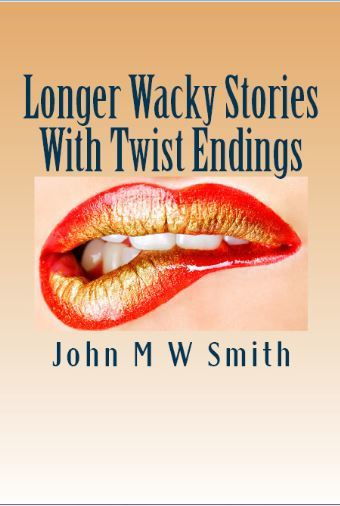

0
стр. з
0
сторінок

завантаження...

Джон Смит
Более длинные эксцентричные рассказы с неожиданной концовкой
Книгу адаптировал Сергей Андреевский
Метод чтения Ильи Франка
Сontents
DEDICATION
(Посвящение).
I would like to dedicate this book to my friend and adviser, Katerina Komissarova (мне бы хотелось посвятить эту книгу моему другу и консультанту Катерине Комиссаровой), whose kind words of encouragement (чьи добрые слова поддержки) have inspired me to write the following stories (вдохновили меня на написание следующих рассказов).
A Social Handicap
(Помеха для общества).
It was Paula’s one big handicap in life (в жизни Паулы была одна большая проблема; handicap — недостаток; помеха; дефект). A great disadvantage, both in her career prospects and in her social life (серьезная: «огромная» помеха, как для развития карьеры, так и для ее светской жизни; disadvantage — неблагоприятное положение; недостаток; both … and — как…, так и). Her friends made fun of her because of it (из-за этого ее подруги /частенько/ подшучивали над нею; to make fun of — подшучивать, насмехаться над /кем-л./). They made her feel small and inferior (из-за них она чувствовала себя незначительной и незаметной; to make smb. do smth. — заставить кого-либо сделать что-либо; to feel — трогать, щупать; чувствовать, ощущать; small — маленький; незначительный, второстепенный; inferior — находящийся ниже /по уровню, положению, званию/). Unfit for normal society (неподходящей для нормального общества).
Their constant teasing was wearing Paula down to breaking point (их постоянные поддразнивания доводили ее до исступления; to wear down — измучивать, изматывать; breaking point — “точка поломки”, кризис, критическое состояние). She wanted them to stop (ей хотелось, чтоб они прекратили). To accept her as she was (чтоб принимали ее такой, какая она есть).
career [kq'rIq], society [sq'saIqtI], because [bI'kOz]
It was Paula’s one big handicap in life. A great disadvantage, both in her career prospects and in her social life. Her friends made fun of her because of it. They made her feel small and inferior. Unfit for normal society.
Their constant teasing was wearing Paula down to breaking point. She wanted them to stop. To accept her as she was.
And what was Paula’s handicap (и в чем же заключался недостаток Паулы)?
Simple (/все/ просто). Paula did not drink (Паула не пила). No, she would never allow alcohol to pass her lovely lips (нет, никогда она бы не позволила алкоголю коснуться ее восхитительных губ; to pass — проходить, проезжать; проходить мимо, миновать).
‘Men like women who are fun (мужчинам нравятся женщины, с которыми весело; fun /прил./ — забавный; fun /сущ./ — веселье, забава),’ her friends would say (обычно говорили ее подруги). ‘Women who don’t drink are boring (женщины, которые не пьют, скучны).’ And then (и потом /еще/), ‘what chance have you of ever finding a man if you are no fun (какие у тебя шансы найти /себе/ мужчину, если с тобой не /будет/ весело)?’
They weren’t interested in why Paula didn’t drink (их не интересовало, почему Паула не пьет). Of how, when she was only seven years old, her mother died (/они не знали/, что когда ей было всего лишь семь лет от роду, ее мать умерла; old — старый; /такого-то/ возраста, /стольких-то/ лет) and her father took to drink (и отец пристрастился к выпивке; to take to — пристраститься к /чему-л./).
allow [q'laV], alcohol ['xlkqhOl], die [daI]
And what was Paula’s handicap?
Simple. Paula did not drink. No, she would never allow alcohol to pass her lovely lips.
‘Men like women who are fun,’ her friends would say. ‘Women who don’t drink are boring.’ And then, ‘what chance have you of ever finding a man if you are no fun?’
They weren’t interested in why Paula didn’t drink. Of how, when she was only seven years old, her mother died and her father took to drink.
He drank so heavily that he himself was dead within six months (он пил так сильно, что через полгода: «через шесть месяцев» умер и сам; heavily — тяжело; сильно, много) and she was placed in a foster home (и ее отдали /на воспитание/ в приемную семью; to place — ставить, размещать; помещать, отдавать /куда-л./; foster home — семья, принявшая на воспитание ребенка; to foster — воспитывать чужого ребенка /в своей семье/: to foster an orphan — брать на воспитание сироту).
Her foster parents were kind and looked after her well (приемные родители оказались добрыми и хорошо о ней заботились; to look after — присматривать за, заботиться о). But she never forgot the way she had loved her own parents (но она никогда не забывала то, как любила своих собственных родителей; to forget; way — путь, дорога; образ действия) when they were alive (когда они были живы). It was bad enough losing her mum (очень: «достаточно» плохо потерять свою мамочку). But she should never have lost her dad (но ей не следовало терять и папу; never — никогда; нисколько, никоим образом /эмоц.-усил./; to lose). And it was all because of drink, she told herself (а все это произошло из-за выпивки, говорила она себе).
heavily ['hevIlI], alive [q'laIv], enough [I'nAf]
He drank so heavily that he himself was dead within six months and she was placed in a foster home.
Her foster parents were kind and looked after her well. But she never forgot the way she had loved her own parents when they were alive. It was bad enough losing her mum. But she should never have lost her dad. And it was all because of drink, she told herself.
So Paula swore she would never drink (и вот, Паула поклялась никогда не пить; to swear).
But times change (но времена меняются). People grow up (люди вырастают). Maybe she should reconsider her decision never to drink (может быть, ей следует пересмотреть свое решение никогда не пить)? wondered Paula (размышляла Паула; to wonder — удивляться, изумляться; задаваться вопросом, сомневаться). It was certainly no fun being a social outcast (определенно, ничего приятного нет в том, чтобы быть в обществе изгоем). Her friends had stopped inviting her out (подруги перестали приглашать ее на прогулки; out — вне, снаружи). She had become sad and lonely (ей стало грустно и одиноко; to become — становиться). Getting home every evening from her office job (каждый вечер после работы в своей конторе шла домой; to get — получать, добывать; приходить, прибывать). Nothing to look forward to other than the flickering screen of her television set (/а там/ рассчитывать не на что, кроме как на мерцающий экран телевизора: «телевизионного приемника»; to look forward to — ожидать /чего-л./, надеяться на /что-л./; other than — кроме как, за исключением; set — комплект, набор; прибор, агрегат; приемник) and the purring body of her cat beneath her left hand on the sofa (и на урчащее тельце ее кота, пристроившегося на диване под ее левой рукой).
decision [dI'sIZ(q)n], certainly ['sE:tnlI], social ['sqVS(q)l]
So Paula swore she would never drink.
But times change. People grow up. Maybe she should reconsider her decision never to drink? wondered Paula. It was certainly no fun being a social outcast. Her friends had stopped inviting her out. She had become sad and lonely. Getting home every evening from her office job. Nothing to look forward to other than the flickering screen of her television set and the purring body of her cat beneath her left hand on the sofa.
And then it was New Year’s Eve again (и вот снова наступил канун Нового года). And this time her friends took pity on her (на этот раз подруги сжалились над ней; pity — жалость, сострадание), and did invite her to a house party (и пригласили на домашнюю вечеринку; do /зд./ — употребляется для усиления значения действия/). Paula was very happy to be invited (Паула очень обрадовалась, что ее пригласили; happy — счастливый; довольный). All she could hope for (все, на что она могла надеяться) was that her friends would know her well enough by now (это что подруги узнали ее достаточно неплохо к этому времени) to respect her wishes not to drink (чтобы уважать ее желание не пить).
It began well (началось все хорошо; to begin). Her friends greeted her warmly (подруги тепло ее приветствовали). There were many young men present (там присутствовало много молодых людей).
eve [i:v], would [wVd], warmly ['wO:mlI]
And then it was New Year’s Eve again. And this time her friends took pity on her, and did invite her to a house party. Paula was very happy to be invited. All she could hope for was that her friends would know her well enough by now to respect her wishes not to drink.
It began well. Her friends greeted her warmly. There were many young men present.
Paula became happy (Пауле стало весело: «радостно»), her normally still face creasing into smiles and making her look pretty (ее обычно бесстрастное лицо расплывалось в улыбке, от чего она выглядела весьма привлекательно: «и заставляло ее выглядеть привлекательной»; still — неподвижный, спокойный; to crease — образовывать складки; морщиться; to look — смотреть, глядеть; выглядеть, иметь вид).
Unfortunately all of this changed when her friends were well into their third or fourth drinks (к сожалению, все «это» изменилось, когда ее подруги пропустили по третьей, а то и по четвертой порции; to be well into smth. — серьезно заняться чем-л.; drink — питье, напиток; доза).
‘Paula, you’re being a spoilsport (Паула, ты портишь нам вечер; spoilsport — тот, кто портит удовольствие другим; to spoil — портить; sport — развлечение, приятное времяпровождение),’ said Jenny, the girl who worked in accounts (сказала Дженни, девушка, которая работала в бухгалтерском отделе; accounts — отчетность; бухгалтерия). Minutes later Jenny got asked for a dance (/несколькими/ минутами позже Дженни пригласили на танец) and began whirling around on the dance-floor (и /та/ начала кружиться по танцполу), drink in one hand and cigarette in the other (/держа/ в одной руке /стакан/ с выпивкой, а в другой — сигарету).
unfortunately [An'fO:tSVnItlI], account [q'kaVnt], whirl [wE:l]
Paula became happy, her normally still face creasing into smiles and making her look pretty.
Unfortunately all of this changed when her friends were well into their third or fourth drinks.
‘Paula, you’re being a spoilsport,’ said Jenny, the girl who worked in accounts. Minutes later Jenny got asked for a dance and began whirling around on the dance-floor, drink in one hand and cigarette in the other.
‘You’ll never get noticed if you never let yourself go (на тебя никогда не обратят внимания, если не будешь вести себя раскованно; to let oneself go — вести себя слишком вольно: «отпускать себя»),’ Lilly from personnel said to Paula (сказала Пауле Лили из /отдела/ кадров). Lilly tossed her head back to finish her drink (Лили откинула голову назад = запрокинула голову, чтобы прикончить свою порцию выпивки). Then she got up and staggered towards a young man (потом она поднялась и пошатываясь направилась к молодому человеку; to get up — вставать, подниматься) who looked surprised, but then began grinning (который /сперва/ выглядел удивленным, но потом начал ухмыляться) when Lilly flung herself into his arms, asking him to dance (когда Лили прильнула к нему, приглашая потанцевать; to fling oneself into smb.’s arms — броситься кому-л. в объятия; to fling — бросать, швырять; to ask — спрашивать, осведомляться; приглашать).
Paula stared miserably at the great big lipstick mark on Lilly’s empty glass (Паула печально смотрела на огромный /яркий/ след от губной помады на пустом стакане Лили; miserable — жалкий, несчастный; печальный; great — огромный, громадный; большущий /эмоц.-усил./; big — большой, крупный; mark — метка, знак; след, отпечаток; glass — стекло; стакан). Everyone was having such fun (все так хорошо веселились).
personnel ["pE:sq'nel], towards [tq'wO:dz], dance [dQ:ns]
‘You’ll never get noticed if you never let yourself go,’ Lilly from personnel said to Paula. Lilly tossed her head back to finish her drink. Then she got up and staggered towards a young man who looked surprised, but then began grinning when Lilly flung herself into his arms, asking him to dance.
Paula stared miserably at the great big lipstick mark on Lilly’s empty glass. Everyone was having such fun.
No one was bothering with her (никто ею не интересовался; to bother — надоедать, докучать; беспокоиться, волноваться; to bother with — возиться с /кем-л., чем-л./). Poor sober Paula (бедная трезвенница Паула). Such a bore (какая зануда; bore — скука; скучный человек, зануда)!
A surge of bitter anger rose to the back of Paula’s throat (волна горького раздражения поднялась к горлу: «задней части горла» Паулы; to rise). And all because I don’t drink! she fumed (и все потому, что я не пью! — в гневе думала она; to fume — дымить, валить /о дыме, паре/; кипеть от злости; fume — дым, испарение). Well, no one was going to change that (ну и никто не собирался менять это). Not ever (никогда). But surely, just this once, it wouldn’t harm to join in the fun (но несомненно, если только в этот раз примкнуть к /общему/ веселью, никакого же вреда не будет; just this once — только на этот раз; to harm — причинять вред; наносить ущерб). To show her friends once and for all (показать подругам раз и навсегда) that she could be fun if she needed to be (что она /тоже/ умеет веселой/забавной, если нужно). That she was no less a person than any of them (что она не хуже любой из них: «что она не меньше личность, чем любая из них»).
surge [sE:dZ], throat [TrqVt], surely ['SVqlI]
No one was bothering with her. Poor sober Paula. Such a bore!
A surge of bitter anger rose to the back of Paula’s throat. And all because I don’t drink! she fumed. Well, no one was going to change that. Not ever. But surely, just this once, it wouldn’t harm to join in the fun. To show her friends once and for all that she could be fun if she needed to be. That she was no less a person than any of them.
If she did accept a drink (если она и вправду согласится на выпивку; to accept — принимать, брать; соглашаться). Only one, mind (но, заметьте, только одну /рюмку/; to mind — помнить; обратить внимание, заметить). Maybe everything would change (может быть, все изменится)?
The music stopped and all her friends came back (музыка прекратилась, и все ее подруги вернулись назад = на свои места). They were chatting and ignored her (они болтали и на нее внимания не обращали; to ignore — игнорировать, пренебрегать, не придавать значения). The guys whom they had been dancing with (парни, с которыми они танцевали) went to the bar to fetch them more drinks (пошли к бару, чтобы принести им еще выпивку). The party was getting into full swing (вечеринка стремительно набирала обороты; to get into — входить в; full swing — разгар: «полная раскачка»; to swing — качаться, колебаться). Paula gathered all her courage up (Паула собрала = призвала на помощь всю свою храбрость).
everything ['evrITIN], whom [hu:m], courage ['kArIdZ]
If she did accept a drink. Only one, mind. Maybe everything would change?
The music stopped and all her friends came back. They were chatting and ignored her. The guys whom they had been dancing with went to the bar to fetch them more drinks. The party was getting into full swing. Paula gathered all her courage up.
‘Okay, I’ll have a drink (ладно, я выпью),’ Paula blurted out loudly (громко выкрикнула Паула; to blurt out — сболтнуть, выпалить). All her friends stopped talking and turned to stare at Paula (все ее подруги прекратили болтать и, повернувшись, уставились на Паулу). ‘I said I’ll have a drink (я сказала, что выпью). Have you all gone deaf (вы оглохли все, /что ли/; to go /зд./ — обозначает приобретение какого-либо отрицательного качества /стать таким-то/; deaf — глухой)?’ Paula went on (продолжала Паула; to go on — продолжать).
And then everyone was laughing (и тогда все засмеялись). Paula found a drink in her hand as if by magic (Паула обнаружила в своей руке /стакан/ с выпивкой, как будто по волшебству; to find — находить, отыскивать; обнаруживать). It looked like a double (похоже, там была двойная доза; to look like — быть похожим, выглядеть как). Her friends all had their eyes glued on her (подруги во все глаза уставились на нее; to glue — клеить, приклеивать; приклеиваться, прилипать). I’ll show them, thought Paula (я им покажу, — думала Паула).
laugh [lQ:f], double [dAbl], glue [glu:]
‘Okay, I’ll have a drink,’ Paula blurted out loudly. All her friends stopped talking and turned to stare at Paula. ‘I said I’ll have a drink. Have you all gone deaf?’ Paula went on.
And then everyone was laughing. Paula found a drink in her hand as if by magic. It looked like a double. Her friends all had their eyes glued on her. I’ll show them, thought Paula.
With an elaborate flourish she raised the glass to her lips (и залихватским жестом она подняла = поднесла стакан к губам; elaborate — выработанный, произведенный с трудом /устар./; детально разработанный; flourish — цветение плодового дерева, дерево в цвету; салют /перед поединком в фехтовании/; to flourish — размахивать оружием в знак триумфа, победы, потрясать оружием; салютовать), held her breath and downed the double gin and tonic in one, smooth swallow (задержала дыхание и выпила двойной джин с тоником одним долгим глотком; to hold one’s breath — задерживать дыхание; to down — опускать; глотать; smooth — гладкий, ровный) before slamming the empty glass down (прежде чем швырнуть пустой стакан на пол: «вниз»; to slam down — бросать со стуком, швырять). A great cheer went up around the table (вокруг стола раздались громкие крики одобрения; cheer — одобрительное, приветственное восклицание; to go up — раздаваться, подниматься /о звуке, крике/). Her friends were clapping (подруги аплодировали). One or two guys had noticed and were looking at her, as if impressed (несколько парней уже заметили ее и теперь смотрели, будто бы находясь под впечатлением; one or two — “один или два”, несколько; as if — словно, будто бы; to impress — штемпелевать, отпечатывать; производить впечатление).
flourish ['flArIS], breath [breT], swallow ['swOlqV], cheer [tSIq]
With an elaborate flourish she raised the glass to her lips, held her breath and downed the double gin and tonic in one, smooth swallow before slamming the empty glass down. A great cheer went up around the table. Her friends were clapping. One or two guys had noticed and were looking at her, as if impressed.
The gin and tonic hit Paula’s stomach like the kick of a mule (джин с тоником ударили Паулу в желудок/живот, будто мул /своим/ копытом; to hit; kick — удар, толчок ногой/копытом). A soft buzzing began in her head (в голове слегка загудело: «легкое гудение началось в ее голове»; soft — мягкий; легкий, неясный). ‘See?’ she asked her friends defiantly (видите? — вызывающе спросила она у подруг).
A guy with bad teeth and a large, bald patch asked Paula for a dance (парень с испорченными зубами и обширной плешью пригласил Паулу на танец; bald — лысый, плешивый; patch — клочок, лоскут; пятно участок). She didn’t care for him (он был ей не интересен; to care for — питать интерес к) — — — all she cared about was that a guy had taken notice of her at last (все, что ей было нужно, это чтобы любой парень ее заметил наконец; to care about — заботиться о; to take notice — замечать; at last — наконец, наконец-таки). So Paula danced, trying not to look at the guy too much (поэтому Паула танцевала, стараясь не слишком смотреть на своего кавалера: «на парня»).
stomach ['stAmqk], buzz [bAz], defiantly [dI'faIqntlI]
The gin and tonic hit Paula’s stomach like the kick of a mule. A soft buzzing began in her head. ‘See?’ she asked her friends defiantly.
A guy with bad teeth and a large, bald patch asked Paula for a dance. She didn’t care for him — — — all she cared about was that a guy had taken notice of her at last. So Paula danced, trying not to look at the guy too much.
Then she noticed with a start (тут она заметила, вздрогнув; start — начало; вздрагивание; толчок) that someone had handed her another drink (что кто-то протягивает ей еще одну порцию выпивки). It wasn’t easy to dance with a drink in one hand (танцевать со стаканом в руке было неудобно; easy — легкий, нетрудный; удобный), so Paula downed this drink, too, in one long swallow (так что Паула выпила и эту порцию тоже одним долгим глотком).
Now Paula began feeling dizzy (тут Паула почувствовала: «начала чувствовать» головокружение). ‘Excuse me — — — I don’t feel too good (простите меня… я чувствую себя не очень: «не слишком» хорошо). I must sit down (мне нужно: «я должна» сесть),’ she said to her dancing partner (сказала она своему партнеру по танцу). The guy looked disappointed (парень выглядел огорченным; disappointed — разочарованный; огорченный). He’d thought it was his lucky night (он уже полагал, что в этот вечер ему улыбнется удача: «что это его удачный вечер»; to think — думать, размышлять; полагать, считать), for Paula was a good-looking girl (поскольку Паула была девушкой симпатичной: «хорошо выглядящей») — — — too good-looking for him, anyway (слишком симпатичной для него, во всяком случае).
down [daVn], guy [gaI], disappointed ["dIsq'pOIntId]
Then she noticed with a start that someone had handed her another drink. It wasn’t easy to dance with a drink in one hand, so Paula downed this drink, too, in one long swallow.
Now Paula began feeling dizzy. ‘Excuse me — — — I don’t feel too good. I must sit down,’ she said to her dancing partner. The guy looked disappointed. He’d thought it was his lucky night, for Paula was a good-looking girl — — — too good-looking for him, anyway.
Never having had a drink before (/поскольку она/ никогда не выпивала раньше), this was a completely new experience for Paula (то для Паулы это были совершенно новые впечатления; experience — /жизненный/ опыт; впечатление, переживание). It all felt so strange (все это казалось таким странным; to feel — чувствовать, ощущать). In a way it felt nice, but in a way it scared her (отчасти ощущение было приятным, но немного пугало ее; in a way — в некотором отношении, в определенной мере) because she didn’t seem in full control of herself anymore (потому что ей казалось, будто она не полностью владеет собой; in control of — /иметь/ контроль над; full — полный, наполненный целиком; полный, несокращенный). And this was a feeling that she did not like (а это ощущение ей не нравилось). She thought of her real dad (она подумала о своем родном папочке; real — реально существующий, настоящий), who had lost all control of himself and had ended up dead (который совершенно утратил контроль: «утратил весь контроль» над собой, отчего в результате умер; to end up — закончить, завершить /тем, что…/; dead — мертвый).
completely [kqm'pli:tlI], experience [Ik'spI(q)rIqns], thought [TO:t]
Never having had a drink before, this was a completely new experience for Paula. It all felt so strange. In a way it felt nice, but in a way it scared her because she didn’t seem in full control of herself anymore. And this was a feeling that she did not like. She thought of her real dad, who had lost all control of himself and had ended up dead.
Suddenly Paula had had enough (внезапно Паула /поняла, что с нее/ довольно; to have enough — быть сытым по горло). She wanted out of there (ей захотелось уйти оттуда). Away from her so-called friends (прочь от своих так называемых подруг). Away from the grinning, sweaty guys who danced with them (прочь от ухмыляющихся, потеющих парней, которые танцуют с ними). The way Paula was feeling now (тут Паула почувствовала; way — путь, дорога; состояние), she had started longing for her old familiar sofa (что уже начала скучать по старенькому привычному дивану; to long for — тосковать, скучать по), the flickering television set, and her cat purring beside her (по мерцающему /экрану/ телевизора и по своему коту, урчащему рядышком с ней).
‘Thank you all, but I don’t feel well (спасибо «вам» всем, но я чувствую себя нехорошо) so I’d better get on home now (поэтому сейчас мне лучше поехать домой),’ said Paula as she swayed to her feet (сказала Паула, нетвердо стоя: «качаясь» на ногах) when her friends returned from the dancefloor (когда подруги вернулись с танцплощадки).
familiar [fq'mIlIq], purr [pE:], return [rI'tE:n]
Suddenly Paula had had enough. She wanted out of there. Away from her so-called friends. Away from the grinning, sweaty guys who danced with them. The way Paula was feeling now, she had started longing for her old familiar sofa, the flickering television set, and her cat purring beside her.
‘Thank you all, but I don’t feel well so I’d better get on home now,’ said Paula as she swayed to her feet when her friends returned from the dancefloor.
They started persuading her to stay and have another drink (те принялись: «начали» уговаривать ее остаться и выпить еще; to persuade — убеждать; уговаривать; another — другой, еще один). ‘It will make you feel better, you wait and see (тебе станет лучше: «это заставит тебя почувствовать себя лучше», погоди, /сама/ увидишь)!’ one of them said (сказала одна из них). But Paula didn’t listen (но Паула не слушала). She was aware of their amused looks (она представила себе их удивленные взгляды; to be aware of — знать, осознавать; aware — знающий, сознающий) as she tottered out of the room and let herself out of the house (когда нетвердой походкой вышла из комнаты и покинула тот дом; to let out — выпускать, освобождать).
Far from her problems being over (/на этом/ неприятности: «проблемы» не закончились; far from — далеко не; to be over — окончиться, завершиться), Paula quickly discovered that they were only just beginning (Паула быстро = вскоре обнаружила, что они лишь только начинались).
persuade [pq'sweId], listen ['lIs(q)n], amuse [q'mju:z]
They started persuading her to stay and have another drink. ‘It will make you feel better, you wait and see!’ one of them said. But Paula didn’t listen. She was aware of their amused looks as she tottered out of the room and let herself out of the house.
Far from her problems being over, Paula quickly discovered that they were only just beginning.
For the first time the windscreen of her car appeared cloudy (впервые лобовое стекло ее машины казалось /каким-то/ мутным; to appear — появляться, показываться; казаться, производить впечатление; cloudy — покрытый облаками; мутный, непрозрачный; cloud — облако), and she decided to give it a good clean the next day (и она решила хорошенько вымыть его на следующий день; clean — чистка). And her foot kept slipping off the accelerator (ее нога постоянно соскальзывала с акселератора; to keep doing — продолжать, не прекращать делать /что-л./; accelerator — ускоритель; акселератор, педаль газа). Obviously the pedal was worn out and it would need to be changed (очевидно, педаль стерлась, и ее необходимо будет заменить; to wear out — изнашивать/ся/). And it was really dark outside (и снаружи было по-настоящему темно). Paula had never known an August night to look so dark before (Паула никогда раньше и не знала, что в августе ночи бывают: «выглядят» такими темными). Everything had become very scary (все /вокруг/ сделалось таким жутким; very — очень, весьма) and Paula did not like it at all (и Пауле это совершенно не нравилось; at all — вовсе, совершенно).
cloudy ['klaVdI], accelerator [qk'selqreItq], obviously ['ObvIqslI]
For the first time the windscreen of her car appeared cloudy, and she decided to give it a good clean the next day. And her foot kept slipping off the accelerator. Obviously the pedal was worn out and it would need to be changed. And it was really dark outside. Paula had never known an August night to look so dark before. Everything had become very scary and Paula did not like it at all.
Right there and then she decided (она тотчас же решила; right there and then — «прямо там и тогда», тотчас) that it had been a huge mistake to drink (что, когда выпила, сделала огромную ошибку). Okay, it was all right for her friends (ну, ладно, ее подругам это подходит; all right — все правильно; приемлемо, как нужно). It seemed to make them happy (похоже, выпивка делает их счастливыми). But it definitely didn’t make her feel happy (но она от нее определенно не чувствует себя счастливой).
With her moist hands gripping the steering wheel tightly (крепко вцепившись в руль повлажневшими ладонями: «руками»; steering wheel — рулевое колесо; to steer — направлять, править /автомобилем и т. п./), Paula swore she would never drink again (Паула поклялась, что больше никогда не будет пить «снова»; to swear) if only her luck allowed her to get home without trouble (если только судьба позволит ей добраться домой без неприятностей).
But it was not to be (но не тут-то было; but it was not to be — но этому не суждено было осуществиться).
Halfway from home, two big blue lights started flashing in her rear view mirror (на полпути к дому в зеркале заднего вида замигали: «начали вспыхивать» два больших синих фонаря).
without [wI'DaVt], trouble ['trAb(q)l], view [vju:]
Right there and then she decided that it had been a huge mistake to drink. Okay, it was all right for her friends. It seemed to make them happy. But it definitely didn’t make her feel happy.
With her moist hands gripping the steering wheel tightly, Paula swore she would never drink again if only her luck allowed her to get home without trouble.
But it was not to be.
Halfway from home, two big blue lights started flashing in her rear view mirror.
Oh no! Paula groaned (о, нет! — Паула застонала). The police (полиция)! They would smell the drink on her breath (они услышат, что он нее пахнет спиртным: «они унюхают выпивку в ее дыхании»). She would lose her licence (она лишится водительских прав; to lose — утрачивать, лишаться; licence — лицензия, официальное разрешение). She would also lose her job (она также лишится работы), because she needed to drive at work (потому что ей нужно ездить на работу /на машине/) to visit clients on behalf of her employer (чтобы посещать клиентов/заказчиков от имени своего работодателя; on behalf of — в интересах, по поручению /кого-л./). And all because of one, silly mistake (и все из-за одной глупой ошибки; because of — из-за)!
Paula pulled over to the side of the road, shaking all over (Паула, вся дрожа, съехала на обочину дороги; to pull over — съезжать на обочину; all over — всюду, повсюду). The police car stopped in front (полицейская машина остановилась впереди). A tall figure got out (/из нее/ выбралась высокая фигура; to get out — выходить, высаживаться).
licence ['laIs(q)ns], client ['klaIqnt], behalf [bI'hQ:f], figure ['fIgq]
Oh no! Paula groaned. The police! They would smell the drink on her breath. She would lose her licence. She would also lose her job, because she needed to drive at work to visit clients on behalf of her employer. And all because of one, silly mistake!
Paula pulled over to the side of the road, shaking all over. The police car stopped in front. A tall figure got out.
But why was it so dark everywhere (но почему же повсюду так темно)? Paula wound down her window as the policeman came up (Паула опустила стекло, когда полицейский подошел; to wind down — открывать окно транспортного средства с помощью вращения ручки; to wind — вертеть, крутить, повертывать, поворачивать /ручку и т. п./).
‘Do you know why you have been stopped, madam (вы знаете, почему вас остановили, мадам)?’ a deep voice enquired (осведомился = раздался низкий голос; deep — глубокий; низкий /о звуке/). Paula felt tears in her eyes (Паула почувствовала у себя на глазах слезы). Her entire life lay ruined in tatters (вся ее жизнь рушилась на глазах; to lie ruined — лежать в развалинах; in tatters — полностью разрушенный; tatters — лохмотья, клочья). ‘I….I only had one drink,’ she lied (я… я выпила только один стаканчик, солгала она). ‘I swear I never drink (клянусь, я никогда не пью). I won’t ever do it again (я не буду никогда больше этого делать). I’ll lose my job (я потеряю работу). Please, officer, can’t you let me go (пожалуйста, офицер, не могли бы вы меня отпустить)? Please, oh please say yes (пожалуйста, о, пожалуйста, скажите “да”)!
wound [waVnd], enquire [In'kwaIq], lie [laI]
But why was it so dark everywhere? Paula wound down her window as the policeman came up.
‘Do you know why you have been stopped, madam?’ a deep voice enquired. Paula felt tears in her eyes. Her entire life lay ruined in tatters. ‘I….I only had one drink,’ she lied. ‘I swear I never drink. I won’t ever do it again. I’ll lose my job. Please, officer, Can’t you let me go? Please, oh please say yes!
The tall policeman bent down (высокий полицейский наклонился «вниз»; to bend) so that his face was level with Paula’s (так что его лицо оказалось на уровне /лица/ Паулы). ‘Now that’s interesting (а вот это интересно). I didn’t know you had been drinking (я и не знал, что вы пили). I stopped you because you’d forgotten to switch your headlights on (я остановил вас, потому что вы забыли включить передние фары; to forget; to switch on — включать /свет, радио и т.п./). But now — — — well, now I’ll have to breathalyse you (но теперь… ну, теперь мне придется провести вам тест на алкоголь; breath — дыхание) to find out just how much you have been drinking (чтобы выяснить, как много вы пили; to find out — разузнать, выяснить).’
Paula’s heart sank right down to the bottom of her high-heeled shoes (сердце Паулы упало до самого дна ее туфель на высоком каблуке; to sink — погружаться /под воду/, тонуть; опускаться, падать; right down — совершенно, полностью; bottom — низ, нижняя часть; дно; heel — пятка, пята; каблук). She felt sick (она почувствовала тошноту; sick — больной, болезненный; нездоровый, испытывающий недомогание; to feel sick — чувствовать тошноту). She and her big mouth (вот он, ее длинный язык: «она и ее большой рот»)!
policeman [pq'li:s|mqn], breathalyse ['breT(q)laIz], high [haI]
The tall policeman bent down so that his face was level with Paula’s. ‘Now that’s interesting. I didn’t know you had been drinking. I stopped you because you’d forgotten to switch your headlights on. But now — — — well, now I’ll have to breathalyse you to find out just how much you have been drinking.’
Paula’s heart sank right down to the bottom of her high-heeled shoes. She felt sick. She and her big mouth!
If only she’d kept it shut (если бы она держала рот на замке: «держала его закрытым»; to keep — сохранять /в определенном состоянии/) the policeman would have told her to put her lights on (полицейский велел бы ей включить фары; to tell — рассказывать; велеть, приказывать; to put on — включать, приводить в действие), she’d have apologised for the mistake, and quietly driven off (она бы извинилась за оплошность и преспокойно бы уехала; mistake — ошибка; недоразумение). Maybe he wouldn’t have smelled the liquor on her breath, him being so tall (а может, он не услышал бы алкоголя в ее дыхании, будучи такого высокого роста).
‘Will you please step out of your car (выйдите, пожалуйста, из машины; to step out — выходить /ненадолго/),’ the policeman was saying (/тем временем/ говорил полицейский). ‘I’ll fetch the breathalyser (я принесу трубку; breathalyser — алкогольно-респираторная трубка).’ He turned and began walking back to his car (он повернулся и пошел: «начал идти» назад к своей машине).
apologise [q'pPlqdZaIz], quietly ['kwaIqtlI], liquor ['lIkq]
If only she’d kept it shut the policeman would have told her to put her lights on, she’d have apologised for the mistake, and quietly driven off. Maybe he wouldn’t have smelled the liquor on her breath, him being so tall.
‘Will you please step out of your car,’ the policeman was saying. ‘I’ll fetch the breathalyser.’ He turned and began walking back to his car.
Paula got out of her car (Паула вышла из машины). Outside her face felt cold (снаружи она ощутила на лице холодок) where the breeze hit the tears running down her cheeks (когда /порыв/ ветра ударил по слезам, бегущим по ее щекам; to hit — ударять). She would beg (она будет просить). She would plead (она будет умолять). She would do anything (она сделает все, что угодно). She had glimpsed the policeman’s face (она видела мельком лицо полицейского). It was a kind face (это было доброе лицо). And his aftershave, well, the aroma was simply divine (и аромат его лосьона после бритья был просто божественным; aftershave — лосьон после бритья; to shave — брить/ся/). He was the kind of man you could feel safe with, Paula decided (он человек такого рода, с которым чувствуешь себя в безопасности, — решила Паула). He would listen (он выслушает).
Paula began following the policeman to his car (Паула проследовала за полицейским к его машине).
breeze [bri:z], aroma [q'rqVmq], divine [dI'vaIn]
Paula got out of her car. Outside her face felt cold where the breeze hit the tears running down her cheeks. She would beg. She would plead. She would do anything. She had glimpsed the policeman’s face. It was a kind face. And his aftershave, well, the aroma was simply divine. He was the kind of man you could feel safe with, Paula decided. He would listen.
Paula began following the policeman to his car.
She began to call out brokenly (она начала /что-то/ сбивчиво говорить: «прерывисто выкрикивать»). He completely ignored her (но он совсем не обращал на нее внимания; completely — полностью, совершенно).
Just then another car went by (как раз в этот момент мимо проехала «другая» машина; just then — в этот самый момент). And then another (а потом — еще одна). Paula glimpsed the driver of the first car looking over his shoulder (Паула заметила, что водитель первой машины оглядывается: «смотрит» через плечо) to see what was going on at the side of the road (чтобы увидеть, что происходит на обочине дороги; to go on — происходить, случаться). The driver of the second car did the same (водитель второй машины сделал то же самое). And then there was an almighty crash (и тут раздался ужасный грохот; almighty — всемогущий; ужасный, жуткий /эмоц.-усил./) as the second car went into the back of the one in front (когда вторая машина въехала в зад той, /что находилась/ впереди).
completely [kqm'pli:tlI], shoulder ['SqVldq], almighty /прил./ [E:l'maItI]
She began to call out brokenly. He completely ignored her.
Just then another car went by. And then another. Paula glimpsed the driver of the first car looking over his shoulder to see what was going on at the side of the road. The driver of the second car did the same. And then there was an almighty crash as the second car went into the back of the one in front.
Paula heard the policeman curse under his breath (Паула услышала, как полицейский негромко выругался; to hear; under one’s breath — тихо, шепотом). And then he was running towards the two cars (а потом побежал к этим двум автомобилям) as the drivers got out, dazed and unsteady (тогда как их изумленные водители на нетвердых ногах выбрались наружу; unsteady — неустойчивый, нетвердый).
Now (сейчас)! Thought Paula (подумала Паула). Right now (прямо сейчас)! This was her chance (это ее счастливый случай). Her only one chance (ее единственный шанс). She would quickly get into her car and leave (она быстро сядет в машину и уедет; to leave — оставлять, покидать; уходить, уезжать) while the policeman was busy (покуда полицейский занят).
With a soft whimper Paula turned around and backed away (с легким хныканьем, Паула повернулась и пошла назад; to back away — сдавать назад), her eyes never leaving the three figures on the other side of the road (не сводя глаз с трех фигур: «ее глаза на оставляли трех фигур» на другой стороне дороги; never — никогда; никоим образом /эмоц.-усил./).
curse [kE:s], unsteady [An'stedI], while [waIl]
Paula heard the policeman curse under his breath. And then he was running towards the two cars as the drivers got out, dazed and unsteady.
Now! Thought Paula. Right now! This was her chance. Her only one chance. She would quickly get into her car and leave while the policeman was busy.
With a soft whimper Paula turned around and backed away, her eyes never leaving the three figures on the other side of the road.
Easy now (теперь не спешить; easy — легко, без труда; спокойно, неторопливо). No sudden moves (никаких резких движений; sudden — внезапный, неожиданный; быстрый, стремительный). Quietly does it (делается это спокойно).
Her luck was in (удача ее не покинула; to be in — находиться на месте). She managed to get inside behind the steering wheel (ей удалось забраться внутрь /и сесть/ за руль; to manage — руководить, управлять; суметь сделать, ухитриться; to get — получать, добывать; попадать, добираться /до какого-л. места/). Her left hand pushed the automatic gearshift to ‘drive’ (левой рукой она переключила рычаг автоматической коробки передач /в положение/ “Драйв”; drive — езда) with her right foot on the brake (правую ногу /держа/ на /педали/ тормоза).
Now! Go for it (а теперь — вперед; go for it! — действуй!)!
Paula plunged the accelerator to the floorboards (Паула вдавила педаль газа в пол; to plunge — погружать, окунать; floorboards — половицы, настил) and the car shot away like a rocket (а машина понеслась, словно ракета; to shoot — стрелять, производить выстрел; пронестись, промчаться). Too fast even for the policeman to get a look at her numberplate (слишком быстро, чтобы даже полицейский /смог/ рассмотреть ее номера; to get /зд./ — в сочетании с последующим существительным выражает действие, соответствующее значению существительного; numberplate — табличка с номерным знаком /автомобиля/).
steering wheel ['stI(q)rINwi:l], automatic ["O:tq'mxtIk], gearshift ['gIqSIft]
Easy now. No sudden moves. Quietly does it.
Her luck was in. She managed to get inside behind the steering wheel. Her left hand pushed the automatic gearshift to ‘drive’ with her right foot on the brake.
Now! Go for it!
Paula plunged the accelerator to the floorboards and the car shot away like a rocket. Too fast even for the policeman to get a look at her numberplate.
Paula was sure of that (Паула была в этом уверена). He hadn’t been quick enough to turn around (он не успел даже обернуться: «он был не достаточно быстр, чтобы обернуться»).
And now she was a criminal (и вот теперь она стала преступницей)! Running away from the police (убегает от полиции). If she got caught she could go to jail (если ее поймают, она может отправиться в тюрьму; to get caught — быть пойманным; to catch). Forget losing her licence and her job (и забыть о потере водительских прав и о своей работе)!
With great sobs wracking her slender body (с безудержными рыданиями сотрясавшими ее стройное тело; to wrack — полностью разрушить) Paula pulled into her driveway, opened her car door (Паула въехала на подъездную аллею к своему /дому/, открыла дверцу машины; to pull into — заехать, въехать), staggered into her house past her surprised looking cat (пошатываясь вошла в дом мимо удивленного кота), and into the bathroom (и /направилась/ в ванную). There her whole body convulsed with fear and the effects of alcohol (там все ее тело содрогнулось от /пережитого/ страха и от воздействия алкоголя; effect — результат, следствие; воздействие, влияние), and she got sick (и ее стошнило). Over and over again (потом еще и еще; over and over again — снова и снова, неоднократно).
caught [kO:t], convulse [kqn'vAls], alcohol ['xlkqhOl]
Paula was sure of that. He hadn’t been quick enough to turn around.
And now she was a criminal! Running away from the police. If she got caught she could go to jail. Forget losing her licence and her job!
With great sobs wracking her slender body Paula pulled into her driveway, opened her car door, staggered into her house past her surprised looking cat, and into the bathroom. There her whole body convulsed with fear and the effects of alcohol, and she got sick. Over and over again.
‘Never again,’ she sobbed (никогда больше, — всхлипывала она). To hell with her friends (к чертям ее подруг)! She hadn’t been happy with her loneliness (она не была счастлива в своем одиночестве), but at least she’d been safe (но, по крайней мере, была в безопасности; at least — по крайне мере, во всяком случае)!
After what seemed like a long time (спустя, как /ей/ показалось, /довольно/ долгое время), Paula stopped getting sick (Паулу тошнить перестало). She washed her face (она вымыла лицо = умылась). Then she went to her bedroom and changed into clean clothes (потом пошла в спальню и переоделась в чистую одежду; to change — менять, изменять; переодеваться; clothes — одежда, платье). Occasionally a little sob still escaped her (иногда всхлипывания все еще вырывались у нее; to escape — бежать /из заключения/, совершать побег; вырваться, сорваться /о словах, звуках/).
And then she went to the kitchen to make some coffee (а потом она пошла на кухню, чтобы сварить кофе) — — — where she glanced out of the kitchen window (где из окна кухни выглянула на улицу: «наружу») and felt her breath whoosh out (и почувствовала, как дыхание со свистом вырывается у нее из /груди/; to whoosh — пронестись со свистом) as her legs almost buckled underneath her (а ноги чуть ли не подкашиваются под ней; almost — почти).
occasionally [q'keIZ(q)nqlI], whoosh [wu(:)S], underneath ["Andq'ni:T]
‘Never again,’ she sobbed. To hell with her friends! She hadn’t been happy with her loneliness, but at least she’d been safe!
After what seemed like a long time, Paula stopped getting sick. She washed her face. Then she went to her bedroom and changed into clean clothes. Occasionally a little sob still escaped her.
And then she went to the kitchen to make some coffee — — — where she glanced out of the kitchen window and felt her breath whoosh out as her legs almost buckled underneath her.
It was the police (это полиция)! Lights flashing outside (снаружи вспыхивали огни). That policeman must have seen her number-plate after all (тот полицейский, должно быть, все-таки увидел ее номерные знаки; after all — в конце концов; тем не менее, все же). It was over (все кончено). A strange calm seemed to come over Paula (странное спокойствие снизошло на Паулу). Idly she wondered what it would be like inside a jail (она лениво раздумывала о том, каково это: «на что похоже» находиться в тюрьме).
Yes, that very same policeman was at her door, knocking (да, тот самый полицейский был у ее двери и стучал). She could see him, too, through the window (Паула смогла разглядеть его через окно).
Paula undid the door latch and opened the door (Паула отодвинула щеколду и открыла дверь; to undo — снимать /замок/, открывать).
‘I’m sorry, officer (простите, офицер). I’ll take whatever is coming to me (я приму все, что мне бы ни грозило; to come /зд./ — ожидаться, предстоять),’ she said as she looked up into the policeman’s face (сказала она, посмотрев полицейскому в лицо).
calm [kQ:m], wonder ['wAndq], knocking [nOkIN]
It was the police! Lights flashing outside. That policeman must have seen her number-plate after all. It was over. A strange calm seemed to come over Paula. Idly she wondered what it would be like inside a jail.
Yes, that very same policeman was at her door, knocking. She could see him, too, through the window.
Paula undid the door latch and opened the door.
‘I’m sorry, officer. I’ll take whatever is coming to me,’ she said as she looked up into the policeman’s face.
He really was so very good-looking (он и вправду был очень симпатичным). Now here was a man she could really go for (и вот здесь = перед ней находится мужчина, в которого она действительно могла бы влюбиться; to go for — увлечься /кем-л./, влюбиться). Who would see to it that she was never lonely again (который позаботился бы о том, чтобы она никогда больше не была одинокой; to see to it that — проследить за тем, чтобы). Of all the bad, bad luck in the world (из всего плохого это — самое большое невезенье; bad luck — невезение, несчастье; in the world — «на свете» /эмоц.-усил./, совсем, вообще)! Paula wished that the ground would open beneath her and swallow her up (Пауле захотелось, чтоб под ней разверзлась: «раскрылась» земля и поглотила ее).
Then she realised that the policeman was still standing looking down at her (тут она поняла, что полицейский продолжает стоять и смотреть на нее /сверху/ вниз). He hadn’t moved (он не шевелился). He hadn’t even said a word (он даже не сказал ни слова). What was going on (что же происходит)? Out of the corner of her eye Paula noticed something else (краем: «углом» глаза Паула заметила кое-что еще).
really ['rI(q)lI], lonely ['lqVnlI], ground [graVnd]
He really was so very good-looking. Now here was a man she could really go for. Who would see to it that she was never lonely again. Of all the bad, bad luck in the world! Paula wished that the ground would open beneath her and swallow her up.
Then she realised that the policeman was still standing looking down at her. He hadn’t moved. He hadn’t even said a word. What was going on? Out of the corner of her eye Paula noticed something else.
Now this was really puzzling (а вот это в самом деле было весьма странно; to puzzle — озадачивать, приводить в недоумение). Her own car was actually parked behind the police car in her driveway (ее собственная машина, как ни странно, была припаркована на подъездной аллее позади полицейской; actually — фактически, на самом деле; как ни удивительно).
‘Uh — — it’s not as simple as that,’ the policeman finally said (э… не все так просто, — наконец сказал полицейский). ‘My name is Kevin, by the way (меня зовут: «мое имя» Кевин, кстати; by the way — между прочим). Um — — you ran away but you took my car (э… вы удрали, но только взяли мою машину; to run away — убегать, удирать). Not your own (а не свою).’
Aaaarrrgh (уф)! Now Paula nearly fainted, her knees giving way (тут Паула чуть не упала в обморок, ее колени дрогнули; to give way — уступать; поддаваться; подламываться), so that the policeman was forced to catch her in his strong arms (так что полицейский был вынужден подхватить: «поймать» ее на свои сильные руки; to force — заставлять, принуждать) before she hit the ground (прежде чем она ударилась о землю). She’d stolen a police car to get away on top of everything else (она, чтобы удрать, украла полицейскую машину вдобавок ко всему остальному; to steal; on top of — сверх /чего-л./, вдобавок)!
actually ['xktS(V)qlI], driveway ['draIvweI], finally ['faInqlI]
Now this was really puzzling. Her own car was actually parked behind the police car in her driveway.
‘Uh — — it’s not as simple as that,’ the policeman finally said. ‘My name is Kevin, by the way. Um — — you ran away but you took my car. Not your own.’
Aaaarrrgh! Now Paula nearly fainted, her knees giving way, so that the policeman was forced to catch her in his strong arms before she hit the ground. She’d stolen a police car to get away on top of everything else!
‘Look…’ Kevin the policeman was saying (послушайте: «посмотрите».., — сказал полицейский Кевин) as he held Paula in his arms, close against his chest (держа Паулу на руках /совсем/ близко к своей груди; to hold). ‘I’ll make a deal with you (я заключу с вами сделку; to make deal with — заключить сделку с /кем-л./). I can’t afford to let anyone know (я не могу позволить, чтобы кто-либо узнал) that you managed to drive off in my car (что вам удалось уехать в моей машине). I’d be laughed out of the police force (меня засмеет все полицейское управление: «полицейские силы»). I’ll forget about everything if you will do the same (я забуду обо всем, если вы сделаете то же самое).’
It took a few moments for his words to sink in (потребовалось несколько минут, чтобы осознать его слова; to take — брать; требовать, отнимать /время/; to sink in — впитывать; дойти /о смысле, значении/). And there they stood, holding each other close (так они и стояли, тесно прижавшись друг к другу: «держа друг друга близко»; to stand). Staring into each other’s eyes (и смотрели друг другу в глаза) as Paula’s breath slowly steadied even though her heart was still racing (пока дыхание Паулы мало-помалу: «медленно» восстанавливалось, хоть сердце ее все еще бешено колотилось; to steady — укреплять, придавать устойчивость; приходить в устойчивое состояние; even though — несмотря на то, что; to race — соревноваться в скорости; мчаться, нестись).
afford [q'fO:d], breath [breT], heart [hQ:t]
‘Look…’ Kevin the policeman was saying as he held Paula in his arms, close against his chest. ‘I’ll make a deal with you. I can’t afford to let anyone know that you managed to drive off in my car. I’d be laughed out of the police force. I’ll forget about everything if you will do the same.’
It took a few moments for his words to sink in. And there they stood, holding each other close. Staring into each other’s eyes as Paula’s breath slowly steadied even though her heart was still racing.
‘Okay. It’s a deal (хорошо, договорились; it’s a deal! — хорошо!, годится!; deal — сделка, соглашение),’ she mumbled through the sad smile that was forming on her lips (пробормотала она с грустной улыбкой, появляющейся у нее на губах; to form — придавать/принимать форму; образовываться, возникать). ‘But I don’t think I’ll ever be able to forget you, Kevin (но не думаю, что когда-нибудь смогу забыть вас, Кевин; to be able — быть в состоянии, мочь; able — способный).’
And now Kevin began to smile (а теперь начал улыбаться Кевин) — — — a smile that warmed Paula to the inside of her body (улыбкой, которая согрела у Паулы все внутри: «согрела внутреннюю часть ее тела») better than any drink could (лучше, чем могла бы /согреть/ любая выпивка). ‘In that case how about dinner sometime at the weekend, Paula (в таком случае, как насчет поужинать когда-нибудь в уикенд, Паула; dinner — обед /главный прием пищи/; ужин)?’
‘You know my name?’ she whispered (вы знаете мое имя? — прошептала она).
mumble ['mAmb(q)l], through [Tru:], whisper ['wIspq]
‘Okay. It’s a deal,’ she mumbled through the sad smile that was forming on her lips. ‘But I don’t think I’ll ever be able to forget you, Kevin.’
And now Kevin began to smile — — — a smile that warmed Paula to the inside of her body better than any drink could. ‘In that case how about dinner sometime at the weekend, Paula?’
‘You know my name?’ she whispered.
‘It wasn’t difficult to find out (узнать его было нетрудно), seeing as you’d left your own car behind (поскольку вы оставили свою машину «позади себя»; seeing as — принимая во внимание, так как; to leave) and I had to drive it back home to you (и мне пришлось пригнать ее назад к вашему дому),’ laughed Kevin (рассмеялся Кевин).
‘Thanks for the invitation,’ said Paula (спасибо за приглашение, — сказала Паула). ‘Dinner would be nice (ужин — это было бы славно). On one condition — — please don’t expect me to drink (но при одном условии — пожалуйста, не ждите, что я буду выпивать).’
Kevin nodded (Кевин кивнул). ‘You don’t need to drink to have men find you attractive (вам необязательно выпивать, чтобы мужчины находили = считали вас привлекательной),’ he whispered (прошептал он).
difficult ['dIfIk(q)lt], behind [bI'haInd], attractive [q'trxktIv]
‘It wasn’t difficult to find out, seeing as you’d left your own car behind and I had to drive it back home to you,’ laughed Kevin.
‘Thanks for the invitation,’ said Paula. ‘Dinner would be nice. On one condition — — please don’t expect me to drink.’
Kevin nodded. ‘You don’t need to drink to have men find you attractive,’ he whispered.
Mobile Love
(“Мобильный” возлюбленный;
mobile — подвижной, передвижной; love — любовь; предмет любви, возлюбленный).
Sitting alone on a park bench eating her lonely lunch sandwich (сидя в одиночестве в парке на скамейке и поедая свой завтрак, /состоящий/ из одинокого сэндвича), Mandy wiped a tear from her eye (Мэнди смахнула: «вытерла» слезу с глаза) as she remembered her dead mother’s words (когда вспомнила слова своей покойной матушки).
‘Never try to change the one you love (никогда не пытайся изменить того, кого ты любишь). When you marry someone, you marry their faults as well (если выходишь за кого-то замуж, то выходишь замуж и за его недостатки тоже; as well — тоже, также). The trouble starts when you forget this (проблемы начинаются, когда ты забываешь об этом; trouble — беспокойство; неприятность, злоключение). When you try to change something about your partner (если ты пытаешься изменить в своем партнере что-то) that you don’t like (что тебе не нравится).’
Yes, that is what my poor mum used to say, thought Mandy (да, так говаривала моя бедная мамочка, — подумала Мэнди; used to — оборот используется при описании событий, которые регулярно происходили в прошлом).
lunch [lAntS], dead [ded], fault [fO:lt]
Sitting alone on a park bench eating her lonely lunch sandwich, Mandy wiped a tear from her eye as she remembered her dead mother’s words.
‘Never try to change the one you love. When you marry someone, you marry their faults as well. The trouble starts when you forget this. When you try to change something about your partner that you don’t like.’
Yes, that is what my poor mum used to say, thought Mandy.
Mandy had never tried to change Desmond (Мэнди никогда не пыталась изменить Дезмонда). She said nothing when he stayed out late (она ничего не говорила, когда он засиживался допоздна; to stay out — отсутствовать, не возвращаться домой), drinking with his work friends (выпивая со своими друзьями по работе). He never gave Mandy any compliments (он никогда не делал: «не давал» Мэнди комплименты) — — about her looks or her cooking (насчет того, как она выглядит или как готовит: «насчет ее внешности или готовки»; look — взгляд; вид, наружность). He frequently fought with his boss and lost his job (он часто конфликтовал со своим начальством и терял работу; to fight — сражаться, воевать; ссориться; boss /зд., разг./ — хозяин, шеф; to lose). He chatted with strange females on the internet for hours (он часами болтал по интернету с незнакомыми женщинами) and said they were just his friends (и говорил, что они просто друзья). He snored (он храпел). He left the bathroom dirty (он оставлял ванную комнату грязной). His feet smelled bad (от его ног неприятно: «плохо» пахло). Yes, Mandy put up with all his faults because she loved him (да, Мэнди мирилась со всеми его недостатками, потому что любила его; to put up with — терпеть, мириться с).
nothing ['nATIN], frequently ['fri:kwqntlI], hour ['aVq]
Mandy had never tried to change Desmond. She said nothing when he stayed out late, drinking with his work friends. He never gave Mandy any compliments — — about her looks or her cooking. He frequently fought with his boss and lost his job. He chatted with strange females on the internet for hours and said they were just his friends. He snored. He left the bathroom dirty. His feet smelled bad. Yes, Mandy put up with all his faults because she loved him.
But was Desmond prepared to do the same (но был ли Дезмонд готов делать то же самое)?
No (нет).
‘But I keep our flat tidy (но я содержу квартиру в чистоте; to keep — хранить; содержать /в определенном состоянии/). I do all the cooking and washing (я занимаюсь всей готовкой и стиркой; to wash — мыть; стирать), I’m always cheerful when you’re around (я всегда приветлива, когда ты рядом; to be around — находиться поблизости). And I always try to please you in every way that a wife should (и я всегда пытаюсь угодить тебе всеми способами, как и положено жене; way — путь, дорога; способ). So what’s the big deal (так в чем же дело; big deal /разг./ — важное событие)? Why are you leaving me (почему ты оставляешь меня)?’ Mandy had asked Desmond (спрашивала Мэнди Дезмонда).
And Desmond had simply shrugged and turned away, muttering (а Дезмонд просто пожал плечами и отвернулся, пробормотав), ‘do you even have to ask (и ты еще спрашиваешь: «тебе даже необходимо спрашивать»)? You know why (ты знаешь, почему)!’
tidy ['taIdI], cheerful ['tSIqf(q)l], shrug [SrAg]
But was Desmond prepared to do the same?
No.
‘But I keep our flat tidy. I do all the cooking and washing, I’m always cheerful when you’re around. And I always try to please you in every way that a wife should. So what’s the big deal? Why are you leaving me?’ Mandy had asked Desmond.
And Desmond had simply shrugged and turned away, muttering, ‘do you even have to ask? You know why!’
Well, that was very unfair indeed, thought Mandy (ну что ж, это было уж совсем нечестно, — думала Мэнди; indeed — в действительности, на самом деле; безусловно, конечно /усил./). After all I put up with him (ведь я же все ему прощала; after all — в конце концов, ведь)! And he can’t put up with my one little fault (а он не может примириться с одним моим маленьким недостатком) — — — just because to him it seems like a big fault (просто потому, что ему он кажется большим недостатком).
And so Desmond had left her (и вот, Дезмонд оставил ее), and Mandy was all alone once more (и Мэнди снова осталась одна; all alone — в полном одиночестве; once more — снова, вновь). Men (мужчины)!
Today Mandy had left work at lunchtime (сегодня Мэнди ушла с работы в обеденный перерыв), saying that she didn’t feel well (сказав, что чувствует себя нехорошо: «не чувствует себя хорошо»). After finishing her sandwich she walked to the train station (покончив с сэндвичем, она пошла к железнодорожному вокзалу; train — поезд) where she bought a ticket and boarded the train home (где купила билет и села на поезд домой; to buy). There were many people inside and she had to stand (внутри = в вагоне людей было много, и ей пришлось стоять).
unfair [An'fFq], indeed [In'di:d], bought [bO:t]
Well, that was very unfair indeed, thought Mandy. After all I put up with him! And he can’t put up with my one little fault — — — just because to him it seems like a big fault.
And so Desmond had left her, and Mandy was all alone once more. Men!
Today Mandy had left work at lunchtime, saying that she didn’t feel well. After finishing her sandwich she walked to the train station where she bought a ticket and boarded the train home. There were many people inside and she had to stand.
Finally the doors closed and the train began moving (наконец двери закрылись, и поезд тронулся: «начал движение»). Mandy glanced down (Мэнди взглянула вниз).
That is when it happened (вот тогда это и произошло).
Mandy let out a terrible cry (Мэнди издала ужасный крик; to let out — испустить, издать /звук/). Her shoulder bag was open (ее сумочка через плечо оказалась открытой) and her mobile phone, her expensive, brand-new smartphone with all the latest apps on it was missing (а ее мобильного телефона, ее дорогущего новенького смартфона со всеми последними приложениями, /установленными/ на нем, /там/ не было; brand-new — совершенно новый, новехонький; app /сокр./ = appendix — дополнение, приложение; to miss — промахнуться, не попасть в цель; недоставать, отсутствовать)! It was gone (он пропал)!
‘My phone!’ she screamed (мой телефон! — вскричала она). ‘It’s been stolen (его украли; to steal). I saw it only a moment ago (я видела его всего минуту назад) — — — it was in my bag (он был в моей сумочке)!’
Everyone in the train had frozen (все в поезде = в вагоне застыли на месте; everyone — каждый, всякий; все; to freeze — замерзать, превращаться в лед; замирать, не шевелиться). All eyes were on her (все взгляды были прикованы к ней). Tears welled up in Mandy’s eyes (слезы выступили на глазах Мэнди; to well — подниматься /о воде/; выступать /о слезах/; well — колодец) as she looked frantically around (и она в отчаянии огляделась вокруг; frantic — неистовый, безумный).
smartphone ['smQ:t"fqVn], frantically ['frxntIk(q)lI]
Finally the doors closed and the train began moving. Mandy glanced down.
That is when it happened.
Mandy let out a terrible cry. Her shoulder bag was open and her mobile phone, her expensive, brand-new smartphone with all the latest apps on it was missing! It was gone!
‘My phone!’ she screamed. ‘It’s been stolen. I saw it only a moment ago — — — it was in my bag!’
Everyone in the train had frozen. All eyes were on her. Tears welled up in Mandy’s eyes as she looked frantically around.
A short and fat man stepped forward (низенький и толстенький человечек шагнул = выступил вперед; fat — жирный, сальный; пухлый, толстый).
‘My name is Henry Bollom (меня зовут: «мое имя» Генри Боллом). I am a private investigator (я частный сыщик: «следователь»; to investigat — расследовать; собирать сведения). You say you saw your phone a moment ago (вы говорите, что видели ваш телефон минуту назад)?’ he enquired (осведомился он). ‘When exactly was that (когда точно это было)?’
‘Why, just as I boarded the train (ну, как раз когда я садилась в поезд; to board — сесть на корабль; сесть в поезд, трамвай /амер./), when I put the change from my ticket back in my bag (когда я клала сдачу /после покупки/ билета назад в сумочку; change — перемена, изменение; размен /денег/; сдача) — — — look, Mr Bollom, someone’s opened my bag (посмотрите, мистер Болом, кто-то открыл мою сумочку)!’
‘Then you’re sure your phone was in your bag (значит, вы уверены, что телефон находился в вашей сумочке) when you boarded the train (когда вы садились в поезд)?’ asked Bollom (спросил Боллом).
Mandy wiped away her tears (Мэнди вытерла слезы). ‘Yes, I’m sure,’ she sobbed miserably (да, уверена, — жалобно всхлипнула она).
forward ['fO:wqd], investigator [In'vestIgeItq], exactly [Ig'zxktlI]
A short and fat man stepped forward.
‘My name is Henry Bollom. I am a private investigator. You say you saw your phone a moment ago?’ he enquired. ‘When exactly was that?’
‘Why, just as I boarded the train, when I put the change from my ticket back in my bag — — — look, Mr Bollom, someone’s opened my bag!’
‘Then you’re sure your phone was in your bag when you boarded the train?’ asked Bollom.
Mandy wiped away her tears. ‘Yes, I’m sure,’ she sobbed miserably.
Bollom grinned (Болом ухмыльнулся). ‘Why, then we can easily find it (что ж, тогда мы легко сможем его найти).’
He took out his own mobile phone (он достал собственный мобильный телефон; to take out — вынимать). ‘Here (вот). Take my phone and call your number (возьмите мой телефон и позвоните по своему номеру; to call — звать; звонить /по телефону/). Your phone will start ringing (ваш телефон начнет звенеть) — — — and we will know who has got it (и мы узнаем, кто его взял; to get — доставать, добывать; получить /в собственность/).’
Still grinning, Mr Bollom looked around at all the passengers (продолжая ухмыляться: «все еще ухмыляясь», мистер Боллом оглядел всех пассажиров). He seemed pleased with this bit of cleverness (он, казалось, был доволен этим проявлением сообразительности; bit — кусок, кусочек; небольшое количество; clever — искусный, умелый; умный) and wanted everyone to know it (и хотел, чтобы каждый понимал это).
Just as Mandy was reaching for Bollom’s phone (и вот, как раз когда Мэнди протянула руку за телефоном Боллома; just as — в то время как), someone else spoke up (подал голос еще один человек: «кто-то еще заговорил»; to speak up — говорить громко и внятно). A tall, good-looking guy on Mandy’s right (высокий, симпатичный парень справа от Мэнди).
mobile ['mqVbaIl], passenger ['pxsIndZq], right [raIt]
Bollom grinned. ‘Why, then we can easily find it.’
He took out his own mobile phone. ‘Here. Take my phone and call your number. Your phone will start ringing — — — and we will know who has got it.’
Still grinning, Mr Bollom looked around at all the passengers. He seemed pleased with this bit of cleverness and wanted everyone to know it.
Just as Mandy was reaching for Bollom’s phone, someone else spoke up. A tall, good-looking guy on Mandy’s right.
‘That won’t be necessary,’ he said (в этом не будет необходимости, — сказал он).
Everyone’s eyes swivelled towards him (глаза всех перекатились на него; to swivel — вращать/ся/, поворачивать/ся/ на шарнире).
‘Why?’ asked Mandy (почему? — спросила Мэнди). ‘It seems like a good plan (план, как будто, удачный; to seem — казаться, представляться; like — как будто, словно).’
‘Yes, it is an excellent plan (да, план замечательный). What do you mean, sir (а что вы имеете в виду, сэр)?’ demanded Henry Bollom (вопросил Генри Боллом; to demand — требовать; задавать вопрос).
The tall man ignored Bollom and stepped up to Mandy (высокий мужчина, не обратив внимания на Боллома, шагнул к Мэнди). She saw he had the clearest blue eyes (она увидела, что глаза у него чистейшего голубого цвета), like bottomless mountain lakes (словно бездонные горные озера) into which she wanted to dive and never come out (в которые ей захотелось нырнуть и никогда больше не выбираться: «не выходить» /на поверхность/).
necessary ['nesIs(q)rI], swivel ['swIv(q)l], excellent ['eks(q)lqnt], mountain ['maVntIn]
‘That won’t be necessary,’ he said.
Everyone’s eyes swivelled towards him.
‘Why?’ asked Mandy. ‘It seems like a good plan.’
‘Yes, it is an excellent plan. What do you mean, sir?’ demanded Henry Bollom.
The tall man ignored Bollom and stepped up to Mandy. She saw he had the clearest blue eyes, like bottomless mountain lakes into which she wanted to dive and never come out.
For a brief moment it seemed to Mandy (на короткий миг Мэнди показалось) that there was no one else in the train compartment (что в вагоне: «в поездном отсеке» больше никого нет), just the two of them, Mandy and the good-looking tall guy in their own, little world (только они двое — Мэнди и симпатичный высокий парень — в своем собственном маленьком мире). Up close, almost pressed against each other in the crowded train (/будучи/ совсем близко, чуть не прижатыми друг к другу, в переполненном поезде). Then he spoke (тут он заговорил).
‘Because I know exactly where this young lady’s phone is (потому что я знаю точно, где находится телефон этой юной дамы),’ he told all the watching people (сказал он всем наблюдавшим /за происходящим/ людям).
‘You do?’ asked Mandy hopefully (правда? — спросила Мэнди с надеждой). ‘Where (и где же)?’
compartment [kqm'pQ:tmqnt], almost ['O:lmqVst], crowded ['kraVdId]
For a brief moment it seemed to Mandy that there was no one else in the train compartment, just the two of them, Mandy and the good-looking tall guy in their own, little world. Up close, almost pressed against each other in the crowded train. Then he spoke.
‘Because I know exactly where this young lady’s phone is,’ he told all the watching people.
‘You do?’ asked Mandy hopefully. ‘Where?’
‘Right here,’ the man replied, without taking his eyes off Mandy (прямо здесь, — ответил мужчина, не сводя глаз с Мэнди; to take off — убирать, уводить). But they had completely forgotten Henry Bollom, the short, fat man (но они совершенно позабыли о Генри Болломе, низеньком полном человечке; to forget) who had offered Mandy his phone (который предлагал Мэнди свой телефон). Now he spoke up (теперь заговорил он), annoyed that no one was looking at him anymore (недовольный тем, что никто больше на него не смотрит).
‘He doesn’t know where your phone is (он не знает, где находится ваш телефон) ….’ Bollom spluttered (залопотал Боллом; to splutter — разбрызгивать/ся/; говорить быстро и бессвязно). ‘How can he possibly (да как он может; possibly — возможно, вероятно; как только возможно /усил./) …?’
‘Because she hasn’t lost it (потому что она не теряла его). It hasn’t been stolen (его не крали),’ the good-looking man cut in sharply (решительно прервал /его/ симпатичный парень; to cut in — прерывать, вмешиваться /в разговор/; sharply — резко; решительно).
reply [rI'plaI], anymore ["enI'mO:], splutter ['splAtq]
‘Right here,’ the man replied, without taking his eyes off Mandy. But they had completely forgotten Henry Bollom, the short, fat man who had offered Mandy his phone. Now he spoke up, annoyed that no one was looking at him anymore.
‘He doesn’t know where your phone is….’ Bollom spluttered. ‘How can he possibly…?’
‘Because she hasn’t lost it. It hasn’t been stolen,’ the good-looking man cut in sharply.
Turning back to Mandy he said (повернувшись назад к Мэнди, он сказал), ‘Madam, you are mistaken (мадам, вы ошиблись). I saw you as you were boarding the train (я видел, как вы садились в поезд). You took your mobile phone out of your handbag (вы вынули свой мобильный телефон из сумочки; to take out — вынимать) and placed it in your left hand side coat pocket (и положили: «поместили» его в левый боковой карман куртки; left hand — «левая рука»; левая сторона). Take a look (посмотрите-ка; look — взгляд)!’
As everyone watched in silence (пока все наблюдали молча: «в тишине») Mandy’s hand flashed to her left coat pocket (рука Мэнди скользнула в левый карман куртки; to вспыхивать, давать вспышку; быстро промелькнуть) and she gave a squeal of relief as she pulled out her phone (и она издала визг облегчения, вынув /оттуда/ телефон).
‘Yes. It’s here (да, он здесь). You are right, sir (вы правы, сэр). I’m so sorry, everyone (прошу у всех прощения: «мне так жаль, каждый»).’ She leaned closer to the man and held out her hand (она ближе склонилась к мужчине и протянула руку; to hold out — протягивать). ‘Thank you, sir (спасибо, сэр). I’m so very grateful to you (я вам так благодарна). I’ve been so silly (я была такой глупой).’
squeal [skwi:l], relief [rI'li:f], everyone ['evrIwAn]
Turning back to Mandy he said, ‘Madam, you are mistaken. I saw you as you were boarding the train. You took your mobile phone out of your handbag and placed it in your left hand side coat pocket. Take a look!’
As everyone watched in silence Mandy’s hand flashed to her left coat pocket and she gave a squeal of relief as she pulled out her phone.
‘Yes. It’s here. You are right, sir. I’m so sorry, everyone.’ She leaned closer to the man and held out her hand. ‘Thank you, sir. I’m so very grateful to you. I’ve been so silly.’
The good-looking man smiled down at her (симпатичный мужчина улыбнулся ей).
‘Forget it (забудьте об этом). We all make mistakes,’ he answered (мы все делаем ошибки, — ответил он) as he shook Mandy’s hand in a way that sent a warm tingle up her spine (когда пожал руку Мэнди, да так, что у нее страстно затрепетал позвоночник; way — путь, дорога; способ; to shake — трясти; пожимать /руку/; to send — посылать; приводить в какое-л. состояние; warm — теплый; пылкий, страстный).
‘Well, that’s just great isn’t it (ну просто замечательно, верно). All that fuss for nothing (весь этот переполох /был/ напрасен; for nothing — без пользы, даром)!’ complained Henry Bollom as Mandy handed him back his phone (жаловался Генри Боллом, когда Мэнди отдала назад ему его телефон). But no one even looked towards him (но никто даже не глянул в его сторону). He was yesterday’s man (его звезда закатилась; yesterday’s man — человек, чья карьера закончилась). The look of joy on the face of the poor girl (выражение радости на лице бедной девушки) who had lost her phone and found it (которая потеряла телефон, а /потом/ нашла его) and the good-looking man smiling down at her (и улыбающийся ей симпатичный мужчина) were far more interesting (были намного интереснее).
answer ['Q:nsq], poor [pVq], found [faVnd]
The good-looking man smiled down at her.
‘Forget it. We all make mistakes,’ he answered as he shook Mandy’s hand in a way that sent a warm tingle up her spine.
‘Well, that’s just great isn’t it. All that fuss for nothing!’ complained Henry Bollom as Mandy handed him back his phone. But no one even looked towards him. He was yesterday’s man. The look of joy on the face of the poor girl who had lost her phone and found it and the good-looking man smiling down at her were far more interesting.
And then the train began to slow down (но тут поезд начал сбавлять ход; to slow down — снижать скорость) as it reached the next station (поскольку подъехал к следующей станции; to reach — протягивать, вытягивать /особ. руку/; доезжать, добираться). Mandy looked around (Мэнди огляделась). The spell was broken (чары рассеялись: «были разрушены»; to break — ломать, разбивать).
‘This is my station,’ she said as the train stopped (это моя станция, — сказала она, когда поезд остановился). ‘I have to get off (мне нужно выходить; to get off — слезать, сходить). Thanks again for all your help (еще раз спасибо за всю вашу помощь = за вашу любезную/большую помощь).’ She looked into the tall man’s eyes again (она снова посмотрела в глаза высокому человеку), as if wanting to remember the moment forever (как будто хотела запомнить этот миг навсегда), as if their brief encounter mattered more than any mobile phone, however expensive (как будто их короткая встреча значила больше, чем любой мобильный телефон, каким бы дорогим /он ни был/; encounter — столкновение; неожиданная встреча). Then Mandy glanced briefly at the short fat man (Мэнди быстро взглянула на низенького пухлого человечка). ‘Thank you, both of you,’ she added (спасибо вам, вам обоим, — добавила она). ‘Bye (пока).’
around [q'raVnd], encounter [In'kaVntq], however [haV'evq]
And then the train began to slow down as it reached the next station. Mandy looked around. The spell was broken.
‘This is my station,’ she said as the train stopped. ‘I have to get off. Thanks again for all your help.’ She looked into the tall man’s eyes again, as if wanting to remember the moment forever, as if their brief encounter mattered more than any mobile phone, however expensive. Then Mandy glanced briefly at the short fat man. ‘Thank you, both of you,’ she added. ‘Bye.’
People spilled out of the train with Mandy (люди высыпали из поезда вместе с Мэнди; to spill out — переливаться через край). The doors whooshed shut on cushions of air (двери захлопнулись со свистом пневматических цилиндров; air cushion — пневматический буфер; air — воздух, атмосфера; cushion — диванная подушка; подкладка, подушка), and the train was gone in seconds (и за /считанные/ секунды поезд пропал /из виду/). Along with the tall, good-looking guy who had helped (вместе с высоким симпатичным парнем, который помог /найти телефон/; along with — вместе с). And Mandy didn’t even know his name (а Мэнди даже не знала его имени). Well, she hadn’t asked him, that’s why (правда, потому что она не спросила его; that is why — вот почему, по этой причине). Maybe she would have, if the train journey had been a bit longer (возможно, она и спросила бы, если бы поездка в поезде была чуть-чуть подольше). Or maybe he would have asked her what her name was (а может быть, он бы спросил, как ее имя). And they could have chatted for a while (и они бы смогли какое-то время поболтать; for a while — на некоторое время). Got to know each other better (познакомиться друг с другом ближе; to get to know better — познакомиться поближе).
cushion ['kVS(q)n], air [Fq], journey ['dZE:nI]
People spilled out of the train with Mandy. The doors whooshed shut on cushions of air, and the train was gone in seconds. Along with the tall, good-looking guy who had helped. And Mandy didn’t even know his name. Well, she hadn’t asked him, that’s why. Maybe she would have, if the train journey had been a bit longer. Or maybe he would have asked her what her name was. And they could have chatted for a while. Got to know each other better.
The chemistry between them had certainly been there (определенно, между ними было взаимное влечение; chemistry — химия; спонтанная взаимная симпатия). She knew instinctively that they had both felt it (она интуитивно понимала, что они оба почувствовали его). What a shame, the guy must be thinking (какая жалость, — должно быть думал тот парень), for such a promising relationship to have ended (что столь /много/обещающие отношения закончились) before they had even had the chance to exchange phone numbers (прежде чем они имели возможность обменяться телефонными номерами).
But Mandy did not move (но Мэнди не двинулась /с места/). She remained on the same platform, waiting for the next train to come (она осталась на той же платформе, ожидая, когда прибудет следующий поезд). And she knew that when it arrived (и она понимала, что когда он прибудет), she would get on it and continue her journey home (она сядет в него и продолжит свое путешествие домой; to get on — взбираться, влезать).
Because she had achieved her objective (потому что она достигла своей цели; object — предмет, вещь; цель).
chemistry ['kemIstrI], instinctively [In'stINktIvlI], continue [kqn'tInju:]
The chemistry between them had certainly been there. She knew instinctively that they had both felt it. What a shame, the guy must be thinking, for such a promising relationship to have ended before they had even had the chance to exchange phone numbers.
But Mandy did not move. She remained on the same platform, waiting for the next train to come. And she knew that when it arrived, she would get on it and continue her journey home.
Because she had achieved her objective.
After so many train journeys, she had at last got that tall, good-looking guy (после стольких «многих» поездок на поезде она наконец нашла: «получила» этого высокого симпатичного парня) to notice her properly (который обратил на нее должное внимание; properly — должным образом, как следует). And now, after that encounter, she was sure (и теперь, после той встречи, она была уверена) that they both fancied each other (что они оба понравились друг другу; to fancy — воображать, представлять себе; нравиться, любить). Because they were two young, good-looking people (не потому ли, что они были двумя молодыми симпатичными людьми)? Well, yes (ну, да). However, just as important for Mandy was the fact (однако столь же важным для Мэнди был тот факт; just as — точно так же как) that they were two of a kind (что они были очень похожи; kind — сорт, класс; two of a kind — два одинаковых предмета). She knew they would get along just fine (она знала, что они отлично бы поладили; to get along — быть в хороших отношениях) and that they would soon be starting a relationship (и что вскоре у них начались бы отношения; relationship — взаимоотношения; любовная связь, отношения). And he would never try to change her as Desmond had done (и он никогда не пытался бы изменить ее, как это делал Дезмонд). Why (почему)? Because this new guy in her life was just like her (да потому что этот новый парень в ее жизни был точно таким же, как она).
properly ['prOpqlI], fancy ['fxnsI], relationship [rI'leIS(q)nSIp]
After so many train journeys, she had at last got that tall, good-looking guy to notice her properly. And now, after that encounter, she was sure that they both fancied each other. Because they were two young, good-looking people? Well, yes. However, just as important for Mandy was the fact that they were two of a kind. She knew they would get along just fine and that they would soon be starting a relationship. And he would never try to change her as Desmond had done. Why? Because this new guy in her life was just like her.
Mandy put her hand inside her left coat pocket (Мэнди положила = сунула руку в левый карман курточки) and a huge smile lit up her face (и широкая: «огромная» улыбка засияла у нее на лице; to light up — загораться, оживляться /о лице, глазах/). Yes, her phone had gone again (да, ее телефон снова пропал). The new man in her life had taken it again (новый мужчина в ее жизни снова взял его), just like he had the first time (точно так, как он /сделал это/ в первый раз) when she had brushed past him heavily as she got onto the train (когда она неловко задела его, садясь в поезд; to brush — чисть щеткой; легко касаться, задевать /проходя мимо/; heavily — тяжело; грузно, неловко). Oh yes, she had known he was a pickpocket thief (о да, она знала, что он карманный вор). She had watched his technique on previous occasions on the train (она наблюдала за его манипуляциями во время предыдущих поездок на поезде; technique — техническое мастерство, технические приемы; occasion — возможность, благоприятный случай; событие, случай).
So when Henry Bollom had threatened to expose the thief by calling her number (так что, когда Генри Боллом пригрозил разоблачить вора, позвонив на ее номер; to expose — выставлять, подвергать воздействию /солнца, непогоды и т.п./; раскрывать /тайну/, разоблачать), why, he had simply dropped Mandy’s phone into her left pocket (он, конечно же, просто опустил телефон Мэнди ей в левый карман; why /межд./ — да как же! конечно! /выражает согласие/; to drop — капать, стекать каплями; бросать; drop — капля).
heavily ['hevIlI], previous ['pri:vIqs], occasion [q'keIZ(q)n]
Mandy put her hand inside her left coat pocket and a huge smile lit up her face. Yes, her phone had gone again. The new man in her life had taken it again, just like he had the first time when she had brushed past him heavily as she got onto the train. Oh yes, she had known he was a pickpocket thief. She had watched his technique on previous occasions on the train.
So when Henry Bollom had threatened to expose the thief by calling her number, why, he had simply dropped Mandy’s phone into her left pocket.
Well, what else could the poor guy have done (ну, а что же еще бедный паренек мог поделать)?
And now he had taken it again (а теперь он взял его снова)! Of course! Why not (ну конечно, почему бы нет)!
But there was something that the new love in her life did not know (но было еще кое-что, о чем новый в ее жизни возлюбленный не знал). Well, not yet, anyway (ну, во всяком случае, пока). He didn’t know what Mandy’s one big fault was (он не знал, в чем заключался один большой недостаток Мэнди). The one that had made Desmond leave her (тот, который вынудил Дезмонда бросить ее; to make smb. do smth. — заставить кого-л. сделать что-л.) because he couldn’t take it anymore (потому что он не мог с ним больше мириться; to take — брать; выносить, терпеть).
Mandy unfastened her expensive Gucci handbag (Мэнди расстегнула свою дорогую сумочку от Гуччи) and took out a slim, crocodile skin wallet (и вынула тонкий бумажник из крокодиловой кожи).
could [kVd], leave [li:v], wallet ['wOlIt]
Well, what else could the poor guy have done?
And now he had taken it again! Of course! Why not!
But there was something that the new love in her life did not know. Well, not yet, anyway. He didn’t know what Mandy’s one big fault was. The one that had made Desmond leave her because he couldn’t take it anymore.
Mandy unfastened her expensive Gucci handbag and took out a slim, crocodile skin wallet.
She opened it and read the card in the plastic window (она открыла его и прочитала карточку в пластиковом окошке). It had a name on it (на ней было имя). Jonathan Stone (Джонатан Стоун). Her new lover to be was called Jonathan (ее будущего нового возлюбленного: «ее нового возлюбленного, /которому/ быть» зовут Джонатан). Mandy sighed happily (Мэнди счастливо вздохнула). What a lovely name (какое очаровательное имя). Solid and dependable (солидное и надежное; solid — твердый /не жидкий/; надежный, солидный; dependable — заслуживающий доверия). Not at all like Desmond (ничего похожего на “Дезмонд”; not at all — вовсе не, ничуть)!
All I have to do now, decided Mandy (все, что мне нужно сделать, — решила Мэнди), is to go to the nearest payphone and call Jonathan (это пойти к ближайшему таксофону и позвонить Джонатану) by dialling my own mobile phone number (набрав номер моего собственного мобильного телефона; to dial — измерять по шкале, циферблату; набирать номер). Jonathan will answer on my phone (Джонатан ответит по моему телефону).
sigh [saI], dependable [dI'pendqbl], dial ['daIql]
She opened it and read the card in the plastic window. It had a name on it. Jonathan Stone. Her new lover to be was called Jonathan. Mandy sighed happily. What a lovely name. Solid and dependable. Not at all like Desmond!
All I have to do now, decided Mandy, is to go to the nearest payphone and call Jonathan by dialling my own mobile phone number. Jonathan will answer on my phone.
And I will say, ever so sweetly (и я скажу очень нежно; ever so — очень, крайне), ‘Hi. Remember me (привет, помнишь меня)? The girl on the train (девушка из поезда)? I just wondered if you knew you were missing something (вот мне интересно, знаешь ли ты, что у тебя кое-что пропало). I’ll wait while you take a look, Jonathan (я подожду, пока ты посмотришь, Джонатан; to take a look — взглянуть) ….’
And, well, after that there will be little more to say (ну, а после этого больше и говорить-то не о чем; little — мало; почти ничего) apart from extending an invitation to Jonathan to meet me for dinner tonight (кроме как о том, чтобы вызвать у Джонатана желание пригласить меня на ужин: «встретить меня для ужина» сегодня вечером; apart from — кроме, не считая; to extend — протягивать, вытягивать; увеличивать, усиливать; invitation — приглашение; побуждение). He can then congratulate me (он сможет поздравить меня /с тем/) for being a far better pickpocket then he is (что я как вор-карманник намного лучше, чем он)!
ever ['evq], tonight [tq'naIt], congratulate [kqn'grxtjVleIt]
And I will say, ever so sweetly, ‘Hi. Remember me? The girl on the train? I just wondered if you knew you were missing something. I’ll wait while you take a look, Jonathan….’
And, well, after that there will be little more to say apart from extending an invitation to Jonathan to meet me for dinner tonight. He can then congratulate me for being a far better pickpocket then he is!
Mrs Cheadle Goes Shopping
(Миссис Чидл отправляется за покупками).
‘Come on love, give us a kiss (ну же, дорогая, поцелуй нас; love /зд./ — милочка, душечка /прост./; come on! — давай! живее!),’ yelled the lad with the spiky hair (вопил парень с “ирокезом” на голове; spiky — утыканный шипами; заостренный, остроконечный; spike — шип; hair — волосы), his scrawny neck poking wormlike from his open leather jacket (его тощая шея, будто червяк, высовывалась /при этом/ из открытой кожаной куртки; to poke — тыкать, пихать; высовываться; -like /суф./ — подобный чему-л., напоминающий что-л.). He threw an empty beer can (он отшвырнул пустую пивную банку; to throw). It clattered across the concrete (она с грохотом покатилась по бетону; to clatter — сильно греметь, грохотать) and hit Mrs Cheadle's tired old ankles painfully (и больно ударила по усталым старым лодыжкам миссис Чидл; pain — боль).
‘How dare you (как ты смеешь)......!’ she spluttered helplessly, just managing to keep her balance (беспомощно залепетала она, едва ухитряясь удержать равновесие; to manage — управлять; суметь /сделать/). Drawing her handbag up to her chest (подтянув сумочку к груди) she turned to face her antagonists squarely (она повернулась лицом к своим противникам; squarely — под прямым углом; лицом к лицу; square — квадрат).
threw [Tru:], concrete ['kONkri:t], squarely ['skwFqlI]
‘Come on love, give us a kiss,’ yelled the lad with the spiky hair, his scrawny neck poking wormlike from his open leather jacket. He threw an empty beer can. It clattered across the concrete and hit Mrs Cheadle's tired old ankles painfully.
‘How dare you......!’ she spluttered helplessly, just managing to keep her balance. Drawing her handbag up to her chest she turned to face her antagonists squarely.
A girl whose purple and black make-up heightened her corpse-like appearance (девушка, чей пурпурно-черный макияж усиливал по внешности ее схожесть с трупом; to heighten — повышать/ся/, делать/ся/ выше; усиливать/ся/; appearance — появление; внешний вид) detached herself from the group and moved forward menacingly (отделилась от остальных и угрожающе двинулась вперед; group — группа, кучка /людей, предметов/). Mrs Cheadle's alert blue eyes scanned the youngster's face (настороженные глаза миссис Чидл пристально всматривались в юное лицо; youngster — юноша, девушка) for some spark of warmth, some shred of decency (в /поисках/ какой-то искорки теплоты, крупицы вежливости; shred — обрезок, лоскут; частичка, капелька). She found none (но она не нашла /там/ ничего). Stinging ankles forgotten (жгучая боль в лодыжках /была/ позабыта), Mrs Cheadle sped through the doors of the supermarket (миссис Чидл бросилась в двери супермаркета; to speed — двигаться быстро, мчаться) to sanctuary among the shoppers within (чтобы /обрести/ убежище среди покупателей внутри; sanctuary — святилище; приют, пристанище).
heighten [haItn], appearance [q'pI(q)rqns], menacingly ['menIsINlI]
A girl whose purple and black make-up heightened her corpse-like appearance detached herself from the group and moved forward menacingly. Mrs Cheadle's alert blue eyes scanned the youngster's face for some spark of warmth, some shred of decency. She found none. Stinging ankles forgotten, Mrs Cheadle sped through the doors of the supermarket to sanctuary among the shoppers within.
Her breathing quick and shallow (дыша тяжело и часто; breathing — дыхание; shallow — мелкий, мелководный; неглубокий), Mrs Cheadle tottered up the centre aisle to hide herself (миссис Чидл заковыляла к центральному проходу, чтобы спрятаться). Reaching a slim, blue-veined hand (протянув тонкую, с выступающими синими венами руку) to grasp the side of a chiller cabinet (чтобы ухватиться за холодильный шкаф), she leaned against it, bending her head (она прислонилась к нему и нагнула голову) to remove her misted up glasses (чтобы снять запотевшие очки; misted — затуманенный; запотевший) which she wiped with a small, lace trimmed hanky (которые она протерла «маленьким» аккуратненьким кружевным носовым платочком; to trim — подрезать, подстригать; приводить в порядок; hanky /сокр., разг./ = handkerchief — носовой платок).
After a few minutes she felt better and nodded decisively (спустя несколько минут она почувствовала себя лучше и решительно кивнула = тряхнула головой).
aisle [aIl], remove [rI'mu:v], decisively [dI'saIsIvlI]
Her breathing quick and shallow, Mrs Cheadle tottered up the centre aisle to hide herself. Reaching a slim, blue-veined hand to grasp the side of a chiller cabinet, she leaned against it, bending her head to remove her misted up glasses which she wiped with a small, lace trimmed hanky.
After a few minutes she felt better and nodded decisively.
The manager, he was the one to see (заведующий — вот тот, кто поймет /ее/; to see — видеть; понимать, представлять себе). A gum-chewing salesgirl at green-groceries pointed out his office (жующая жвачку продавщица в овоще-бакалейном отделе указала на его кабинет; green — зеленый цвет; съедобная зелень; to point out — указывать, показывать; office — служба, должность; служебное помещение).
Reaching the door, Mrs Cheadle knocked and entered (подойдя к двери, миссис Чидл постучала и вошла; to reach — протягивать /руку/; достигать места назначения). A harassed looking young man looked up (выглядевший усталым молодой человек, поднял глаза; to harass — беспокоить, изводить, тревожить). She introduced herself politely and sat down (она вежливо представилась и села) when he appeared in no hurry to offer her a chair (тогда как он, казалось, не спешил предложить ей стул; in a hurry — в спешке). The young today! she thought despairingly (сегодня молодой! — в отчаянии подумала она). Five minutes later Mrs Cheadle was shaking her head in disbelief (пятью минутами позже миссис Чидл недоверчиво: «в недоверии» качала головой).
groceries ['grqVs(q)rI], politely [pq'laItlI], despairingly [dIs'pFqrINlI]
The manager, he was the one to see. A gum-chewing salesgirl at green-groceries pointed out his office.
Reaching the door, Mrs Cheadle knocked and entered. A harassed looking young man looked up. She introduced herself politely and sat down when he appeared in no hurry to offer her a chair. The young today! she thought despairingly. Five minutes later Mrs Cheadle was shaking her head in disbelief.
‘But surely you can do something (но вы, конечно же, можете что-нибудь сделать)? This is your property (это же ваша территория; property — собственность)! What would your bosses say (что сказали бы ваши начальники) if they knew you were letting those louts drive trade away (если б узнали, что вы позволяете этим хамам распугивать покупателей; to drive away — прогонять, отгонять; trade — занятие, ремесло; клиентура, покупатели)?’
‘I've tried, love (я уже пытался, дорогуша). Believe me (поверьте мне). I've had the police around to move them on (я вызывал уже сюда полицию, чтобы их убрали: «передвинули»; around — кругом, вокруг; вблизи, поблизости /амер./) but it was no use (но бесполезно; it is no use — нет смысла).’ In exasperation the manager rubbed a hand along his weak-looking jaw-line (в раздражении заведующий потер рукой свой невыразительный: «выглядевший невыразительно» подбородок; jaw-line — линия подбородка; weak — слабый /физически/; невыразительный; to look — смотреть; выглядеть). ‘A day later they were back again (днем позже они снова вернулись; to be back — вернуться). When I went home that evening (когда в тот вечер я уезжал домой) I found they'd smashed both my car headlights (я обнаружил, что они разбили у моей машины обе фары). After that, well, I just sort of gave up (после этого я, вроде бы как, сдался; sort of — как бы, вроде; to give up — уступить, сдаться).’
lout [laVt], exasperation [Ig'zQ:spe'reIS(q)n], jaw [dZO:]
‘But surely you can do something? This is your property! What would your bosses say if they knew you were letting those louts drive trade away?’
‘I've tried, love. Believe me. I've had the police around to move them on but it was no use.’ In exasperation the manager rubbed a hand along his weak-looking jaw-line. ‘A day later they were back again. When I went home that evening I found they'd smashed both my car headlights. After that, well, I just sort of gave up.’
Sweat beaded his receding hairline as he leaned back (бусинки пота выступили на его покатом лбу, когда он откинулся назад; to bead — украшать бисером/бусами; образовывать капли, пузырьки и т.п.; to recede — отступать, пятиться; быть скошенным; hairline — линия волос /на голове/; to lean back — откинуться назад). Suddenly Mrs Cheadle felt sorry for the manager (внезапно миссис Чидл почувствовала жалость к заведующему). He was but a mere lad himself (он ведь сам еще всего лишь парнишка), how could he manage this huge place (как же он может управлять таким огромным магазином; place — место; участок, помещение /специального назначения/) as well as fight running battles with the thugs outside (а еще и непрестанно воевать с тем хулиганьем снаружи; as well as — а также и; to fight — сражаться, воевать; running battle — непрекращающийся бой; thug — разбойник-душитель /член религиозной секты в Индии/; головорез, бандит)?
Mrs Cheadle sighed (миссис Чидл вздохнула). ‘I'll be off now (я сейчас пойду; to be off — уходить), but I certainly intend giving the police a piece of my mind (но я намерена непременно сказать полиции, что я о ней думаю; piece of mind — /критическое/ мнение).’
But the middle-aged red-cheeked sergeant at the police station (но в полицейском участке краснощекий сержант средних лет; station — место, местоположение; база, пост) simply blew out his cheeks and sighed (просто надул щеки и вздохнул) after she made her complaint (после того, как она изложила свою жалобу; to make complaint — подавать жалобу).
sweat [swet], hairline ['hFqlaIn], sergeant ['sQ:dZ(q)nt]
Sweat beaded his receding hairline as he leaned back. Suddenly Mrs Cheadle felt sorry for the manager. He was but a mere lad himself, how could he manage this huge place as well as fight running battles with the thugs outside?
Mrs Cheadle sighed. ‘I'll be off now, but I certainly intend giving the police a piece of my mind.’
But the middle-aged red-cheeked sergeant at the police station simply blew out his cheeks and sighed after she made her complaint.
‘What would you have us do, my dear (что же вы от нас-то хотите: «что вы хотите, чтобы мы делали», моя дорогая; to have smb do smth. — заставить кого-л. делать что-л.)? You know, there's only so far we can go without ending up breaking the law ourselves (вы знаете, только так мы можем избежать того, /чтобы не/ нарушить закон самим so far — до настоящего времени; to go without — обходиться без /чего-л./; to end up — закончить /чем-л./, прийти к /чему-л./). Even if we charge them, take them to court (даже если мы предъявим им обвинение, привлечем к ответственности; to charge — нагружать, загружать; предъявлять обвинение; to take to court — предавать суду), or just leave them in a cell for a day or two (или просто оставим = продержим их в камере денек-другой; to leave), what's the use (какой в том толк; use — употребление, использование; польза, толк)? After a few days they'll be back again (через несколько дней они снова вернутся). You can't win (/тут/ вы не можете победить)!’
Since the death of her husband, Brigadier James Gordon Cheadle, DSM (после смерти ее мужа, бригадного генерала Джеймса Гордона Чидла, /награжденного/ медалью “За выдающиеся заслуги”; since — с тех пор; Brigadier /зд., амер./ = Brigadier General; DSM /аббр./ = Distinguished Service Medal), memories of his fearless, commanding presence came flooding back (наплывали воспоминания о его неустрашимом и властном виде; commanding — командный, командующий; внушительный; presence — присутствие; внешний вид, наружность; to flood back — нахлынуть /о воспоминаниях/) whenever Mrs Cheadle met men like the supermarket manager or the sergeant (всякий раз, когда миссис Чидл встречала людей, подобных заведующему супермаркетом или сержанту).
court [kO:t], law [lO:], whenever [we'nevq]
‘What would you have us do, my dear? You know, there's only so far we can go without ending up breaking the law ourselves. Even if we charge them, take them to court, or just leave them in a cell for a day or two, what's the use? After a few days they'll be back again. You can't win!’
Since the death of her husband, Brigadier James Gordon Cheadle, DSM, memories of his fearless, commanding presence came flooding back whenever Mrs Cheadle met men like the supermarket manager or the sergeant.
As she hesitated a flash of inspiration lit up the policeman's blunt features (пока она стояла в нерешительности, вспышка озарения осветила туповатые черты полицейского; to hesitate — колебаться, не решаться; inspiration — вдохновение, воодушевление; вдохновляющая идея; to light up — оживляться, загораться, светиться /о лице, глазах/).
‘Look,’ he began reasonably (послушайте: «посмотрите», — начал он рассудительно). ‘Why don't you use another supermarket (а почему бы вам не пользоваться другим супермаркетом)? There's one just half a mile away from the one you use (в полумиле от того, которым пользуетесь вы, есть один) and they've got about three entrances (и у них /там/, вроде бы, три входа; about — поблизости, рядом; приблизительно, около). All you've got to do is choose one (все, что вам придется сделать, — это выбрать тот) where there aren't any louts hanging about (где не ошивается никакого хулиганья; to hang about — околачиваться, слоняться),’ he finished with a smile, pleased at this obviously simple solution (закончил он с улыбкой, довольный этим очевидно простым решением).
inspiration ["InspI'reIS(q)n], obviously ['ObvIqslI], solution [sq'lu:S(q)n]
As she hesitated a flash of inspiration lit up the policeman's blunt features.
‘Look,’ he began reasonably. ‘Why don't you use another supermarket? There's one just half a mile away from the one you use and they've got about three entrances. All you've got to do is choose one where there aren't any louts hanging about,’ he finished with a smile, pleased at this obviously simple solution.
‘But I like the one we use — I use (но мне нравится тот, которым мы пользуемся… я пользуюсь),’ she corrected herself (поправила она себя). ‘We always used it (мы всегда им пользовались). When my husband was alive, that is (то есть, когда мой муж был жив; that is — а именно, то есть). Now that I am alone I see no reason to change (теперь, когда я одна, я не вижу смысла /что-то/ менять), and I like the place (и мне это место нравится). James — he was my husband (Джеймсу — он был моим мужем) — he used to so enjoy buying the occasional neat little packet of smoked salmon (ему так нравилось изредка покупать аккуратный пакетик копченого лосося; occasional — случающийся время от времени, редкий; smoked — копченый). And...and those little blocks of Danish blue cheese in their shiny wrappers (и… и эти брусочки датского голубого сыра в блестящей обертке; block — колода, чурбан; что-л. имеющее форму кирпича, кубика). He knew just where everything was and so did I (он знал даже, где все находится = лежит, и я знала). And he was mad about their Stilton (и он с ума сходил от их “Стилтона”).....’
husband ['hAzbqnd], occasional [q'keIZ(q)nql], salmon ['sxmqn]
‘But I like the one we use — I use,’ she corrected herself. ‘We always used it. When my husband was alive, that is. Now that I am alone I see no reason to change, and I like the place. James — he was my husband — he used to so enjoy buying the occasional neat little packet of smoked salmon. And...and those little blocks of Danish blue cheese in their shiny wrappers. He knew just where everything was and so did I. And he was mad about their Stilton.....’
She trailed away, her mind going back to their last wedding anniversary (она замолчала, мысленно вернувшись к последней годовщине их свадьбы; to trail away — умолкать; mind — память, воспоминание) when she had surprised James with a bottle of his favourite malt whiskey (когда она /приятно/ удивила его бутылкой любимого солодового виски) and a pound of Stilton cheese, very ripe, the way he liked it (и фунтом сыра “Стилтон”, вызревшего: «очень зрелого», такого, как он любил). The look he had given her from the depths of his armchair (взгляд, которым он одарил ее из глубин своего кресла) had made her feel young again (заставил ее почувствовать себя снова юной). As young as they had both been when they had first met (такой юной, какими они были оба, когда встретились впервые), he a dashing young officer, complete with twirled moustache and a ramrod straight back (он — молодой удалой офицер, вдобавок с закрученными усами и прямой, как шомпол, спиной; dashing — стремительный; лихой; complete — полный, целый; дополненный, укомплектованный). He had completely bowled her over at the Christmas Ball in the officers’ mess (он совершенно покорил ее на рождественском балу в офицерском клубе; to bowl over — сбить; произвести огромное впечатление; mess — пища, обед, подаваемые за общим столом; столовая, клуб-столовая)....
favourite ['feIv(q)rIt], whiskey ['wIskI], moustache [mq'stQ:S]
She trailed away, her mind going back to their last wedding anniversary when she had surprised James with a bottle of his favourite malt whiskey and a pound of Stilton cheese, very ripe, the way he liked it. The look he had given her from the depths of his armchair had made her feel young again. As young as they had both been when they had first met, he a dashing young officer, complete with twirled moustache and a ramrod straight back. He had completely bowled her over at the Christmas Ball in the officers’ mess....
‘Ahem!’ coughed the sergeant politely (гм! — вежливо кашлянул сержант). ‘Are you all right, my dear (с вами все в порядке, моя дорогая)?’ he asked, breaking up her reminiscing (спросил он, прерывая ее воспоминания; to break up — прекращать, заканчивать). She shrugged her thin shoulders (она пожала своими худыми плечами; thin — тонкий; худой). At the doorway she paused and looked back (в дверях: «в дверном проеме» она остановилась и оглянулась назад; to look back — оглядываться).
‘You know, James wouldn't have given up so easily,’ she murmured (знаете, а Джеймс не сдался бы так легко, — пробормотала она). The sergeant stared at her blankly (сержант тупо уставился на нее).
That night Mrs Cheadle dreamed of the old brigadier (той ночью миссис Чидл снился старый бригадир). In their kitchen she had plopped a knob of butter (у них на кухне она шлепнула кусочек масла; to plop — шлепнуть, хлопнуть; knob — выпуклость, шишка; небольшой кусочек) on the pile of boiled cabbage in a Pyrex bowl (на груду вареной капусты в миске из жаропрочного стекла; Pyrex — пирексное стекло) and put it back in the oven (и поставила /все/ это назад в духовку). The joint of roast beef surrounded by glistening new potatoes was already in there (там уже находился кусок ростбифа в окружении /долек/ блестящего молодого картофеля; joint — место соединения, стык; часть разрубленной туши; new — новый; молодой /о вине, сыре, картофеле/).
cough [kOf], reminisce ["remI'nIs], pause [pO:z], brigadier ["brIgq'dIq]
‘Ahem!’ coughed the sergeant politely. ‘Are you all right, my dear?’ he asked, breaking up her reminiscing. She shrugged her thin shoulders. At the doorway she paused and looked back.
‘You know, James wouldn't have given up so easily,’ she murmured. The sergeant stared at her blankly.
That night Mrs Cheadle dreamed of the old brigadier. In their kitchen she had plopped a knob of butter on the pile of boiled cabbage in a Pyrex bowl and put it back in the oven. The joint of roast beef surrounded by glistening new potatoes was already in there.
Closing the door she turned the heat down low (закрыв дверцу, она убавила температуру; to turn down — убавлять, уменьшать; heat — жара, зной; нагрев, накал; low — на низком уровне) and prepared the gravy-boat, ready to take the juices of the cooked meat in a minute or two (и приготовила соусницу, чтобы через минуту-другую собрать /туда/ сок от тушеного мяса; gravy — подливка, соус; boat — лодка, шлюпка; сосуд в форме лодочки; to prepare — готовить, подготавливать; ready — готовый /к чему-л./; cooked — приготовленный, сваренный). First a glass of sherry with James, a fond ritual every Sunday lunchtime (сперва бокал хереса с Джеймсом — милый ежевоскресный ритуал в обеденное время). She hung up her apron behind the door (она повесила свой передник за дверь) and walked into the drawing room (и вошла в гостиную). But where was he (но где же он)? She glanced around and spied him lying flat on the carpet (она взглянула по сторонам и заметила его лежащим, растянувшись: «плоско», на ковре; to spy — заниматься шпионажем; подмечать, замечать), infantry in front and artillery cover behind (спереди пехота, сзади прикрывает артиллерия; cover — крышка, покрытие; прикрытие, защита), enemy in the trenches upfront, all lined up before him (враг в окопах впереди, все выстроены в линию перед ним).
juice [dZu:s], ritual ['rItSVql], carpet ['kQ:pIt], artillery [Q:'tIl(q)rI]
Closing the door she turned the heat down low and prepared the gravy-boat, ready to take the juices of the cooked meat in a minute or two. First a glass of sherry with James, a fond ritual every Sunday lunchtime. She hung up her apron behind the door and walked into the drawing room. But where was he? She glanced around and spied him lying flat on the carpet, infantry in front and artillery cover behind, enemy in the trenches upfront, all lined up before him.
Only this time when he reached out to move a plastic figure (только в тот момент, когда он потянулся, чтобы передвинуть пластмассовую фигурку) she saw that something was wrong (она поняла, что-то идет не так). A build-up of enemy armour had begun on either flank (наступление вражеских танков началось по обоим флангам; build-up — накопление, увеличение; развертывание /сил/; armour — защитное вооружение, броня; бронетанковые войска). His troops were in an impossible position (его войска находились в ужасном положении; impossible — невозможный, невыполнимый; ужасный), with no way out but to retreat with heavy casualties (не имея другого выхода, кроме как отступить с тяжелыми потерями; way out — выход из положения; casualty — несчастный случай; раненый, убитый /воен./). He looked up and caught her expression (он поднял глаза и заметил выражение ее лица; to catch — поймать, схватить; увидеть /мельком/; expression — выражение /чего-л./; выражение /глаз, лица и т.п./).
‘Surrender (сдаться)? Good heavens no, old girl,’ he boomed cheerfully (Боже правый, нет, голубушка, — прогудел он весело; old girl — старушка /независимо от возраста/; милая /обращение/). ‘Remember what I’ve always told you about strategy (вспомни, что я всегда рассказывал тебе о стратегии).’ He laughed and rolled over to accept the glass of sherry (он засмеялся и перекатился, чтобы принять бокал хереса) she was holding out (который она протягивала ему; to hold out — предлагать, протягивать).
armour ['Q:mq], either ['aIDq], casualties ['kxZVqltIz]
Only this time when he reached out to move a plastic figure she saw that something was wrong. A build-up of enemy armour had begun on either flank. His troops were in an impossible position, with no way out but to retreat with heavy casualties. He looked up and caught her expression.
‘Surrender? Good heavens no, old girl,’ he boomed cheerfully. ‘Remember what I’ve always told you about strategy.’ He laughed and rolled over to accept the glass of sherry she was holding out.
‘Some of us use strategy every day of our lives (некоторые из нас используют стратегию в жизни каждый день), yet hardly even know it (однако едва ли осознают это). The more fashionable nowadays call it lateral thinking (те, кто посовременнее: «более модные», нынче называют это нестандартным мышлением; lateral thinking — нестандартное мышление; lateral — боковой; поперечный; направленный в сторону), but it’s all the same really (но на самом деле это одно и то же). You’ve got to forget your inhibitions (нужно забыть об ограничениях; inhibition — подавление, сдерживание) and all the rules your life has ever been conditioned by (и обо всех правилах, которым подчиняется твоя жизнь; to condition — обусловливать, определять). Think in a way no one would ever believe you could think (думать так, как никто никогда бы не поверил, что ты сможешь думать).’ He raised his glass and winked up at her (он поднял свой бокал и подмигнул ей).
Then as she regarded him doubtfully (тут, поскольку она отнеслась к его словам: «к нему» с сомнением; to regard — рассматривать, считать; относиться) he began moving his troops around (он начал перемещать свои войска), explaining how he would turn certain defeat into victory (объясняя, как он превратит несомненное поражение в победу; to turn — поворачивать; превращать /во что-л./, изменять; certain — точный, определенный; бесспорный).
fashionable ['fxS(q)nqb(q)l], inhibition ["InhI'bIS(q)n], certain [sE:tn], defeat [dI'fi:t]
‘Some of us use strategy every day of our lives, yet hardly even know it. The more fashionable nowadays call it lateral thinking, but it’s all the same really. You’ve got to forget your inhibitions and all the rules your life has ever been conditioned by. Think in a way no one would ever believe you could think.’ He raised his glass and winked up at her.
Then as she regarded him doubtfully he began moving his troops around, explaining how he would turn certain defeat into victory.
When Mrs Cheadle awoke it was still dark (когда миссис Чидл проснулась, было еще темно; to awake), and she wandered out to the kitchen to make a cup of tea (и она побрела на кухню, чтобы заварить /себе/ чашку чаю). Drawing her late husband’s dressing gown tightly around her slight frame (туго затянув халат покойного мужа вокруг своей хрупкой фигурки; to draw — тащить, волочить; затягивать; late — поздний, запоздалый; покойный, усопший; frame — каркас, скелет) she crept into the drawing room (она прошаркала в гостиную; to creep — ползать, ползти; еле передвигать ноги /о старых и больных/). There she lit the gas fire (там она зажгла газовый камин; to light), installed after the brigadier was no longer around to help light a real fire (установленный потому, что бригадира больше не было рядом, чтобы помочь разжечь настоящий камин; to be around — находиться неподалеку; no longer — уже не, больше не). Drawing the curtains open she placed her cup within easy reach (раздвинув занавески, она поставила чашку в пределах досягаемости; to draw open — открывать рывком, отдергивать; easy reach — легко доступный). Then she lowered herself into the brigadier’s old armchair (затем опустилась в старое кресло бригадира) and stared thoughtfully out at the first streaks of dawn (и задумчиво уставилась на первые лучики рассвета; streak — полоска, прожилка; вспышка света).
wander ['wOndq], tightly ['taItlI], armchair ['Q:mtSFq]
When Mrs Cheadle awoke it was still dark, and she wandered out to the kitchen to make a cup of tea. Drawing her late husband’s dressing gown tightly around her slight frame she crept into the drawing room. There she lit the gas fire, installed after the brigadier was no longer around to help light a real fire. Drawing the curtains open she placed her cup within easy reach. Then she lowered herself into the brigadier’s old armchair and stared thoughtfully out at the first streaks of dawn.
A couple of hours later she roused herself (двумя часами позже она поднялась), her cup of tea cold and forgotten by her side (/а/ позабытый в чашке чай /давно уже/ остыл; cold — холодный; by one’s side — рядом с /кем-л./). It was time to go to the supermarket (было = настало время отправляться в супермаркет). So upset had she been the previous day (такой расстроенной она была в предшествующий день; upset — опрокинутый; расстроенный, встревоженный) that most of shopping still remained undone (что большинство покупок остались несделанными).
When she was ready to leave she did something unusual (когда она была готова выходить, она сделала кое-что необычное; to leave — оставлять, покидать; уходить, уезжать); she took out her diamond engagement ring from her dressing table drawer (она достала свое обручальное кольцо с бриллиантом из ящичка туалетного столика; to take out — вынимать; engagement — обязательство; обручение, помолвка) and slipped it on a finger (и украдкой натянула его на палец; to slip — скользить, плавно передвигаться; сделать /что-л./ тихо и незаметно).
Outside stood her car, a little well-kept mini (снаружи стояла ее машина — маленькая ухоженная микролитражка; to stand; well-kept — содержащийся в порядке; mini /зд./ = minicar) which had been her husband’s last Christmas present to her (которая была ей последним рождественским подарком от мужа).
couple ['kAp(q)l], unusual [An'ju:ZVql], diamond ['daIqmqnd], engagement [In'geIdZmqnt]
A couple of hours later she roused herself, her cup of tea cold and forgotten by her side. It was time to go to the supermarket. So upset had she been the previous day that most of shopping still remained undone.
When she was ready to leave she did something unusual; she took out her diamond engagement ring from her dressing table drawer and slipped it on a finger.
Outside stood her car, a little well-kept mini which had been her husband’s last Christmas present to her.
But today her hands, usually rock-steady (но сегодня ее руки, обычно твердые, как скала; steady — прочный, устойчивый), trembled with a barely suppressed thrill of impatient anticipation (дрожали от едва подавляемого волнения и нетерпеливого предвкушения). This proved her undoing, as the car wouldn’t start (машина не заводилась — это доказывало, что она нервничает; to undo — уничтожать сделанное; взволновать, вывести из себя; to start — вскакивать; заводиться /о машине, двигателе/). Betty Cheadle had flooded the engine (Бетти Чидл залила двигатель)! It always happened when she was in a hurry (такое всегда случалось, когда она /куда-то/ торопилась; to be in a hurry — “находиться в спешке”, спешить)! Waiting for the excess fuel to disperse (ожидая, когда излишек горючего рассосется) she idly toyed with her engagement ring (она лениво поигрывала своим обручальным кольцом). It was no longer a tight fit (оно больше не сидело /на пальце/ плотно; tight fit — тугая, плотная посадка), but the diamond still flashed with a deep, white hot fire (но бриллиант по-прежнему сверкал ярким, ослепительным огнем; deep — глубокий; интенсивный; white hot — раскаленный добела) that flickered briefly as she held up her gradually steadying hand (который мгновенно вспыхивал, когда она вытягивала постепенно успокаивающуюся = перестающую дрожать руку; brief — короткий, недолгий; to hold up — выставлять, показывать).
suppress [sq'pres], impatient [Im'peIS(q)nt], excess [Ik'ses]
But today her hands, usually rock-steady, trembled with a barely suppressed thrill of impatient anticipation. This proved her undoing, as the car wouldn’t start. Betty Cheadle had flooded the engine! It always happened when she was in a hurry! Waiting for the excess fuel to disperse she idly toyed with her engagement ring. It was no longer a tight fit, but the diamond still flashed with a deep, white hot fire that flickered briefly as she held up her gradually steadying hand.
A few minutes later she roared off in a puff of blue smoke (несколько минут спустя она с ревом умчалась в клубах сизого: «синего» дыма; to roar — реветь, рычать; гудеть, грохотать; off — указывает на движение прочь, в сторону; puff — дуновение, порыв /ветра/; клуб, облако /дыма, пара/).
As Mrs Cheadle swung into the supermarket car park (когда миссис Чидл вывернула на автостоянку супермаркета; to swing — качать/ся/, колебать/ся/; поворачивать), she nodded once to herself (она разок кивнула сама себе) on catching sight of the group of young layabouts in their usual spot (заметив группу молодых бездельников на их обычном месте; to catch sight of — заметить /кого-л., что-л./). Today they had brought along a tinny radio (сегодня они принесли с собой дребезжащий радиоприемник; to bring; tinny — оловосодержащий; издающий резкий металлический звук) which blared out a noise supposed to be music (издававший шум, который, как подразумевалось, был музыкой; to blare — орать, реветь /о радио и т.п./; /уст./ играть на духовых инструментах, трубить; to suppose — предполагать, допускать; подразумевать). The chicken-necked boy of the day before was doing a parody of a dance (вчерашний парень с цыплячьей шейкой производил некую пародию на танец; the day before — днем раньше, накануне) in a drunken, to and fro stumbling gait (пьяной, оступающейся вперед и назад походкой; to and fro — туда и сюда), hands punching skywards (выбрасывая руки в небо; to punch — пронзать, пробивать; наносить удары кулаком; skywards — устремленный, направленный в небо).
supermarket ['s(j)u:pq"mQ:kIt], parody ['pxrqdI], skywards ['skaIwqdz]
A few minutes later she roared off in a puff of blue smoke.
As Mrs Cheadle swung into the supermarket car park, she nodded once to herself on catching sight of the group of young layabouts in their usual spot. Today they had brought along a tinny radio which blared out a noise supposed to be music. The chicken-necked boy of the day before was doing a parody of a dance in a drunken, to and fro stumbling gait, hands punching skywards.
Mrs Cheadle parked and waited (миссис Чидл припарковалась и /стала/ ждать). Patiently she began scrutinising each new arrival (терпеливо она принялась рассматривать каждого вновь приходящего; patiently — терпеливо; упорно, настойчиво; arrival — прибытие, приезд; вновь прибывший), while an occasional burst of obscenities penetrated her car windows from the supermarket entrance (тогда как время от времени залп непристойностей проникал сквозь окна ей в машину со стороны входа в супермаркет; burst — взрыв, разрыв /снаряда/; взрыв, вспышка /эмоций/).
And then when she had almost given up hope, she saw him (и тут, когда она почти что утратила надежду, она увидела его; to give up — оставить, отказаться /от чего-л./).
Mrs Cheadle’s skin prickled (кожу миссис Чидл покалывало) as she watched the huge giant of a man (когда она наблюдала за тем, как огромный мужчина гигантского роста), red-faced and colicky (краснолицый и пузатый; colicky — имеющий характер колик /в животе/), lovingly close the door of his expensive sports car (любовно закрывает дверь своего дорогого спортивного автомобиля).
‘Good morning,’ tinkled Mrs Cheadle as he lumbered past (доброе утро, — прощебетала миссис Чидл, когда он неуклюже проходил мимо; to tinkle — звенеть, звякать; to lumber — тяжело ступать, неуклюже двигаться).
scrutinise ['skru:tInaIz], arrival [q'raIv(q)l], lumber ['lAmbq]
Mrs Cheadle parked and waited. Patiently she began scrutinising each new arrival, while an occasional burst of obscenities penetrated her car windows from the supermarket entrance.
And then when she had almost given up hope, she saw him.
Mrs Cheadle’s skin prickled as she watched the huge giant of a man, red-faced and colicky, lovingly close the door of his expensive sports car.
‘Good morning,’ tinkled Mrs Cheadle as he lumbered past.
Bloodshot eyes swivelled in her direction (налитые кровью глаза перекатились в ее направлении; to swivel — вращаться на шарнирах), the sheer brute force of the man almost palpable even at a distance (истинно животная сила этого человека ощущалась даже на расстоянии; sheer — абсолютный, полнейший; palpable — осязаемый, ощутимый).
‘Harrumph!’ he snorted, and moved on, frowning (хр-р-р, — всхрапнул он и пошел дальше, нахмурившись).
‘Perfect!’ breathed Mrs Cheadle softly (идеальный! — тихонько выдохнула миссис Чидл; softly — мягко, нежно; тихо), winding her window back up again (снова поднимая окно «назад»; to wind — наматывать, обматывать; поворачивать /ручку и т.п./).
As soon as the giant’s broad back disappeared into the supermarket (лишь только широкая спина великана исчезла /внутри/ супермаркета; as soon as — как только) she got out and stood very still (она выбралась наружу и остановилась; to get out — выходить, вылезать; to stand still — не двигаться, не шевелиться), her blue eyes raking the car park for any movement (ее голубые глаза следили за каждым движением на автостоянке; to rake — сгребать граблями; окидывать взглядом, осматривать). There was none (там не было никого). Better still, the louts weren’t looking her way (еще лучше то, что хулиганы не смотрели в ее сторону; better still — или, что еще лучше).
direction [dI'rekS(q)n, daI'rekS(q)n], frown [fraVn], giant ['dZaIqnt]
Bloodshot eyes swivelled in her direction, the sheer brute force of the man almost palpable even at a distance.
‘Harrumph!’ he snorted, and moved on, frowning.
‘Perfect!’ breathed Mrs Cheadle softly, winding her window back up again.
As soon as the giant’s broad back disappeared into the supermarket she got out and stood very still, her blue eyes raking the car park for any movement. There was none. Better still, the louts weren’t looking her way.
She walked to the giant’s car (она подошла к машине великана). What a beauty it was, she thought sadly (какая же она красивая, — грустно подумалось ей). Bright and polished, looking every inch (каждый дюйм /ее/ выглядел /таким/ блестящим и отполированным) as if daily tended with a near-religious devotion (как будто о ней ежедневно заботились чуть не с благоговейной преданностью; near- /как компонент сложных слов/ — почти, чуть не; religious — религиозный; благоговейный).
She sighed and pretended to drop something (она вздохнула и сделала вид/притворилась, будто уронила что-то). In the act of bending down her left hand drifted across the driver’s door (пока она наклонялась, ее левая рука скользила по двери водителя; in the act — в процессе; to drift — сноситься, смещаться /по ветру, по течению/; двигать/ся/ без определенной цели или намерения). There was a sound like an old gramophone needle (послышался звук, как будто старая граммофонная игла; like /зд., прил./ — подобный, похожий) jolted roughly across the playing surface of a record (со скрежетом скачет по “игральной” поверхности грампластинки; to jolt — наносить удар; двигаться подпрыгивая, трястись; rough — шероховатый, шершавый; резкий, режущий слух; record — запись, регистрация /каких-то фактов/; граммофонная пластинка).
What a shame (какая жалость; shame — стыд; жалость, досада /разг./)! A deep, ragged groove had suddenly appeared in the pristine paintwork of the car (глубокая царапина внезапно появилась на прежде гладком /слое/ краски автомобиля; groove — желобок, канавка; pristine — прежний, былой; неиспорченный).
beauty ['bju:tI], religious [rI'lIdZqs], roughly ['rAflI]
She walked to the giant’s car. What a beauty it was, she thought sadly. Bright and polished, looking every inch as if daily tended with a near-religious devotion.
She sighed and pretended to drop something. In the act of bending down her left hand drifted across the driver’s door. There was a sound like an old gramophone needle jolted roughly across the playing surface of a record.
What a shame! A deep, ragged groove had suddenly appeared in the pristine paintwork of the car.
Wiping flecks of paint from her engagement ring (очистив от частичек краски обручальное кольцо; to wipe — вытирать, протирать; fleck — пятнышко, крапинка; крупинка) Mrs Cheadle retired to the comfort of her mini (миссис Чидл вернулась под защиту своей микролитражки; comfort — утешение, поддержка).
It seemed a long while before the red-faced man emerged (казалось, прошло много времени, прежде чем появился тот краснолицый мужчина; a long while — долго), laden with carrier bags (нагруженный продуктовыми пакетами; to lade; carrier bag — бумажная сумка, пакет) and sweat pouring from his low forehead (а с его низкого лба стекал пот). He looked hot and bothered (он выглядел усталым и раздраженным; hot — горячий, жаркий; раздраженный; to bother — надоедать, докучать), as though he’d much rather be enjoying a pint of beer and game of darts with his friends (словно он намного больше бы предпочел наслаждаться кружкой: «пинтой» пива или игрой в дартс со своими друзьями; would/had rather — предпочитать). When he got to his car he stopped (когда он добрался до своей машины, то остановился) as if hitting a brick wall (как будто ударился о кирпичную стену), carrier bags dropping from suddenly lifeless arms (пакеты выпали из внезапно ослабевших: «безжизненных» рук; to drop — капать, стекать каплями; ронять, выпускать /из рук/).
retire [rI'taIq], emerge [I'mE:dZ], carrier ['kxrIq]
Wiping flecks of paint from her engagement ring Mrs Cheadle retired to the comfort of her mini.
It seemed a long while before the red-faced man emerged, laden with carrier bags and sweat pouring from his low forehead. He looked hot and bothered, as though he’d much rather be enjoying a pint of beer and game of darts with his friends. When he got to his car he stopped as if hitting a brick wall, carrier bags dropping from suddenly lifeless arms.
A wounded cry rose from deep within him (вопль раненого /зверя/ поднялся из глубин его души: «из глубины внутри него»; to rise) as he squeezed his great fists against either side of his bullet head (когда он сжал огромными кулачищами с обеих сторон свою круглую голову; bullet head — круглая голова; bullet — ядро /ист./), and a thundering oath burst from his lips (и гневные проклятия сорвались с его губ; to thunder — греметь, грохотать; говорить гневно; thunder — гром; oath — клятва, присяга; ругательство, проклятие; to burst — лопаться, разрываться; бурно начинаться/проявляться), vile enough to make Mrs Cheadle blush as she stepped out of her car (достаточно гнусные, чтобы заставить миссис Чидл покраснеть, когда она выбиралась из своей машины). The eyes of a maddened wild boar swung on Mrs Cheadle’s tiny figure (глазки обезумевшего дикого вепря повернулись на крошечную фигурку миссис Чидл; to swing — качать/ся/, раскачивать/ся/; поворачиваться) as she hurried forward (когда она поспешила вперед), their ferocity bringing her to a halt a respectful distance away (их жестокость остановила ее на почтительном расстоянии; to bring to a halt — резко остановить). She cleared her throat nervously (она нервно прочистила горло).
wounded ['wu:ndId], squeeze [skwi:z], oath [qVT], nervously ['nE:vqslI]
A wounded cry rose from deep within him as he squeezed his great fists against either side of his bullet head, and a thundering oath burst from his lips, vile enough to make Mrs Cheadle blush as she stepped out of her car. The eyes of a maddened wild boar swung on Mrs Cheadle’s tiny figure as she hurried forward, their ferocity bringing her to a halt a respectful distance away. She cleared her throat nervously.
‘I see they’ve done it to yours as well (я смотрю, они сделали это и с вашей /машиной/ тоже; as well — также, тоже). They’d just finished on my mini when I got back (они как раз закончили с моей мини, когда я вернулась; to get back — вернуться), although the scratch isn’t as big as the one you’ve got (хотя царапина /на ней/ не такая большая, как та, что у вас; to have got — иметь),’ she explained (объяснила она). She whirled around, screaming ‘vandals!’ (она закружилась /на месте/, выкрикивая: “хулиганы”; vandal — вандал /ист./; варвар, хулиган), that one word letting loose all her pent-up rage and frustration (одно это слово высвободило всю ее затаенную ярость и обиду; to let loose — выпустить, дать волю; pent-up — сдерживаемый /об эмоциях, энергии/; frustration — срыв /планов/, крушение /надежд/; чувство разочарования, неудовлетворенности) as she glared at the group (когда она мстительно посмотрела на кучку /негодяев/; to glare — ярко светить, сверкать; сердито смотреть /на кого-л./) which had tormented her these past weeks (которые изводили ее эти последние /несколько/ недель; to torment — пытать, мучить; досаждать, изводить).
The effect on the giant was dramatic (эффект, /произведенный/ на великана, оказался драматичным; effect — результат, следствие; действие, эффект).
although [O:l'DqV], whirl [wE:l], frustration [frA'streIS(q)n]
‘I see they’ve done it to yours as well. They’d just finished on my mini when I got back, although the scratch isn’t as big as the one you’ve got,’ she explained. She whirled around, screaming ‘vandals!’, that one word letting loose all her pent-up rage and frustration as she glared at the group which had tormented her these past weeks.
The effect on the giant was dramatic.
Corded veins sprang up like rearing snakes on his darkening forehead (вены, словно атакующие змеи, взбухли на его омрачившемся челе; corded — перевязанный веревкой; жилистый; to spring up — возникать, появляться; to rear — вздыматься, возвышаться; становиться на дыбы; to darken — делать/ся/ темным; омрачать/ся/). His eyes bulged (его глаза выпучились) and a rumbling like a runaway express train (и грохот, словно от безудержного курьерского поезда; runaway — убежавший, беглый; неудержимый; express train — скорый поезд, экспресс) started somewhere deep in his massive chest (раздался где-то в глубинах его необъятной груди; to start — вскакивать; начинаться; massive — массивный, крупный; грандиозный). Mrs Cheadle tottered in his slipstream as he hurtled past (миссис Чидл пошатнулась от его воздушного потока, когда он пронесся мимо нее). He covered the thirty odd yards to the group in seconds (он преодолел: «покрыл» чуть больше тридцати ярдов в /считанные/ секунды; odd — дополнительный, добавочный; немногим больший; to cover — покрывать, накрывать; пройти, проехать /расстояние/). As Mrs Cheadle pattered swiftly to her mini (когда миссис Чидл поспешно засеменила к своей мини; to patter — барабанить, стучать; топотать, шлепать) the atmosphere erupted in terrified shouting and screaming (атмосферу прорвали = заполнили перепуганные крики и вопли) punctuated by sickening thumps (перемежающиеся вызывавшими тошноту глухими ударами; to punctuate — расставлять знаки препинания; перемежать, прерывать; to sicken — чувствовать тошноту; вызывать тошноту).
forehead ['fOrId, 'fO:hed], atmosphere ['xtmqsfIq], erupt [I'rApt]
Corded veins sprang up like rearing snakes on his darkening forehead. His eyes bulged and a rumbling like a runaway express train started somewhere deep in his massive chest. Mrs Cheadle tottered in his slipstream as he hurtled past. He covered the thirty odd yards to the group in seconds. As Mrs Cheadle pattered swiftly to her mini the atmosphere erupted in terrified shouting and screaming punctuated by sickening thumps.
Piteous groans followed (/за ними/ последовали жалобные стоны), a motorcycle helmet flew up and landed on a parked car (мотоциклетный шлем взвился в воздух: «взлетел вверх» и приземлился на припаркованную /неподалеку/ машину; to fly — лететь). A lad staggered away retching, his nose bloodied (какой-то парень шатаясь отошел в сторону, /его/ рвало, а из носа текла кровь; to stagger — идти пошатываясь; to bloody — окровавить, покрыть кровью). Another tumbled away, trying desperately to escape (другой покатился по земле, отчаянно пытаясь удрать; to tumble — упасть, полететь на землю) with one arm of his leather jacket almost completely ripped off (один рукав его кожаной куртки /был/ почти полностью оторван; arm — рука /от плеча до кисти/; рукав /платья/). The tinny radio whirled up (дребезжащий радиоприемник закружился в воздухе; up — вверх, наверх) to be promptly silenced on hitting a garbage bin (чтобы сразу же замолкнуть, ударившись о мусорный бак). The giant’s fists rose and fell again and again against the blue skyline (кулаки великана подымались и опускались вновь и вновь на фоне голубой линии неба; to fall — падать; опускаться).
piteous ['pItIqs], motorcycle ['mqVtq"saIk(q)l], leather ['leDq]
Piteous groans followed, a motorcycle helmet flew up and landed on a parked car. A lad staggered away retching, his nose bloodied. Another tumbled away, trying desperately to escape with one arm of his leather jacket almost completely ripped off. The tinny radio whirled up to be promptly silenced on hitting a garbage bin. The giant’s fists rose and fell again and again against the blue skyline.
Very soon, perhaps too soon, Mrs Cheadle couldn’t help feeling (очень скоро, возможно, слишком скоро — миссис Чидл не могла /этого/ не почувствовать; cannot help doing smth — быть не в состоянии удержаться от чего-л.), a convoy of blue flashing lights weaved its way to the scene (вереница синих мигалок, извиваясь, направилась к месту происшествия; convoy — сопровождение; колонна автотранспорта; flashing light — «вспыхивающий свет», проблесковый огонь; to weave — плести, сплетать/ся/; извиваться /о дороге и т.п./; to go one’s way — «идти своим путем», направляться; scene — сцена, подмостки /редк./; место /события, происшествия/). Policemen emerged and the thumping and scuffling gradually died down (появились полицейские, и звуки ударов, /шум/ потасовки постепенно затихли; to die down — исчезать, утихать). Mrs Cheadle glimpsed the big man (миссис Чидл взглянула на здоровяка: «на большого человека»), looking remarkably unscathed (на котором, похоже, не было ни царапины: «который выглядел замечательно невредимым»), being held by four policemen (и которого удерживали четверо полицейских).
perhaps [pq'hxps, prxps], scene [si:n], unscathed [An'skeIDd]
Very soon, perhaps too soon, Mrs Cheadle couldn’t help feeling, a convoy of blue flashing lights weaved its way to the scene. Policemen emerged and the thumping and scuffling gradually died down. Mrs Cheadle glimpsed the big man, looking remarkably unscathed, being held by four policemen.
The girl with the awful make-up was jabbering in excitement (девушка с ужасным макияжем /о чем-то/ возбужденно тараторила; to jabber — говорить быстро и невнятно) to a patiently listening police officer (терпеливо слушавшему полицейскому офицеру). Eventually he turned to the big man (в конце концов он повернулся к здоровяку) who thrust his spade-like chin out (который выпятил свой лопатообразный подбородок; to thrust out — выпячивать) to point across the roofs of cars to where Mrs Cheadle was standing (чтобы указать через крыши машин туда, где стояла миссис Чидл).
Time to leave (время удирать; to leave — покидать, оставлять; уходить, уезжать)! Mrs Cheadle quickly got into her car (миссис Чидл быстро забралась в свою машину), hurriedly tried to start, and flooded the engine (впопыхах попыталась завести /ее/, но залила двигатель).
excitement [Ik'saItmqnt], hurriedly ['hArIdlI], flood [flAd]
The girl with the awful make-up was jabbering in excitement to a patiently listening police officer. Eventually he turned to the big man who thrust his spade-like chin out to point across the roofs of cars to where Mrs Cheadle was standing.
Time to leave! Mrs Cheadle quickly got into her car, hurriedly tried to start, and flooded the engine.
The police officer was now striding purposefully towards her (полицейский офицер теперь целенаправленно шагал в ее сторону). He would question her (он будет допрашивать ее). She needed to stick to her story (ей нужно держаться своей версии; to stick to — придерживаться /чего-л./, быть верным /чему-л./; to stick — втыкать, вонзать; приклеиваться, прилипать; story — рассказ; утверждение, заявление).
Mrs Cheadle thought sadly of what had to be done (миссис Чидл с грустью подумала о том, что придется сделать). It would be a small price to pay for shopping in peace once more (это будет малой = не очень высокой ценой за то, чтобы снова спокойно ходить за покупками; in peace — в покое). She opened her door (она открыла дверцу), bringing her left arm over to dangle down its side as she got out (перенеся = высунув в окошко левую руку, и свесила ее вдоль борта, когда выходила из /машины/). An ugly scored line appeared in her beloved mini’s paintwork (безобразная глубокая царапина появилась на слое краски ее обожаемой микролитражки; to score — делать зарубки; оставлять глубокие царапины; line — веревка, бечевка; линия).
stride [straId], purposefully ['pE:pqsf(q)lI], ugly ['AglI]
The police officer was now striding purposefully towards her. He would question her. She needed to stick to her story.
Mrs Cheadle thought sadly of what had to be done. It would be a small price to pay for shopping in peace once more. She opened her door, bringing her left arm over to dangle down its side as she got out. An ugly scored line appeared in her beloved mini’s paintwork.
Cruise Holiday
(В морской круиз на отдых;
cruise — морское путешествие; holiday — праздник; отпуск, отдых).
Panting heavily, Bella Morgan dropped her heavy suitcase to the ground (тяжело дыша, Белла Морган опустила свой тяжелый чемодан на землю). It had been such a struggle wheeling it to the train station (чтобы дотащить: «докатить» его до вокзала, потребовалось /немало/ усилий; such — такой /с эмоционально-усилительным оттенком/; struggle — борьба; напряжение, усилие). But it was very late (но было очень поздно), so now the escalator had been switched off for safety reasons (поэтому эскалатор уже выключили из соображений безопасности; reason — причина, повод). Bella really hoped someone would help her (Белла очень надеялась, что кто-нибудь поможет ей; really — действительно, в самом деле; чрезвычайно, крайне) to carry her suitcase up to the train platforms at the top (отнести ее чемодан к посадочным платформам наверху; train — поезд; platform — платформа, помост; перрон).
She looked around, waiting (она осмотрелась вокруг /и стала/ ждать). Hoping someone would be kind enough to give her a hand (надеясь, что кто-то окажется достаточно любезен, чтобы оказать ей помощь; to give a hand — оказать помощь: «дать руку»). Unfortunately, at that late hour there were not many people around (к сожалению, в этот поздний час поблизости людей было не очень много).
suitcase ['s(j)u:tkeIs], escalator ['eskqleItq], reason ['ri:z(q)n]
Panting heavily, Bella Morgan dropped her heavy suitcase to the ground. It had been such a struggle wheeling it to the train station. But it was very late, so now the escalator had been switched off for safety reasons. Bella really hoped someone would help her to carry her suitcase up to the train platforms at the top.
She looked around, waiting. Hoping someone would be kind enough to give her a hand. Unfortunately, at that late hour there were not many people around.
A man in a business suit went past up the stairs (мужчина в деловом костюме прошел мимо вверх по лестнице). He didn’t even glance at Bella (он даже не взглянул на Беллу). A girl with earphones plugged into her ears wandered past (девушка с наушниками, воткнутыми в уши, пробрела мимо), her eyes fixed on the screen of her mobile phone (вперив взгляд в экран своего мобильного телефона).
And Bella waited (и Белла ждала).
Ah! This looked promising (ага! этот выглядит /много/обещающим). A young man wearing a hooded jacket and torn jeans was approaching (приближался молодой человек, одетый в куртку с капюшоном и рваные джинсы; to wear — носить одежду; hood — капюшон). Bella knew that this was a rough area (Белла знала, что это опасный район; rough — неровный, шероховатый; драчливый, буйный) and the man might be more inclined to rob her than to help her (и этот человек, возможно, более склонен ограбить ее, нежели помочь). But she really needed help (но ей действительно нужна помощь). Maybe if he saw her struggling (может быть, если он увидит, как ей тяжело; to struggle — бороться; стараться изо всех сил) ……?
earphones ['IqfqVnz], approach [q'prqVtS], incline [In'klaIn]
A man in a business suit went past up the stairs. He didn’t even glance at Bella. A girl with earphones plugged into her ears wandered past, her eyes fixed on the screen of her mobile phone.
And Bella waited.
Ah! This looked promising. A young man wearing a hooded jacket and torn jeans was approaching. Bella knew that this was a rough area and the man might be more inclined to rob her than to help her. But she really needed help. Maybe if he saw her struggling……?
Bella picked up her suitcase and dragged it to the first step (Белла подняла свой чемодан, подтащила его к первой ступеньке), bent over, gripping the stair rail (и согнулась над /ним/, ухватившись за перила; to bend — сгибать/ся/, нагибать/ся/). Oh no (о, нет)! The man’s pale face had glanced at her with interest from inside his hood (бледное лицо парня уже посматривало на нее с интересом из глубин своего капюшона; from inside — изнутри), but now he glanced away quickly (но теперь он поспешно отвел глаза: «быстро глянул в сторону»). What was the matter with people these days (что происходит с людьми в наше время; matter — материал, вещество; трудность, неприятность; what’s the matter? — в чем дело? что случилось?; these days — в наши дни)! She moved her suitcase sideways, blocking the young man’s path (она передвинула свой чемодан в сторону, перегородив молодому человеку путь). He stopped (он остановился).
‘Er….would you like a hand with that (э…, не нужно ли вам помочь: «не желали бы вы помощи» с этим; hand — рука; помощь; to like — любить, нравиться; хотеть, желать)?’ she heard him ask (услышала она, как он спросил).
stair [stFq], glance [glQ:ns], heard [hE:d]
Bella picked up her suitcase and dragged it to the first step, bent over, gripping the stair rail. Oh no! The man’s pale face had glanced at her with interest from inside his hood, but now he glanced away quickly. What was the matter with people these days! She moved her suitcase sideways, blocking the young man’s path. He stopped.
‘Er….would you like a hand with that?’ she heard him ask.
At last (наконец-то)! She looked up gratefully at the young man (она благодарно посмотрела на молодого человека). His close-set eyes (на его близко поставленные глаза). The shaven head (на выбритую голову). The tattoos (татуировки). Dangerous looking (вид /у него/ опасный; to look — смотреть; выглядеть). A shiver went up her spine (по спине прошла дрожь).
‘Thank you — — — oh, thank you, yes (благодарю вас, о да, спасибо вам). So kind of you (так любезно с вашей /стороны/).’
The young man picked up her suitcase and frowned (молодой человек поднял ее чемодан и нахмурился).
‘It’s heavy, but not that heavy,’ he remarked (он тяжеловат, но не так, чтобы уж очень, — заметил он; not that — не то, чтобы).
gratefully ['greItf(q)lI], tattoo [tq'tu:], dangerous ['deIndZqrqs]
At last! She looked up gratefully at the young man. His close-set eyes. The shaven head. The tattoos. Dangerous looking. A shiver went up her spine.
‘Thank you — — — oh, thank you, yes. So kind of you.’
The young man picked up her suitcase and frowned.
‘It’s heavy, but not that heavy,’ he remarked.
‘I… I haven’t been feeling too well lately (я… я не слишком хорошо себя чувствую последнее время). You see, I’m off on a one-month cruise holiday (видите ли, я отправляюсь в морское путешествие, на месяц отдохнуть; to be off — уходить, отправляться; holiday — праздник; отпуск, отдых) and all my best belongings are in there (и все мои лучшие вещи там внутри; belongings — принадлежности; вещи, пожитки). My jewellery too (и мои драгоценности тоже). One has to dress smartly on these cruise ships (нужно же элегантно одеваться на этих круизных пароходах; smart — острый, жгучий /о боли/; нарядный, модный). So much social interaction (так много светского общения; social — общественный; interaction — воздействие, влияние друг на друга). Parties (вечеринки). Dinners (обеды). I’m hoping to meet new people (надеюсь познакомиться с новыми людьми; to meet — встречать/ся/; знакомиться).’
‘I see,’ muttered the man (понимаю, — пробормотал мужчина) as he began moving up the stairs with the suitcase (начиная двигаться вверх по ступеням с чемоданом).
‘You probably don’t care for people who can afford expensive cruise holidays (вас, вероятно, не заботят люди, которые могут позволить себе отдохнуть в дорогом круизе), but I think I deserve it after what I’ve been through (но полагаю, я заслужила его после того, через что я прошла; to be through — пережить, вынести /потери, трудности/),’ Bella prattled on (продолжала щебетать Белла; on /нареч./ — указывает на продолжение действия).
cruise [kru:z], jewellery ['dZu:qlrI], deserve [dI'zE:v]
‘I… I haven’t been feeling too well lately. You see, I’m off on a one-month cruise holiday and all my best belongings are in there. My jewellery too. One has to dress smartly on these cruise ships. So much social interaction. Parties. Dinners. I’m hoping to meet new people.’
‘I see,’ muttered the man as he began moving up the stairs with the suitcase.
‘You probably don’t care for people who can afford expensive cruise holidays, but I think I deserve it after what I’ve been through,’ Bella prattled on.
‘Oh?’ the man said over his shoulder (а? — сказал мужчина через плечо). Bella stopped (Белла остановилась). He looked back (он оглянулся: «посмотрел назад»).
‘My name is Bella (мое имя Белла). And yours (а ваше)?’
The man’s eyes darted shiftily (глаза мужчины предательски заметались; shiftily = shifty — нечестный, лукавый).
‘Um — — — you can call me Tom (хм…, вы можете звать меня Томом).’
‘ It’s so good of you to help me, Tom (так мило с вашей стороны помогать мне, Том). You see, my husband died a year ago (видите ли, мой муж умер год назад). Our children are all grown up and in Australia (наши дети все /уже/ взрослые и живут в Австралии). So that left me alone with our dog, Hector (так что оставили меня одну с нашим псом Гектором).’
Tom nodded and walked up another three steps (Том кивнул и поднялся: «прошел» вверх еще на три ступеньки), where he paused so that Bella could catch up (где остановился, чтобы Белла смогла нагнать /его/; to catch up — догнать, нагнать).
shoulder ['SqVldq], yours [jO:z], Australia [O:'streIlIq]
‘Oh?’ the man said over his shoulder. Bella stopped. He looked back.
‘My name is Bella. And yours?’
The man’s eyes darted shiftily.
‘Um — — — you can call me Tom.’
‘ It’s so good of you to help me, Tom. You see, my husband died a year ago. Our children are all grown up and in Australia. So that left me alone with our dog, Hector.’
Tom nodded and walked up another three steps, where he paused so that Bella could catch up.
‘I’m getting old,’ smiled Bella (я старею: «становлюсь старой», — улыбнулась Белла; to get /зд./ — становиться /как глагол-связка в составном именном сказуемом/). ‘Anyway, as I was saying (как бы то ни было, как я говорила), all I had left after my husband died was Hector (все, что у меня осталось после того, как умер мой муж, это Гектор) — — — and it seemed he would get taken away from me too (и, похоже, его у меня тоже отберут; to take away — убирать, забирать). You see, he missed my husband (понимаете, он скучал по моему мужу), and would spend the whole night barking and keeping the neighbours awake (и проводил целые ночи, лая и не давая соседям заснуть; to keep — держать, хранить; держать /кого-л., что-л. в каком-л. состоянии/; awake — бодрствующий). So they complained to the town council about the noise (и вот они пожаловались городским властям по поводу шума; town council — городской совет). I got a letter from the council (я получила письмо от них). But what could I do (но что же я могла поделать)? Hector wouldn’t stop barking (Гектор не прекращал лаять).
whole [hqVl], neighbour ['neIbq], council ['kaVns(q)l]
‘I’m getting old,’ smiled Bella. ‘Anyway, as I was saying, all I had left after my husband died was Hector — — — and it seemed he would get taken away from me too. You see, he missed my husband, and would spend the whole night barking and keeping the neighbours awake. So they complained to the town council about the noise. I got a letter from the council. But what could I do? Hector wouldn’t stop barking.
A big Alsatian, he was, with a deep, booming bark (он был большой восточноевропейской овчаркой с глухим, мощным лаем; Alsatian — уроженец Эльзаса; восточноевропейская овчарка; deep — глубокий; низкий, грудной /о голосе/; to boom — гудеть, грохотать). But I wasn’t really worried (но я не очень-то беспокоилась). I knew from experience how lazy and inefficient our town council could be (я по опыту знаю, какими ленивыми и бестолковыми бывают городские власти; efficient — эффективный, действенный).’
‘Right,’ said Tom (верно, — сказал Том). ‘Now, when we get to the top (сейчас, когда мы выберемся наверх), which platform do you need (на какую платформу вам нужно)?’
‘Oh — — — platform number three (э… платформа номер три). To the coast, that’s where I’ll get on the cruise ship (к побережью, где я сяду на круизный лайнер).’
Tom laughed (Том засмеялся).
‘It so happens that I’m catching that train too (так получилось, что я тоже сажусь в этот поезд; to catch — поймать, схватить; садиться /на поезд/), only I’m not going on any cruise, just to my grandmother’s house (только я не еду ни в какой круиз, а всего лишь к своей бабушке: «к дому своей бабушки»).’
Alsatian [xl'seIS(q)n], inefficient ["InI'fIS(q)nt], laugh [lQ:f]
A big Alsatian, he was, with a deep, booming bark. But I wasn’t really worried. I knew from experience how lazy and inefficient our town council could be.’
‘Right,’ said Tom. ‘Now, when we get to the top, which platform do you need?’
‘Oh — — — platform number three. To the coast, that’s where I’ll get on the cruise ship.’
Tom laughed.
‘It so happens that I’m catching that train too, only I’m not going on any cruise, just to my grandmother’s house.’
‘I hope your grandmother is luckier than me,’ replied Bella (надеюсь, вашей бабушке повезло больше, чем мне: «надеюсь, ваша бабушка удачливей меня», — откликнулась Белла). ‘I cannot imagine a more useless council (не могу себе представить более бесполезных городских властей) than the one in the area in which I live (чем те, которые /управляют/ районом, где я живу; area — пространство, участок; район, область). They don’t care at all for us citizens (они совершенно не заботятся о нас, гражданах). It takes months and months to get anything done (/им/ требуются /многие/ месяцы, чтобы хоть что-нибудь сделать; to take /зд./ — требовать, отнимать /время/; to get smth. done — сделать что-л.). So I knew that when they came to talk about taking Hector away (и я знала об этом, когда они приходили поговорить о том, чтобы забрать Гектора) I would simply not answer the door, and they would leave (я просто не открывала дверь, и они уходили). And for once I was thankful that our council was so useless (и вот тогда я радовалась, что наши власти столь бестолковы; for once — на этот раз, в кои-то веки; thankful — благодарный; довольный)!’
imagine [I'mxdZIn], citizen ['sItIz(q)n], once [wAns]
‘I hope your grandmother is luckier than me,’ replied Bella. ‘I cannot imagine a more useless council than the one in the area in which I live. They don’t care at all for us citizens. It takes months and months to get anything done. So I knew that when they came to talk about taking Hector away I would simply not answer the door, and they would leave. And for once I was thankful that our council was so useless!’
Tom shrugged as he began carrying Bella’s suitcase up the stairs again (Том пожал плечами, и снова понес: «начал нести» чемодан Беллы вверх по лестнице).
‘So it worked out well for you in the end (значит, для вас в итоге все удачно закончилось; to work out — удаваться, получаться),’ he called over his shoulder (бросил он через плечо; to call — звать, кричать).
‘Yes…’ Bella shook her head sadly (да, — Белла грустно покачала головой; to shake — трясти, встряхивать; качать /головой/). ‘But my luck didn’t last, you see, Tom (но мое везенье не длилось /долго/, понимаете ли, Том). The council didn’t take my Hector away from me (власти не отняли у меня моего Гектора). Nature did (природа /это/ сделала). Hector caught pneumonia (Гектор заболел воспалением легких; to catch /зд./ — схватить, подхватить / болезнь/) standing in the cold all night, barking his head off (всю ночь находясь на холоде и непрестанно лая; to stand — стоять; находиться; to bark head off — оглушительно лаять). And then my poor dog Hector died (и тогда мой бедный пес Гектор издох).’
Tom turned around to stare at her (Том обернулся, чтобы внимательно посмотреть на нее).
caught [kO:t], pneumonia [nju:'mqVnIq], stare [stFq]
Tom shrugged as he began carrying Bella’s suitcase up the stairs again.
‘So it worked out well for you in the end,’ he called over his shoulder.
‘Yes…’ Bella shook her head sadly. ‘But my luck didn’t last, you see, Tom. The council didn’t take my Hector away from me. Nature did. Hector caught pneumonia standing in the cold all night, barking his head off. And then my poor dog Hector died.’
Tom turned around to stare at her.
‘Oh, I’m so sorry to hear that (о, жаль это слышать). It must have been a terrible blow (это, должно быть, оказалось страшным ударом). But at least you are wealthy enough to go on a one-month cruise (но, по крайней мере, вы достаточно богаты, чтобы поехать на месяц в морское путешествие), so that should make you happy again (которое должно вернуть вам радость: «сделать вас счастливой» снова).’
For the first time Bella’s eyes twinkled (в первый раз глаза Беллы моргнули).
‘You’re right, Tom (вы правы, Том). When my husband died I received a lot of insurance money (когда мой муж умер, я получила много денег по страховке; insurance money — страховое возмещение). So when Hector died too (так что, когда Гектор тоже умер) I went out and bought myself a whole new wardrobe (я поехала и купила себе полностью новый гардероб; whole — весь, целый). And then I booked the cruise (а потом купила билет на пароход: «в круиз»; to book — заносить в книгу, регистрировать; бронировать /билет/). The way I looked at it, life is for the living (я так на это смотрела, что жизнь — для живых). The dead are dead, and no one can harm the dead (мертвые есть мертвые, и никто не сможет причинить вреда мертвым). It is the living who need to take care of themselves (именно живым необходимо заботиться о себе). Do you think that makes me a bad person (не думаете, что это делает меня нехорошим человеком)?’
wealthy ['welTI], insurance [In'SV(q)rqns], wardrobe ['wO:drqVb]
‘Oh, I’m so sorry to hear that. It must have been a terrible blow. But at least you are wealthy enough to go on a one-month cruise, so that should make you happy again.’
For the first time Bella’s eyes twinkled.
‘You’re right, Tom. When my husband died I received a lot of insurance money. So when Hector died too I went out and bought myself a whole new wardrobe. And then I booked the cruise. The way I looked at it, life is for the living. The dead are dead, and no one can harm the dead. It is the living who need to take care of themselves. Do you think that makes me a bad person?’
‘Of course not,’ Tom replied immediately (конечно же, нет, — немедленно откликнулся Том). ‘You are quite right…um… Bella (вы совершенно правы… э… Белла). I would have done the same (я бы сделал то же самое). Except that I don’t have the money to go on a cruise (разве что, у меня нет денег, чтобы отправиться в круиз; except that — если не считать того, что). Look — — we’ve reached the top of the stairs (смотрите-ка, мы уже добрались до верха лестницы; to reach — протягивать, вытягивать /особ. руку/; достигать, добираться). And I do believe our train has just pulled in (и я думаю, что наш поезд уже прибыл; do /зд./ — употребляется для усиления; to believe — верить; полагать, считать; to pull in — прибывать /на станцию, к месту назначения и т.п./). Come on, now, I’ll help you on (ну-ка, давайте, я вам помогу; come on! — ну давай!, ну же!).’
‘Thank you so much, Tom (спасибо вам огромное: «благодарю вас так сильно», Том). You have been so kind (вы так любезны). I wish I had a son like you (хотелось бы мне иметь такого сына, как вы). Young people just don’t care about the old nowadays (в нынешнее время молодые люди совсем не заботятся о стариках). But you — — — you’re different (но вы… вы особенный; different — различный, разный; иной, другой)!’
immediately [I'mi:dIqtlI], except [Ik'sept], nowadays ['naVqdeIz]
‘Of course not,’ Tom replied immediately. ‘You are quite right…um… Bella. I would have done the same. Except that I don’t have the money to go on a cruise. Look — — we’ve reached the top of the stairs. And I do believe our train has just pulled in. Come on, now, I’ll help you on.’
‘Thank you so much, Tom. You have been so kind. I wish I had a son like you. Young people just don’t care about the old nowadays. But you — — — you’re different!’
Her bones creaking, Bella hauled herself onto the train (хрустнув: «скрипнув» костями, Белла потащилась к поезду). Tom was already inside with her suitcase (Том с ее чемоданом был уже внутри = в вагоне). Bella looked around and found a seat (Белла огляделась и нашла место). She sat down with a sigh (со вздохом она села), happy to rest after being on her feet for so long (обрадовавшись /возможности/ отдохнуть после столь долгого нахождения на ногах). The guard blew his whistle (кондуктор дунул в свисток; guard — охрана, стража; кондуктор /ж.-д./; to blow). The doors of the train began to slide shut (двери поезда начали плавно закрываться; to slide — скользить; двигаться плавно).
And then a strange thing happened (и тут произошла странная вещь).
The doors had almost shut completely when Tom leapt towards them (двери почти уже полностью закрылись, когда Том прыгнул к ним; to leap; towards — по направлению к), Bella’s suitcase in his right hand (/держа/ в своей правой руке чемодан Беллы). He just managed to squeeze through in time (ему удалось протиснуться сквозь /них/ как раз вовремя). The doors slid shut and the train began moving (двери плавно захлопнулись, и поезд начал движение; to slide).
haul [hO:l], guard [gQ:d], whistle ['wIs(q)l]
Her bones creaking, Bella hauled herself onto the train. Tom was already inside with her suitcase. Bella looked around and found a seat. She sat down with a sigh, happy to rest after being on her feet for so long. The guard blew his whistle. The doors of the train began to slide shut.
And then a strange thing happened.
The doors had almost shut completely went Tom leapt towards them, Bella’s suitcase in his right hand. He just managed to squeeze through in time. The doors slid shut and the train began moving.
Tom was back out on the platform with Bella’s suitcase (Том вернулся на платформу с чемоданом Беллы; to be back — вернуться). He was laughing as he stared at her face through the window (он смеялся, когда смотрел на ее лицо сквозь окно) and the train gathered speed (а поезд набирал ход: «скорость»; to gather — собирать; набирать, увеличивать /скорость/). Bella stared back calmly, her face expressionless (Белла спокойно смотрела на него, лицо ее было бесстрастным; back /зд./ — указывает на ответное действие; expressionless — ничего не выражающий). For a moment Tom looked puzzled (мгновение Том выглядел удивленным), but then his face disappeared behind the train (но потом лицо его исчезло позади поезда).
A wide smile lit up Bella’s face (широкая улыбка осветила лицо Беллы; to light), even though her eyes remained sad (хотя глаза ее оставались грустными; even though — несмотря на то, что).
‘Goodbye, Hector,’ she whispered (прощай, Гектор, — прошептала она). ‘Knowing how long they would take (зная, как долго они будут /все/ выяснять; to take — выяснять, добывать информацию), I couldn’t wait for the council to come and bury you (я не могла ждать, когда /представители/ властей придут и похоронят тебя).
calmly [kQ:mlI], expressionless [Ik'spreS(q)nlIs], bury ['berI]
Tom was back out on the platform with Bella’s suitcase. He was laughing as he stared at her face through the window and the train gathered speed. Bella stared back calmly, her face expressionless. For a moment Tom looked puzzled, but then his face disappeared behind the train.
A wide smile lit up Bella’s face, even though her eyes remained sad.
‘Goodbye, Hector,’ she whispered. ‘Knowing how long they would take, I couldn’t wait for the council to come and bury you.
And I wasn’t strong enough to bury you in the garden myself (и у меня не было достаточно сил: «а я не была достаточно сильна», чтобы самой похоронить тебя в саду). This was the only way (это был единственный способ). Poor Tom will be so surprised when he opens my suitcase (бедняга Том будет так удивлен, когда откроет мой чемодан). But, you know, Hector, as I was just saying to Tom (но ты же знаешь, Гектор, что я только что говорила Тому). Life is for the living (жизнь — для живых). And no one can harm the dead (и никто не может причинить вреда мертвым). I hope you don’t mind (надеюсь, ты не возражаешь; to mind — помнить /уст./; возражать, иметь что-л. против /в вопросительном или отрицательном предложении/).’
Bella got off at the next station and took a taxi back home (Белла сошла на следующей станции и взяла такси, чтобы вернуться домой). She still had a lot of packing to do (ей нужно было уложить еще много /вещей/). The cruise ship was sailing next week (круизный лайнер отплывает на следующей неделе). Time had been running out (время уходило; to run out — кончаться, иссякать), but at last someone else had the job of disposing of her poor, dead Hector (но наконец-то кому-то другому предстояла работа по избавлению от ее бедного мертвого Гектора; to dispose — располагать, размещать; избавляться).
surprised [sq'praIzd], dead [ded], mind [maInd]
And I wasn’t strong enough to bury you in the garden myself. This was the only way. Poor Tom will be so surprised when he opens my suitcase. But, you know, Hector, as I was just saying to Tom. Life is for the living. And no one can harm the dead. I hope you don’t mind.’
Bella got off at the next station and took a taxi back home. She still had a lot of packing to do. The cruise ship was sailing next week. Time had been running out, but at last someone else had the job of disposing of her poor, dead Hector.
What A Woman In Love Can Do
(Что способна сделать влюбленная женщина).
‘My son, Conrad, is a high-flyer (мой сын Конрад далеко пойдет; high-flyer — птица высокого полета; тот, кто способен выдвинуться),’ said Farmer Brown (сказал фермер Браун). ‘When his mum died I worked this farm so hard (когда его мама умерла, я работал на этой ферме так много; to work hard — упорно трудиться) it almost killed me (что чуть не умер: «что это почти убило меня») — and all to get Conrad the best education (и все для того, чтобы дать Конраду лучшее образование).’
Jenny waited, knowing how Farmer Brown enjoyed talking about his son (Дженни ждала, зная, как фермер Браун любит поговорить о своем сыне).
‘He’s got a rare brain, see (у него редчайший ум, видишь ли). A genius with numbers, is my Conrad (мой Конрад — гений в математике; numbers — цифры, числа; арифметика). When he qualifies (когда он получит диплом; to qualify — обучать/готовить для какой-л. деятельности; получать диплом, аттестат) he’ll become a top flight corporate accountant (он станет первоклассным корпоративным счетоводом; top flight — «высокого полета»; первоклассный). Such gifted people can become millionaires (такие люди могут стать миллионерами), big corporations are always after them (большие корпорации всегда охотятся за ними; to be after — преследовать /кого-л./).’
high-flyer ["haI'flaIq], genius ['dZi:nIqs], qualify ['kwOlIfaI], flight [flaIt]
‘My son, Conrad, is a high-flyer,’ said Farmer Brown. ‘When his mum died I worked this farm so hard it almost killed me — and all to get Conrad the best education.’
Jenny waited, knowing how Farmer Brown enjoyed talking about his son.
‘He’s got a rare brain, see. A genius with numbers, is my Conrad. When he qualifies he’ll become a top flight corporate accountant. Such gifted people can become millionaires, big corporations are always after them.’
Jenny dug her pitchfork viciously into a bale of hay (Дженни со злостью вонзила вилы в сноп сена; to dig — копать, рыть; вонзать, втыкать; bale — кипа /товара/, тюк) and threw it onto the neat stack she had been building (и швырнула его на аккуратную скирду, которую она сооружала; to throw — бросать, кидать). Conrad this, Conrad that, her employer was driving her nuts (Конрад это, Конрад то — ее хозяин: «наниматель» сводил ее с ума; to drive nuts — сводить с ума; to drive — гнать; nut — орех)! Why couldn’t Farmer Brown just shut up (почему фермер Браун не может просто заткнуться; to shut up — замолчать /груб./). He was like a rich woman (он был похож на богатую женщину) who will show you her walk-in wardrobe full of fine clothes (которая показывает вам свою гардеробную, полную превосходной одежды; walk-in wardrobe — гардеробная комната) and then shut the door in your face with a mocking laugh (а затем захлопывает дверь у вас перед носом: «вам в лицо» с издевательским смехом).
Because the truth was that Jenny wanted Conrad (поскольку дело было в том, что Дженни желала Конрада; the truth is that — дело в том, что; truth — истина, правда; to want — нуждаться; хотеть, желать). Had wanted him since they were at school together (желала его с тех пор, как они вместе были = учились в школе).
pitchfork ['pItSfO:k], viciously ['vISqslI], building ['bIldIN]
Jenny dug her pitchfork viciously into a bale of hay and threw it onto the neat stack she had been building. Conrad this, Conrad that, her employer was driving her nuts! Why couldn’t Farmer Brown just shut up. He was like a rich woman who will show you her walk-in wardrobe full of fine clothes and then shut the door in your face with a mocking laugh.
Because the truth was that Jenny wanted Conrad. Had wanted him since they were at school together.
Gazing at him over her sandwich box at lunchtime (глазела на него поверх своей корзинки для сэндвичей во время ланча) while he never even glanced at her (а он тем временем никогда даже и не взглянул на нее). Admiring him from behind a tree in the playground (восхищалась им, /стоя/ за деревом на спортплощадке).
And now, every time Farmer Brown talked about Conrad (и теперь каждый раз, когда фермер Браун заговаривал о Конраде) it only served to remind Jenny (это служило напоминанием Дженни; to serve — служить, быть слугой; служить /для чего-л./) what little chance she had of ever having him (как мало у нее шансов когда-нибудь заполучить его). It was like a knife being twisted in her side (/ощущение/ было такое, словно нож проворачивают у нее в боку; to twist — крутить, скручивать; вращать).
Conrad had fine, angular good looks (Конрад обладал изящной худощавой /фигурой/ и привлекательной внешностью; fine — превосходный, высшего качества; изящный; angular — угловой; худой, костлявый; look — взгляд; вид, наружность; good looks — привлекательная внешность). Long, slim artist’s fingers (длинными тонкими пальцами музыканта; artist — деятель искусства /художник, артист, музыкант/). A soft voice that made Jenny melt inside (нежным голосом, который заставлял Дженни плавиться изнутри). A smile that started in his eyes (улыбкой, которая начиналась в глазах) and gradually made its way down to his lips (и постепенно переходила на губы; to make one’s way — прокладывать себе путь, пробираться).
admire [qd'maIq], angular ['xNgjVlq], artist ['Q:tIst]
Gazing at him over her sandwich box at lunchtime while he never even glanced at her. Admiring him from behind a tree in the playground.
And now, every time Farmer Brown talked about Conrad it only served to remind Jenny what little chance she had of ever having him. It was like a knife being twisted in her side.
Conrad had fine, angular good looks. Long, slim artist’s fingers. A soft voice that made Jenny melt inside. A smile that started in his eyes and gradually made its way down to his lips.
It made Jenny want to throw herself in his arms (от этого Дженни хотелось броситься в его объятия: «это заставляло Дженни хотеть броситься в его руки») — only that would never happen (только такому никогда не произойти). Everyone knew that (каждый это понимал). Farmer Brown would see that Conrad married wisely (фермер Браун позаботился бы о том, чтобы Конрад женился с умом; to see — видеть; проследить, присмотреть /за чем-л./). A rich farmer’s daughter, perhaps (возможно, на дочери богатого фермера), who would give Conrad a big home and many strong children (которая подарит Конраду большой дом и множество крепких детишек). Now why on earth would Conrad ever want someone like Jenny (ну и чего ради Конраду когда-либо понадобился бы кто-нибудь, вроде Дженни; why on earth — почему, ради всех святых; earth — земля, почва; земной шар; someone — кто-то, кто-либо), a poor girl who lived with her mother (бедной девушки, которая живет со своей матерью). Average in brains, and average in looks (не примечательной ни мозгами, ни внешностью; average — средний; посредственный). Destined to have not much beyond a future as a casual farm labourer (которой предопределено в будущем быть не кем иным, как поденщицей на ферме; casual — случайный, нерегулярный; поденный; labourer — неквалифицированный рабочий).
daughter ['dO:tq], earth [E:T], casual ['kxZVql], labourer ['leIb(q)rq]
It made Jenny want to throw herself in his arms — only that would never happen. Everyone knew that. Farmer Brown would see that Conrad married wisely. A rich farmer’s daughter, perhaps, who would give Conrad a big home and many strong children. Now why on earth would Conrad ever want someone like Jenny, a poor girl who lived with her mother. Average in brains, and average in looks. Destined to have not much beyond a future as a casual farm labourer.
But Jenny didn’t mind not having a lot of money (но Дженни не беспокоило то, что она не имеет много денег). She was a big, strong girl, and enjoyed hard physical work (она была крупной, сильной девушкой и радовалась тяжелой физической работе/ей была приятна…). On her bedroom walls still hung posters from her school days (по стенам ее спальной все еще висели плакаты ее школьных дней; to hang) of legendary fantasy female characters (с легендарными выдуманными женскими персонажами; fantasy — воображение, фантазия); She-Ra, Princess of Power (Могущественная принцесса Ши-Ра). Wonder Woman (Чудо-Женщина). Supergirl (Супердевушка). Xena, Warrior Princess (Ксена, принцесса-воин). Tigra (Тигра, /женщина-тигрица/). And they were so very beautiful in their confident womanhood (и они были так прекрасны в своей самоуверенной женственности). They would know how to win the heart of someone like Conrad (они бы знали, как завоевать сердце такого, как Конрад). Not like herself (не так, как она). Poor, average Jenny (бедная, посредственная Дженни).
But Conrad was far from perfect (но Конрад был далеко не идеален). Jenny knew that, but it made her love him even more (Дженни это знала, но от этого любила его еще больше: «но это заставляло ее любить его даже больше»).
physical ['fIzIk(q)l], warrior ['wOrIq], beautiful ['bju:tIf(q)l]
But Jenny didn’t mind not having a lot of money. She was a big, strong girl, and enjoyed hard physical work. On her bedroom walls still hung posters from her school days of legendary fantasy female characters; She-Ra, Princess of Power. Wonder Woman. Supergirl. Xena, Warrior Princess. Tigra. And they were so very beautiful in their confident womanhood. They would know how to win the heart of someone like Conrad. Not like herself. Poor, average Jenny.
But Conrad was far from perfect. Jenny knew that, but it made her love him even more.
Yes, Conrad had a brain the size of a planet (да, у Конрада мозг был размером с планету). Yes, he had the looks of a movie star (да, у него была внешность кинозвезды). Yes, he had a kind heart (да, у него было доброе сердце).
And yes, Conrad had a weak character (и — да, у Конрада был слабый характер).
He was happy to let other people run his life (он был рад позволить другим людям управлять своей жизнью; to run — бежать, бегать; руководить, управлять). He was lazy (он был ленив). He didn’t have any strong opinions (он никогда не имел твердого мнения; strong — прочный, крепкий; непоколебимый). He was laid-back and easy-going (он был спокоен и беспечен; laid-back — отрешенный, спокойный, неторопливый), always in a good mood, never expecting very much (всегда /пребывал/ в хорошем настроении, никогда не надеялся на очень многое = не строил грандиозных планов; to expect — ожидать; рассчитывать, надеяться). He had a constant, somewhat dazed expression (постоянно у него было слегка изумленное выражение лица; constant — неизменный, постоянный; expression — выражение /чего-л./; выражение лица), as if he couldn’t understand why people made so much fuss over him (как будто он не мог понять, почему люди устраивают такую суматоху: «так много суматохи» вокруг него).
movie ['mu:vI], opinion [q'pInjqn], character ['kxrIktq]
Yes, Conrad had a brain the size of a planet. Yes, he had the looks of a movie star. Yes, he had a kind heart.
And yes, Conrad had a weak character.
He was happy to let other people run his life. He was lazy. He didn’t have any strong opinions. He was laid-back and easy-going, always in a good mood, never expecting very much. He had a constant, somewhat dazed expression, as if he couldn’t understand why people made so much fuss over him.
But Farmer Brown hadn’t finished (но фермер Браун еще не закончил).
‘He’s coming home for a few days (он приезжает домой на несколько дней). A mid-term break from studies (межсеместровый перерыв в учебе; mid- /прист./ — середина; term — определенный период; семестр; break — пролом, брешь; перерыв, пауза). And then some exams and he’ll be fully qualified (а потом кое-какие экзамены, и он станет полностью дипломированным).’
Jenny’s heart bounced madly in her chest (сердце Дженни бешено подпрыгнуло в груди). Conrad would be here, on this very farm for a few days (Конрад будет здесь, на этой самой ферме в течение нескольких дней). She could again watch him from afar (она опять сможет наблюдать за ним издалека). Feast her eyes on him all over again (радовать им свой взор снова и снова; to feast — пировать, праздновать; услаждать, ласкать /слух, зрение/; all over again — снова, заново), just as she had done when she was a young girl at school (в точности так, как она делала в школе, когда была молоденькой девушкой)!
break [breIk], bounce [baVns], watch [wOtS]
But Farmer Brown hadn’t finished.
‘He’s coming home for a few days. A mid-term break from studies. And then some exams and he’ll be fully qualified.’
Jenny’s heart bounced madly in her chest. Conrad would be here, on this very farm for a few days. She could again watch him from afar. Feast her eyes on him all over again, just as she had done when she was a young girl at school!
She turned to Farmer Brown (она повернулась к фермеру Брауну). ‘You’re very proud of him, aren’t you (вы очень гордитесь им, верно ведь). And you’re very lucky (и вы очень счастливы). Your dreams have come true (ваши мечты сбылись; dream — сновидение; мечта; to come true — осуществляться, реализовываться), even though you’ve worked hard to make them happen (несмотря на то, что вы много работали, чтоб они осуществились; to happen — происходить, случаться).’
Farmer Brown nodded (фермер Браун кивнул).
‘Yes, aim high (да, мечу высоко). For the best (ради самого лучшего). And never give up (и никогда не сдаюсь; to give up — сдаваться, уступать). I’ve done it (я сделал это). My life is over (моя жизнь завершена; to be over — закончиться, завершиться). Me, I’m ready to take it easy now (сам я теперь готов принять это легко).’
He pulled out a bottle of wine from a deep trouser pocket (он вытащил бутылку вина из глубокого кармана брюк) and sat down to eat his midday sandwiches (и уселся есть свои полуденные сэндвичи).
proud [praVd], true [tru:], ready ['redI]
She turned to Farmer Brown. ‘You’re very proud of him, aren’t you. And you’re very lucky. Your dreams have come true, even though you’ve worked hard to make them happen.’
Farmer Brown nodded.
‘Yes, aim high. For the best. And never give up. I’ve done it. My life is over. Me, I’m ready to take it easy now.’
He pulled out a bottle of wine from a deep trouser pocket and sat down to eat his midday sandwiches.
That was the only thing that Farmer Brown had to be careful about (единственное, с чем фермеру Брауну приходилось быть осторожным); his alcohol consumption (/это/ его /зло/употребление алкоголем). In a few months he would sell up this farm (через несколько месяцев он продаст эту ферму) and retire comfortably as he deserved to (и обеспеченным удалится от дел, как он того заслуживает; to retire — удаляться, уходить; выходить на заслуженный отдых; comfortably — удобно; обеспеченно). But he really had to watch his drinking (но ему обязательно нужно быть осторожнее с выпивкой: «следить за своей выпивкой»; really — действительно; очень, крайне /эмоц.-усил./), thought Jenny as she sat on top of her stack of hay (подумала Дженни, усаживаясь на свою скирду сена; top — верхушка, вершина) and untied the cotton hanky (и развязывая хлопчатобумажный носовой платок) from around her packet of two sausage rolls and a tomato with a small can of 7-Up (на свертке с двумя булочками с колбасой и помидором и маленькой баночкой “Севен-Ап”; roll — рулон; булочка).
A week later Conrad arrived (неделю спустя приехал Конрад). He spent most of his time fishing down by the stream (он проводил большую /часть/ времени, рыбача на реке; stream — поток; река, ручей).
consumption [kqn'sAmpS(q)n], sausage ['sOsIdZ], tomato [tq'mQ:tqV]
That was the only thing that Farmer Brown had to be careful about; his alcohol consumption. In a few months he would sell up this farm and retire comfortably as he deserved to. But he really had to watch his drinking, thought Jenny as she sat on top of her stack of hay and untied the cotton hanky from around her packet of two sausage rolls and a tomato with a small can of 7-Up.
A week later Conrad arrived. He spent most of his time fishing down by the stream.
Apart from a nod and a quick, embarrassed sort of smile (если не считать кивка /головой/ и быстрой = мимолетной смущенной улыбки; apart from — кроме, не считая), he hadn’t paid Jenny any more attention (он не уделял Дженни больше внимания; to pay attention — уделять внимание). This made Jenny sad and angry (от этого Дженни грустила и злилась). Mr high-and-mighty Conrad was too good for her, was he (Конрад — мистер Высокомерность — был слишком хорош для нее, так что ли; high-and-mighty — высокомерный, надменный)? He knew that (он знал это). She knew that (она знала это). Farmer Brown knew that (фермер Браун знал это). The whole world knew that (весь мир знал это). No surprise there (ничего тут неожиданного; surprise — неожиданное нападение; неожиданность). The only problem was the white hot, seething anger and frustration (единственную проблему создавали горячий, бурлящий гнев и разочарование; white hot — раскаленный добела; to seethe — бурлить, кипеть) that sat in the pit of Jenny’s belly like a burning coal (что засели у Дженни под ложечкой /и жгли/, будто пылающий уголь; to sit — сидеть; находиться; pit of the stomach — подложечная ямка; belly — живот брюхо).
And one day she could stand it no longer (и однажды она не смогла этого больше терпеть; to stand — стоять; выдерживать, выносить).
embarrass [Im'bxrqs], mighty ['maItI], frustration [frA'streIS(q)n]
Apart from a nod and a quick, embarrassed sort of smile, he hadn’t paid Jenny any more attention. This made Jenny sad and angry. Mr high-and-mighty Conrad was too good for her, was he? He knew that. She knew that. Farmer Brown knew that. The whole world knew that. No surprise there. The only problem was the white hot, seething anger and frustration that sat in the pit of Jenny’s belly like a burning coal.
And one day she could stand it no longer.
Calling up all her courage, Jenny walked over (призвав /на помощь/ всю свою храбрость, Дженни пошла; to call up — призывать, вызывать) to where Conrad was lying half on his back (туда, где Конрад полулежал на спине), propped up on one elbow as he read a book (опершись на один локоть, и читал книгу) while keeping an eye on his fishing rod next to the stream (посматривая за своей удочкой, /лежащей/ у ручья; to keep an eye — наблюдать, следить; fishing rod — «рыболовный прут», удочка; next /предл./ — вблизи, около).
‘Your dad tells me you’ll be a big man (твой папа говорит, что ты станешь большим человеком). Good job, lots of money (хорошая работа, куча денег). Fantastic future ahead of you (фантастическое будущее перед тобой). That must make you so happy (должно быть, от этого ты такой довольный),’ Jenny blurted out before she could stop herself (выпалила Дженни, не сумев сдержаться: «прежде чем смогла остановить себя»).
Startled, Conrad’s body twisted briefly (вздрогнув, тело Конрада резко изогнулось; brief — короткий, недолгий; резкий) as he put one long fingered hand up (когда он поднял «одну» руку с длинными пальцами; to put up — поднимать) to shield his eyes from the sun (чтобы защитить глаза от солнца).
ahead [q'hed], blurt [blE:t], shield [Si:ld]
Calling up all her courage, Jenny walked over to where Conrad was lying half on his back, propped up on one elbow as he read a book while keeping an eye on his fishing rod next to the stream.
‘Your dad tells me you’ll be a big man. Good job, lots of money. Fantastic future ahead of you. That must make you so happy,’ Jenny blurted out before she could stop herself.
Startled, Conrad’s body twisted briefly as he put one long fingered hand up to shield his eyes from the sun.
‘I — — I guess so (я… думаю, что так; to guess — гадать, догадываться; полагать, считать). Hadn’t really thought about it much, to be quite honest (на самом деле слишком много об этом не думал, если быть совсем честным). I suppose I am lucky (полагаю, я удачливый).’
‘Yes, lucky enough to marry into some rich family one day (да, довольно удачливый, чтобы, женившись однажды, /попасть/ в какую-нибудь богатую семью). Isn’t that part of your plan (разве не такова часть твоего плана)?’
Conrad looked confused (Конрад выглядел смущенным; to confuse — смешивать, спутывать; приводить в замешательство).
‘Why — — yes (ну… да). I suppose that will happen too (полагаю, это /когда-нибудь/ тоже произойдет). My dad would like that (моему папе это понравилось бы).’
Jenny leaned down until she could look Conrad squarely in the face (Дженни наклонилась, так что ей удалось заглянуть Конраду прямо в лицо).
quite [kwaIt], honest ['OnIst], squarely ['skwFqlI]
‘I — — I guess so. Hadn’t really thought about it much, to be quite honest. I suppose I am lucky.’
‘Yes, lucky enough to marry into some rich family one day. Isn’t that part of your plan?’
Conrad looked confused.
‘Why — — yes. I suppose that will happen too. My dad would like that.’
Jenny leaned down until she could look Conrad squarely in the face.
‘And you (а тебе)? That would be just fine with you, would it (это было бы для тебя неплохо, верно; fine /нареч., разг./ — отлично, прекрасно)? Just another neatly planned event in your upwardly mobile life (просто еще одно четко спланированное событие в твоей жизни; neatly — аккуратно; четко, ясно; upwardly mobile — двигающийся вверх; преуспевающий). I — — I don’t suppose you’d have much time (я… не думаю, что у тебя нашлось бы много времени; to suppose — предполагать; полагать, считать) for silly stuff like love and feelings and desire (на глупую ерунду, вроде любви, чувств и страстей; stuff — материал, вещество; чепуха; desire — /сильное/ желание, жажда /чего-л./), now, would you (ну, верно ведь). No, those kind of things would just spoil it all (нет, подобного рода вещи все бы испортили; kind — сорт, класс). They are much too troublesome and messy for people like you (они уж слишком хлопотны и неприятны: «неопрятны» для людей, подобных тебе; much too — чересчур) to get their hands dirty on, aren’t they (чтобы пачкать о них руки, верно; to get dirty — запачкаться, испачкаться)!’
Jenny felt her cheeks burn and stood up swiftly (Дженни почувствовала, что щеки у нее пылают, и поспешно встала) before Conrad could glimpse the tears in her eyes (прежде чем Конрад смог заметить слезы в ее глазах). Conrad now looked scared (Конрад теперь выглядел испуганным).
upwardly ['ApwqdlI], desire [dI'zaIq], scared [skFqd]
‘And you? That would be just fine with you, would it? Just another neatly planned event in your upwardly mobile life. I — — I don’t suppose you’d have much time for silly stuff like love and feelings and desire, now, would you. No, those kind of things would just spoil it all. They are much too troublesome and messy for people like you to get their hands dirty on, aren’t they!’
Jenny felt her cheeks burn and stood up swiftly before Conrad could glimpse the tears in her eyes. Conrad now looked scared.
He wasn’t used to being upset like this, with people (он не привык, чтобы его расстраивали подобным образом люди; to be used to — быть привыкшим /к кому-л., чему-л./; like this — вот так, таким образом) saying such weird and unusual things (которые говорят такие странные и непривычные: «необычные» вещи). Any moment now he would recover and put on a polite smile (теперь в любую минуту он придет в себя и нацепит вежливую улыбку; to recover — вновь обретать, получать обратно; оправляться /после болезни, испуга и т.п./; to put on — принимать вид, притворяться). Not understanding anything she had said (не поняв ничего, что она сказала). Just vaguely annoyed at Jenny (только немного раздражившись на Дженни; vaguely — неясно, смутно; отчасти) for coming along and throwing a stone into the calm and placid waters (за то, что пришла и бросила камень в тихие и мирные воды) of the serene little pond of his existence (безмятежного маленького пруда его существования). So before that could happen (так что, прежде чем такое могло произойти), Jenny turned and walked away (Дженни повернулась и пошла прочь).
After a few seconds Jenny glanced back, over her shoulder (спустя несколько секунд Дженни взглянула назад, через плечо).
weird [wIqd], polite [pq'laIt], serene [sI'ri:n]
He wasn’t used to being upset like this, with people saying such weird and unusual things. Any moment now he would recover and put on a polite smile. Not understanding anything she had said. Just vaguely annoyed at Jenny for coming along and throwing a stone into the calm and placid waters of the serene little pond of his existence. So before that could happen, Jenny turned and walked away.
After a few seconds Jenny glanced back, over her shoulder.
To her surprise Conrad was staring at her with a puzzled frown (к ее удивлению Конрад пристально смотрел на нее, озадаченно нахмурив брови; surprise /зд./ — удивление, изумление; frown — хмурый вид, насупленность). No polite smile (никакой вежливой улыбки). No annoyance (никакого раздражения). Just this long, thoughtful stare (только этот долгий задумчивый взгляд).
Well, once he was back with his high-flying friends in the city (что ж, как только он вернется к своим преуспевающим друзьям в городе; to be back — вернуться) he wouldn’t have to worry about people like her any more (ему не придется больше беспокоиться о людях, подобных ей; any more — больше /не/), Jenny pondered bitterly (с горечью размышляла Дженни; to ponder — взвешивать, обдумывать; размышлять). He lived in a different world (он живет в ином мире) where strange, fierce creatures like Jenny just didn’t exist (где странные, пылкие существа, подобные Дженни, /просто/ не существуют; strange — незнакомый, неизвестный; странный, необычный; fierce — жестокий, лютый; пылкий, страстный)!
When Jenny came to work the following week (когда Дженни вернулась к работе на следующей неделе) Conrad had gone back to his studies (Конрад уже уехал назад на учебу).
annoyance [q'nOIqns], fierce [fIqs], creature ['kri:tSq]
To her surprise Conrad was staring at her with a puzzled frown. No polite smile. No annoyance. Just this long, thoughtful stare.
Well, once he was back with his high-flying friends in the city he wouldn’t have to worry about people like her any more, Jenny pondered bitterly. He lived in a different world where strange, fierce creatures like Jenny just didn’t exist!
When Jenny came to work the following week Conrad had gone back to his studies.
He hadn’t bothered to leave a message to say goodbye (он не потрудился оставить какого-либо сообщения, в котором попрощался бы: «сказал бы “до свидания”»; to bother — надоедать, беспокоить; давать себе труд). Judging by Farmer Brown’s condition (судя по состоянию фермера Брауна), he was missing his darling son already (он уже скучал по своему дорогому сыночку). A wave of alcohol fumes hit Jenny like a physical blow (волна алкогольных паров, как будто физически, ударяла Дженни; to hit — ударять; blow — /сильный/ удар) every time he stopped anywhere near her (всякий раз, когда он останавливался где-нибудь неподалеку от нее).
‘Important work to do today,’ said Farmer Brown (важную работу /нужно/ сделать сегодня, — сказал фермер Браун). ‘I’ve got this chainsaw here (у меня вот тут цепная пила) ….’ He picked up a gasoline-powered chainsaw from a bench (он поднял со скамьи цепную бензопилу; gasoline — газолин; бензин /амер./; -powered — использующий какой-л. вид энергии или тип двигателя) and pulled its starter (и рванул /тросик/ стартера; to pull — тянуть, тащить; дергать). ‘I’m going to saw those old oil drums in half (я намерен распилить те старые бочонки для масла пополам; oil drum — бочка для транспортировки нефтепродуктов; drum — барабан; цилиндрический ящик, бочонок).
goodbye [gVd'baI], chainsaw ['tSeInsO:], half [hQ:f]
He hadn’t bothered to leave a message to say goodbye. Judging by Farmer Brown’s condition, he was missing his darling son already. A wave of alcohol fumes hit Jenny like a physical blow every time he stopped anywhere near her.
‘Important work to do today,’ said Farmer Brown. ‘I’ve got this chainsaw here….’ He picked up a gasoline-powered chainsaw from a bench and pulled its starter. ‘I’m going to saw those old oil drums in half.
We’ll use them to store chicken-feed (мы будем их использовать, чтобы давать цыплятам корм; to store — снабжать; feed — питание, кормление; пища, еда),’ he shouted above the roar of the motor (прокричал он, перекрывая рев мотора; above — над /чем-л./, выше; поверх).
At first Jenny just nodded calmly and stood back to watch (сначала Дженни только спокойно кивнула и отошла в сторонку, чтобы понаблюдать; to stay back — отойти, встать в сторону). Then she grew alarmed (но потом она забеспокоилась: «сделалась встревоженной»; to grow — расти, увеличиваться; становиться, делаться) as she realised that Farmer Brown was actually quite drunk (когда поняла, что фермер Браун на самом деле был совершенно пьян). He was swaying on his feet as he approached the oil drums (он качался = еле держался на ногах, когда приблизился к масляным бочонкам). Sparks flew everywhere as the chainsaw bit into a drum (искры полетели во все стороны: «повсюду», когда цепная пила вгрызлась в бочонок; to fly; to bite — кусать, жалить; врезаться /в какой-л. материал/). Suddenly Jenny realised something (внезапно Дженни кое-что поняла); the man must be crazy (этот человек, должно быть, совсем не в себе; crazy — сумасшедший, безумный).
roar [rO:], actually ['xktS(V)qlI], suddenly ['sAd(q)nlI]
We’ll use them to store chicken-feed,’ he shouted above the roar of the motor.
At first Jenny just nodded calmly and stood back to watch. Then she grew alarmed as she realised that Farmer Brown was actually quite drunk. He was swaying on his feet as he approached the oil drums. Sparks flew everywhere as the chainsaw bit into a drum. Suddenly Jenny realised something; the man must be crazy.
A chainsaw was used for cutting down trees (цепную пилу используют для валки деревьев; to cut down — рубить /деревья/: «срезать вниз») — — — what was Farmer Brown doing (что же фермер Браун творит) using it to cut into metal drums (используя ее, чтобы разрезать металлические бочонки)? More sparks flew everywhere (еще больше искр полетело во все стороны).
And then there was one tremendous earth-shattering explosion (и тогда прогремел ужасный взрыв, разбрасывая вокруг /комья/ земли; to shatter — разбить/ся/ вдребезги, расколоть/ся/; рассеивать/ся/, рассыпать/ся/).
As Jenny got to her feet from where the blast had thrown her (когда Дженни поднялась на ноги /в том месте/, куда ее отбросило взрывной волной; blast — сильный порыв ветра; ударная/взрывная волна; to throw), she realised Farmer Brown had forgotten (она поняла, что фермер Браун позабыл /о том/) that he had used those drums to store gasoline (что он использовал эти бочонки для хранения бензина) and…well…the sparks had done the rest (и… ну… искры довершили остальное)!
tremendous [trI'mendqs], explosion [Ik'splqVZ(q)n], realise ['rIqlaIz]
A chainsaw was used for cutting down trees — — — what was Farmer Brown doing using it to cut into metal drums? More sparks flew everywhere.
And then there was one tremendous earth-shattering explosion.
As Jenny got to her feet from where the blast had thrown her, she realised Farmer Brown had forgotten that he had used those drums to store gasoline and…well…the sparks had done the rest!
Farmer Brown lay motionless on the ground (фермер Браун неподвижно лежал на земле). Jenny approached him, took one look (Дженни приблизилась к нему, один раз взглянула), and promptly stumbled away to get violently sick (тотчас же, пошатнувшись, шагнула в сторону, и ее сильно вырвало; to stumble — спотыкаться, оступаться; идти спотыкаясь; away — прочь, в сторону; to get stick — тошнить, рвать; violently — неистово, яростно; очень, сильно).
When she had finished, she turned back towards Farmer Brown (когда она закончила, то вернулась к фермеру Брауну; to turn back — возвращать/ся/) …….and in that instant Jenny was transformed into a superhero (и в этот момент Дженни преобразилась в супергероя; to transform — изменять форму, внешний вид; превращать).
Jenny tore a strip off her shirt to form a make-shift bandage (Дженни оторвала длинную полоску от своей сорочки, чтобы сделать временную повязку; to tear; to form — придавать форму; make-shift — подручное, временное средство). Gently she pushed Farmer Brown’s right eyeball back into its socket (осторожно она вернула правый глаз фермера Брауна назад в глазницу; gentle — знатный, родовитый; нежный, ласковый; to push — толкать, пихать; socket — впадина, углубление), and tied the bandage over (и повязала сверху бинт) to prevent it from dropping onto his cheek again (чтобы не позволить ему снова выкатиться на щеку; to prevent — предотвращать, предупреждать; препятствовать, не допускать; to drop — капать; падать, вываливаться).
violently ['vaIqlqntlI], superhero ["s(j)u:pq'hI(q)rqV], tie [taI]
Farmer Brown lay motionless on the ground. Jenny approached him, took one look, and promptly stumbled away to get violently sick.
When she had finished, she turned back towards Farmer Brown…….and in that instant Jenny was transformed into a superhero.
Jenny tore a strip off her shirt to form a make-shift bandage. Gently she pushed Farmer Brown’s right eyeball back into its socket, and tied the bandage over to prevent it from dropping onto his cheek again.
Farmer Brown was a big guy (фермер Браун был крупным малым), but somehow Jenny managed to lift him up into a position (но каким-то образом Дженни удалось приподнять его в такое положение) from where she could half carry and half drag him along (в котором она могла полунести-полуволочить его). It was unfortunate that Farmer Brown’s cell-phone had been smashed in the blast (жаль, что сотовый телефон фермера Брауна разбило ударной волной), because he didn’t have a land-line back at the farmhouse (потому что у него не было телефонной линии в доме на ферме). Jenny (у Дженни)? Oh, Jenny never had much use for a cell-phone (о, у Дженни никогда не было особой надобности в сотовом телефоне; use — употребление, использование; склонность, расположение /к чему-л./). No one would ever have called her (и никто ей никогда бы не позвонил).
Jenny couldn’t drive (Дженни не умела водить /машину/; to drive — гнать, погонять /скот/; водить машину), but somehow she managed to drag and carry Farmer Brown (но ей как-то удалось протащить и пронести /на себе/ фермера Брауна) one mile across a field to the main road (одну милю через поле до шоссе: «до главной дороги»).
unfortunate [An'fO:tSVnIt], farmhouse ['fQ:mhaVs], field [fi:ld]
Farmer Brown was a big guy, but somehow Jenny managed to lift him up into a position from where she could half carry and half drag him along. It was unfortunate that Farmer Brown’s cell-phone had been smashed in the blast, because he didn’t have a land-line back at the farmhouse. Jenny? Oh, Jenny never had much use for a cell-phone. No one would ever have called her.
Jenny couldn’t drive, but somehow she managed to drag and carry Farmer Brown one mile across a field to the main road.
On the way she slipped and fell into a ditch (по дороге она поскользнулась и упала в канаву), breaking her left hand (сломав себе левую руку). But she kept going somehow, no doubt in agonising pain (но каким-то образом она продолжала идти, /испытывая/, несомненно, сильнейшие мучения; to keep doing — продолжать делать /что-л./; no doubt — без сомнения; to agonise — испытывать сильные мучения).
Reaching the road she saw a man on a bicycle (достигнув дороги, она увидела человека на велосипеде). But, to Jenny’s dismay, he began pedalling harder (но, к испугу Дженни, он стал нажимать на педали еще сильнее) when he saw the blood (когда увидел кровь). Something in Jenny’s head went snap (у Дженни в голове что-то щелкнуло; to go snap — треснуть)! Dropping Farmer Brown to the ground, she ran after the cyclist (опустив фермера Брауна на землю, она помчалась за велосипедистом), leaping forward and catching him by the collar, not letting go (прыгнула вперед, ухватив его за ворот, и не отпускала; to let go — освобождать, отпускать) even when the man had collapsed (даже когда человек повалился; to collapse — рушиться, обваливаться) in a tangle of bicycle wheels and handlebars (в переплетение велосипедных колес и руля). Jenny pulled his face close to her own (Дженни притянула его лицо близко к своему).
blood [blAd], bicycle ['baIsIk(q)l], handlebar ['hxndlbQ:]
On the way she slipped and fell into a ditch, breaking her left hand. But she kept going somehow, no doubt in agonising pain.
Reaching the road she saw a man on a bicycle. But, to Jenny’s dismay, he began peddling harder when he saw the blood. Something in Jenny’s head went snap! Dropping Farmer Brown to the ground, she ran after the cyclist, leaping forward and catching him by the collar, not letting go even when the man had collapsed in a tangle of bicycle wheels and handlebars. Jenny pulled his face close to her own.
‘Give me your cell phone now, you creep (ну-ка, давай мне свой сотовый, ты, гаденыш; creep — движение крадучись, ползание; гад, подонок), or I’m gonna smack your head so hard (или я тресну твою башку так) you’ll hear church bells ringing for the rest of your life (что ты будешь слышать, как звонят церковные колокола, всю свою оставшуюся жизнь),’ she rasped (проскрежетала она; to rasp — скрести, скоблить; говорить скрипучим голосом).
The man’s eyes darted everywhere like scared mice (глаза мужчины заметались из стороны в сторону, словно перепуганные мыши). He couldn’t get his cell-phone out quickly enough for Jenny (у него не получалось достать для Дженни свой сотовый телефон достаточно быстро).
It was all over the papers next day (на следующий день это появилось во всех газетах). Jenny was a hero (Дженни стала героем). Who would have believed it (кто бы мог поверить в это)! Farmer Brown lost his eye, but he kept his life, thanks to Jenny (фермер Браун лишился глаза, но сохранил свою жизнь благодаря Дженни; to lose — терять; лишиться).
church [tSE:tS], mice [maIs], eye [aI]
‘Give me your cell phone now, you creep, or I’m gonna smack your head so hard you’ll hear church bells ringing for the rest of your life,’ she rasped.
The man’s eyes darted everywhere like scared mice. He couldn’t get his cell-phone out quickly enough for Jenny.
It was all over the papers next day. Jenny was a hero. Who would have believed it! Farmer Brown lost his eye, but he kept his life, thanks to Jenny.
A couple of days later Jenny went to visit Farmer Brown in hospital (пару дней спустя Дженни пришла проведать: «посетить» фермера Брауна в больнице) with a great big bandage around her broken hand (с огромной повязкой вокруг своей сломанной руки). Conrad was there, visiting his father, as was to be expected (там был Конрад, проведывавший своего отца, как это и ожидалось). What Jenny hadn’t expected was the rapid play of emotions (чего Дженни не ожидала, так это стремительной смены чувств; play — игра, забава; быстрые движения) that flitted this way and that over his face (которые замелькали у него на лице; to flit — перелетать, порхать; проноситься быстро, мелькать; this way and that — и так и этак) when Conrad caught sight of her (когда Конрад заметил ее; to catch sight — взглянуть, заметить). Whatever was the matter with him? she wondered (что же это такое с ним? — хотелось ей знать; whatever /зд./ — что /выражает удивление, недоумение/).
‘I — — I Jenny — — I’m so sorry — — ’ he stuttered (я… Дженни… мне так жаль, — запинаясь, заговорил он). What on earth was he sorry for (о чем, черт возьми, он так сожалеет)? For ignoring her all these years? wondered Jenny (о том, что не обращал на нее внимания все эти годы? — гадала Дженни).
hospital ['hOspItl], bandage ['bxndIdZ], these [Di:z]
A couple of days later Jenny went to visit Farmer Brown in hospital with a great big bandage around her broken hand. Conrad was there, visiting his father, as was to be expected. What Jenny hadn’t expected was the rapid play of emotions that flitted this way and that over his face when Conrad caught sight of her. Whatever was the matter with him? she wondered.
‘I — — I Jenny — — I’m so sorry — — ’ he stuttered. What on earth was he sorry for? For ignoring her all these years? wondered Jenny.
‘You saved my dad’s life (ты спасла жизнь моего папы). He is all I have in this world (он — это все, что у меня есть в этом мире). I would have been lost without him (я бы пропал без него). I don’t know how to thank you (не знаю, как и благодарить тебя)!’
Conrad let his arms slump loosely to his sides (Конрад бессильно уронил руки: «позволил своим рукам свободно упасть по бокам»; to slump — провалиться /в болото, трясину/).
‘Ahem…..’ Farmer Brown cleared his throat (гм-гм, — фермер Браун прочистил горло) from where he lay on his hospital bed with only one eye visible («оттуда, где» он лежал на больничной койке, виден у него был только один глаз; to lie). ‘You could at least give her a kiss,’ he drawled (ты бы мог, по меньшей мере, ее поцеловать, — протяжно произнес он). ‘The girl is crazy about you, haven’t you noticed, you fool (девушка без ума от тебя, разве ты, дурень, еще не заметил)?’
loosely ['lu:slI], visible ['vIzqb(q)l], drawl [drO:l]
‘You saved my dad’s life. He is all I have in this world. I would have been lost without him. I don’t know how to thank you!’
Conrad let his arms slump loosely to his sides.
‘Ahem…..’ Farmer Brown cleared his throat from where he lay on his hospital bed with only one eye visible. ‘You could at least give her a kiss,’ he drawled. ‘The girl is crazy about you, haven’t you noticed, you fool?’
Conrad’s face went deep red with embarrassment (лицо Конрада сделалось пунцово-красным от смущения; deep — глубокий; густой /о краске, цвете/).
‘Here, let me help you,’ muttered Jenny (послушай, давай я помогу тебе, — пробормотала Дженни; here! — эй!, послушай!).
With her good hand she reached up and pulled Conrad’s head down (своей здоровой рукой она притянула голову Конрада вниз /к своей/; to reach — протягивать, вытягивать /особ. руку/) to kiss him full on his lips (чтобы смачно поцеловать его в губы; full on — в полном смысле слова). Why not, she told herself (почему бы и нет, — сказала она себе). Couldn’t she have just this little reward if nothing else (неужели она не может получить хотя бы эту маленькую награду, /за неимением/ ничего другого)? Then, without warning, to her utter shock (/но/ тут, неожиданно: «без предупреждения», к ее полнейшему изумлению; shock — неожиданный удар; потрясение, шок), she felt Conrad’s arms around her and he was pulling her close (она почувствовала, как руки Конрада /обвились/ вокруг нее, и он притянул ее к себе; close — близко).
reward [rI'wO:d], warning ['wO:nIN], utter ['Atq]
Conrad’s face went deep red with embarrassment.
‘Here, let me help you,’ muttered Jenny.
With her good hand she reached up and pulled Conrad’s head down to kiss him full on his lips. Why not, she told herself. Couldn’t she have just this little reward if nothing else? Then, without warning, to her utter shock, she felt Conrad’s arms around her and he was pulling her close.
‘You see, Jenny (видишь, Дженни)?’ Jenny heard Farmer Brown saying from behind (Дженни услышала, как сказал позади фермер Браун) as their kiss deepened (когда их поцелуй затянулся; to deepen — углублять/ся/; усиливаться, делаться интенсивнее). ‘My son Conrad might be a genius with numbers (мой сын Конрад, может быть, и гений в цифрах), but he’s still a fool (но /в жизни/ все еще глупыш). He’ll need someone to look after him when I’m gone (ему нужен кто-то, чтобы позаботиться о нем, когда меня не станет; to look after — присматривать за, заботиться о; to be gone — погибнуть, умереть). Take pity on him, will you (пожалей его, прошу тебя; to take pity on smb. — сжалиться над кем-л.). I reckon no woman on earth could look after him better than you can (полагаю, что ни одна женщина в мире не смогла бы присмотреть за ним лучше, чем сможешь ты)!’
Jenny and Conrad were married the week after he graduated from university (Дженни и Конрад поженились спустя неделю после того, как он закончил университет).
might [maIt], graduate ['grxdZVIt], university ["ju:nI'vE:sItI]
‘You see, Jenny?’ Jenny heard Farmer Brown saying from behind as their kiss deepened. ‘My son Conrad might be a genius with numbers, but he’s still a fool. He’ll need someone to look after him when I’m gone. Take pity on him, will you. I reckon no woman on earth could look after him better than you can!’
Jenny and Conrad were married the week after he graduated from university.
Gaby the Go Getter
(Гэби, предприимчивый делец;
go getter — удачливый делец).
I like strong and clever women (мне нравятся сильные и умные женщины). Their company is stimulating (общение с ними оказывает стимулирующее действие: «их общество стимулирует»). I can sit enthralled by them for hours (я могу часами сидеть, очарованный ими; to enthrall — порабощать; очаровывать, увлекать). They make me feel alive (они заставляют меня почувствовать себя живым), they rivet my senses (они завладевают /всеми/ моими чувствами; to rivet — клепать, склепывать; приковывать /взгляд/, привлекать /внимание/).
Many men are different (большинство мужчин не такие: «многие мужчины другие»). They feel threatened by such women (их пугают подобные женщины; to feel threatened — ощущать угрозу). This is the main reason why my friend Gaby (это основная причина, почему моя подруга Гэби), successful in just about everything imaginable (удачливая чуть ли не во всем, что можно себе представить: «во всем вообразимом»; just about — чуть ли не), still remained bereft of a love in her life (до сих пор оставалась лишенной любви в своей жизни = до сих пор еще не повстречала свою любовь; to bereave — лишать, отнимать, отбирать). And although she never liked talking about it (и хотя она никогда не любила говорить об этом), I knew it bothered her (я знал, что это ее беспокоило).
stimulating ['stImjVleItIN], enthrall [In'TrO:l], successful [sqk'sesf(q)l]
I like strong and clever women. Their company is stimulating. I can sit enthralled by them for hours. They make me feel alive, they rivet my senses.
Many men are different. They feel threatened by such women. This is the main reason why my friend Gaby, successful in just about everything imaginable, still remained bereft of a love in her life. And although she never liked talking about it, I knew it bothered her.
Yes, despite everything she had got (да, несмотря на все то, чем она обладала), all that she had achieved (все то, чего она достигла), Gaby was lonely (Гэби была одинока).
Me (я)? Sadly, no (к сожалению, нет; sadly — печально, грустно; к сожалению). So powerful a lady is Gaby (Гэби — дама с таким сильным /характером/; powerful — мощный, могучий) that even I am not man enough to handle her (что даже я не в состоянии справиться с нею; to be man enough — иметь достаточно храбрости /чтобы сделать что-л./; to handle — приделывать рукоять /к чему-л./; управляться, справляться /с кем-л., чем-л./). So that is why we have always been just friends (вот почему мы всегда были просто друзьями). Yes, good friends since school (да, добрыми друзьями /еще/ со школы), even though nowadays we don't meet up for a coffee (даже если в последнее время мы не встречаемся за /чашкой/ кофе; nowadays — в наши дни; ныне, теперь) as often as we used to (так часто, как это бывало раньше). Why (почему)? Well, I think it all goes back to one fateful afternoon (ну, мне кажется, что все это восходит к одному роковому вечеру; to go back — брать начало; afternoon — время от полудня до заката) when we met at a cafe for our-once-a-month rendezvous (когда мы встретились в кафе на нашем случавшемся раз в месяц рандеву)....
despite [dIs'paIt], achieve [q'tSi:v], rendezvous ['rOnd(e)Ivu:]
Yes, despite everything she had got, all that she had achieved, Gaby was lonely.
Me? Sadly, no. So powerful a lady is Gaby that even I am not man enough to handle her. So that is why we have always been just friends. Yes, good friends since school, even though nowadays we don't meet up for a coffee as often as we used to. Why? Well, I think it all goes back to one fateful afternoon when we met at a cafe for our-once-a-month rendezvous....
The cafe was unusually crowded (кафе было необычайно переполнено). Perhaps it was the good weather (вероятно, потому что стояла хорошая погода). Gaby was already there, spotting me instantly and waving (Гэби была уже там и, сразу же заметив меня, помахала рукой; to spot — покрывать пятнами, заляпывать; заметить, увидеть /разг./; to wave — вызывать или совершать волнообразные движения; подавать знак, махать /рукой/) even as she conveyed a large mug of frothy cappuccino to her lovely lips (несмотря на то, что подносила большущую кружку пенистого капучино к своим восхитительным губам; even as — несмотря на то, что; to convey — перевозить, переправлять). I waved back (я помахал в ответ).
To reserve a place for me (чтобы приберечь место для меня; to reserve — запасать; приберегать, сохранять), Gaby had placed her handbag on the next chair (Гэби положила: «поместила» свою сумочку на соседний стул). I only vaguely registered the fact that it was unfastened (я лишь невзначай: «только смутно» отметил тот факт, что она была расстегнута; to register — регистрировать, вносить в список; запоминать, отмечать). Even less did I notice the anonymous, shifty-eyed guy on a nearby stool (еще меньше внимания я обратил на незаметного парня с бегающими глазами на соседнем стуле; anonymous — анонимный, безымянный; неотличимый от других; shift — сдвиг, перемещение; -eyed — имеющий определенного рода глаза /как компонент сложных слов/; stool — табурет; барный стул).
crowded ['kraVdId], cappuccino ["kxpV'tSi:nqV], vaguely ['veIglI], anonymous [q'nPnImqs]
The cafe was unusually crowded. Perhaps it was the good weather. Gaby was already there, spotting me instantly and waving even as she conveyed a large mug of frothy cappuccino to her lovely lips. I waved back.
To reserve a place for me, Gaby had placed her handbag on the next chair. I only vaguely registered the fact that it was unfastened. Even less did I notice the anonymous, shifty-eyed guy on a nearby stool.
A serial entrepreneur, Gaby owned a whole string of businesses (/будучи/ серийным предпринимателем, Гэби владела целой сетью предприятий; string — веревка, бечевка; группа предметов, принадлежащих одному владельцу; business — дело, постоянное занятие; коммерческое предприятие, фирма) — and even the cafe we were in (и даже это кафе входило в нее). Which is why I hadn't had to pay for the gigantic cafe-latte (именно поэтому мне не нужно было платить за гигантскую /порцию/ кофе-латте; which is why — вот почему) that I carried over to Gaby's table (которую я принес за столик Гэби). Don't get me wrong, I'm no freeloader (не поймите меня неправильно, я не халявщик; to load — грузить), but Alberto, the manager, had told his staff never to accept payment from me (но управляющий Альберто велел своему персоналу никогда не брать с меня денег: «никогда не принимать платы от меня»; to tell — рассказывать; приказывать) (no doubt on Gaby's instructions (несомненно, по указанию Гэби; instruction — обучение, преподавание; instructions — приказания, распоряжения)).
As usual, Gaby and I exchanged chaste kisses on the cheek (как обычно, Гэби и я обменялись целомудренными поцелуями в щечку), and, as usual, I looked across at Alberto and winked a greeting across (и, как обычно, я посмотрел через /зал/ на Альберто и подмигнул /в знак/ приветствия; across — поперек, от края до края; на ту сторону) to where he sat at his vantage point next to the cash register (туда, где он сидел на своем наблюдательном посту рядом с кассовым аппаратом; vantage point — место, дающее хороший обзор; vantage — преимущество; point — острие, тонкий конец; место, пункт).
entrepreneur ["Ontrqprq'nE:], gigantic [dZaI'gxntIk], freeloader ['fri:"lqVdq]
A serial entrepreneur, Gaby owned a whole string of businesses — and even the cafe we were in. Which is why I hadn't had to pay for the gigantic cafe-latte that I carried over to Gaby's table. Don't get me wrong, I'm no freeloader, but Alberto, the manager, had told his staff never to accept payment from me (no doubt on Gaby's instructions).
As usual, Gaby and I exchanged chaste kisses on the cheek, and, as usual, I looked across at Alberto and winked a greeting across to where he sat at his vantage point next to the cash register.
Beaming from ear to ear, Alberto winked back (расплывшись в улыбке от уха до уха, Альберто подмигнул в ответ; to beam — испускать лучи; улыбаться лучезарной улыбкой). It was a ritual (таков был ритуал).
Then Gaby moved her handbag so I could sit on the chair (Гэби убрала: «передвинула» сумочку, чтобы я мог сесть на стул). She placed it on the floor next to her own chair (она поставила ее на пол рядом со своим стулом). The little guy on the stool hadn't moved after catching my eye (паренек: «маленький парень» на стуле не пошевелился, поймав мой взгляд) and now he looked hurriedly away (а теперь поспешно отвел глаза: «посмотрел» в сторону). He was small, wiry and muscular with a crappy ear-ring in one ear (он был маленького /роста/, жилистый и мускулистый, с дрянной серьгой в одном ухе; wiry — похожий на проволоку; жилистый), wearing a dirty T-shirt with cut-off sleeves (одетый в грязную футболку с отрезанными рукавами), and faded jeans torn at the knee (и выцветшие джинсы, порванные на коленях). A loser (неудачник; loser — проигравший; неудачник /разг./; to lose — проигрывать). Some small-time punk (какой-то жалкий никчема; small-time — мелкий, небольшой; ничтожный; punk — гнилушка; человек, из которого ничего не вышло). I dismissed him from my mind (я выбросил его из головы; to dismiss — отпускать /такси, гостей и т.п./; выбрасывать из головы; mind — память; рассудок, ум).
ritual ['rItSVql], muscular ['mAskjVlq], knee [ni:]
Beaming from ear to ear, Alberto winked back. It was a ritual.
Then Gaby moved her handbag so I could sit on the chair. She placed it on the floor next to her own chair. The little guy on the stool hadn't moved after catching my eye and now he looked hurriedly away. He was small, wiry and muscular with a crappy ear-ring in one ear, wearing a dirty T-shirt with cut-off sleeves, and faded jeans torn at the knee. A loser. Some small-time punk. I dismissed him from my mind.
Gabby was in her usual irrepressibly high spirits (Гэби пребывала в своем обычном, неизменно приподнятом настроении; irrepressible — неукротимый; high spirits — хорошее настроение; spirit — дух, душа; настроение, душевное состояние), immediately launching into a description of the psychological tactics (и немедленно пустилась в описание психологических тактик; to launch — бросать с силой, метать; энергично браться /за что-л./) she had used to clinch yet another lucrative business deal (которые она использовала, чтобы совершить очередную выгодную сделку; to clinch — забивать гвоздь, загибая шляпку; решать, улаживать; yet another — еще один; business deal — коммерческая/финансовая сделка). I listened, genuinely interested (я слушал с неподдельным интересом: «искренне заинтересованный»), because she could bring wit and fun to even the most boring subject (поскольку она умела весело и остроумно говорить даже на самую скучную тему; to bring — приносить; привносить; wit —ум, умственные способности; остроумие; fun — веселье, забава) — -and the way she had negotiated this deal was anything but boring (и ее рассказ о том, как она заключила эту сделку, /можно назвать как угодно/, только не скучным; to negotiate — вести переговоры; обсуждать условия; anything but — все, что угодно, кроме). Time flew — — I don't know how long (время летело; я не знаю, сколько прошло: «не знаю, как долго»), as I never cared about the time when I was with Gaby (поскольку я никогда не тревожился о времени, когда был с Гэби).
irrepressibly ["IrI'presqb(q)lI], launch [lO:ntS], psychological ["saIkq'lOdZIk(q)l], negotiate [nI'gqVSIeIt]
Gabby was in her usual irrepressibly high spirits, immediately launching into a description of the psychological tactics she had used to clinch yet another lucrative business deal. I listened, genuinely interested, because she could bring wit and fun to even the most boring subject — -and the way she had negotiated this deal was anything but boring. Time flew — -I don't know how long, as I never cared about the time when I was with Gaby.
And then suddenly she glanced aside (и тут вдруг она глянула в сторону) — — then glanced again (потом глянула снова). Her expression changed (выражение ее лица изменилось). 'Hey — it's been moved,' she muttered (эй, ее передвинули, — пробормотала она).
With one swift movement she had retrieved her handbag off the floor (одним быстрым движением она подхватила свою сумочку с пола; to retrieve — взять обратно, вернуть себе). She began rummaging in it (она начала рыться в ней). 'My purse — -it's gone (мой кошелек… он исчез)!' She looked up and around (она подняла глаза от сумочки и осмотрелась: «посмотрела вверх и вокруг»). I was already scanning the sea of faces before us (я уже вглядывался в море лиц перед нами; to scan — пристально всматриваться, внимательно изучать) when I saw the Mr Nobody who had been sitting close to us at the counter (когда увидел мистера Никто, который /прежде/ сидел рядом с нами у стойки) — he was heading unhurriedly but purposefully towards the exit (не спеша, но целенаправленно, он направлялся к выходу).
mutter ['mAtq], retrieve [rI'tri:v], unhurriedly [An'hArIdlI]
And then suddenly she glanced aside — -then glanced again. Her expression changed. 'Hey — it's been moved,' she muttered.
With one swift movement she had retrieved her handbag off the floor. She began rummaging in it. 'My purse — -it's gone!' She looked up and around. I was already scanning the sea of faces before us when I saw the Mr Nobody who had been sitting close to us at the counter — he was heading unhurriedly but purposefully towards the exit.
Gaby saw him a heartbeat later (Гэби заметила его мгновением позже; heartbeat — сердцебиение; мгновение, миг). 'I bet it's him (уверена, это он; to bet — держать пари, биться об заклад; быть уверенным /в чем-л./)......' she whispered (прошептала она). 'I've got another cell-phone — — he doesn't know that (у меня есть еще один сотовый телефон, он этого не знает) — watch carefully, John, here we go now (следи внимательно, Джон, а теперь начнем; here we go! — поехали! /при начале какого-л. действия/).....'
I was used to Gaby's mind moving at lightning speed (я привык, что мозг Гэби работает с молниеносной скоростью; to move — двигать/ся/; действовать). Thank goodness my own mind is only marginally slower (слава богу, мой собственный ум лишь ненамного медленнее; goodness — доброта, великодушие; marginally — только краем, косвенно; в самой малой степени), so I had no trouble grasping what was going on (поэтому мне не трудно было понять, что происходит; trouble — беспокойство; затруднение; to grasp — схватывать, сжимать /в руке/; понять, схватить /основную мысль/); in the purse that Mr Nobody had taken from Gaby's handbag was a cell-phone (в кошельке, который мистер Никто взял из сумочки Гэби, был сотовый телефон).
heartbeat ['hQ:tbi:t], lightning ['laItnIN], marginally ['mQ:dZInqlI]
Gaby saw him a heartbeat later. 'I bet it's him......' she whispered. 'I've got another cell-phone — -he doesn't know that — watch carefully, John, here we go now.....'
I was used to Gaby's mind moving at lightning speed. Thank goodness my own mind is only marginally slower, so I had no trouble grasping what was going on; in the purse that Mr Nobody had taken from Gaby's handbag was a cell-phone.
But there was a second-cell phone in Gaby’s handbag (но там в сумочке был /еще и/ второй сотовый телефон Гэби), and in a flash she had dialled the number of the cell-phone (и через мгновенье она уже набрала номер того сотового телефона; flash — вспышка; миг, мгновенье) lying within her stolen purse (что лежал в украденном кошельке). Its musically warbling ring-tone drifted over the heads of the other patrons in the café (мелодия его звонка музыкальными переливами поплыла над головами посетителей кафе; to warble — издавать трели; patron — заступник, хранитель /рел./; постоянный покупатель). Mr Nobody hadn't been expecting this (мистер Никто этого не ожидал). His step faltered (его шаг замедлился; step — шаг; поступь, походка; to falter — спотыкаться, идти неверной походкой). He looked around wildly, clamped one hand to his waist (он с дико осмотрелся вокруг, прижимая одну руку к поясу; to clamp — скреплять, зажимать) (yes, the wretch had stuffed Gaby's purse down the front waistband of his tatty jeans (да, негодяй запихнул кошелек Гэби спереди за пояс своих рваных джинсов; to stuff — набивать, заполнять; втискивать, запихивать)) and began running (и бросился: «начал» бежать).
purse [pE:s], wildly [waIldlI], waistband ['weIstbxnd]
But there was a second-cell phone in Gaby’s handbag, and in a flash she had dialled the number of the cell-phone lying within her stolen purse. Its musically warbling ring-tone drifted over the heads of the other patrons in the cafe. Mr Nobody hadn't been expecting this. His step faltered. He looked around wildly, clamped one hand to his waist (yes, the wretch had stuffed Gaby's purse down the front waistband of his tatty jeans) and began running.
'Stop him — he's stolen my purse (остановите его — он украл мой кошелек; to steal),' bawled Gaby, on her feet and pointing towards the man (заголосила Гэби, /вскочив/ на ноги и указывая на того человека; to bawl — реветь, как корова; вопить, орать) as he scurried away (когда он спешил к выходу: «спешил прочь»; to scurry — бежать стремглав; нестись).
Now, he might have made it out if he had kept his head (теперь он, конечно, мог бы все понять, если бы не потерял голову; to make out — понять, разобраться; to keep one’s head — владеть собой, сохранять спокойствие). But the ringing cell-phone had frazzled his brain (но звенящий сотовый телефон сводил его с ума; to frazzle — протереть, износить /до дыр/; измучить, вымотать; frazzle — изношенность /ткани/; brain — головной мозг). This cafe had electric sliding doors to keep the air conditioning in (в кафе были автоматические раздвижные: «электрические скользящие» двери, чтобы сохранять внутри охлажденный воздух; to condition — обусловливать, определять; кондиционировать помещение), and he had forgotten that it is no use running at full speed towards electric sliding doors (и он забыл, что нет смысла бежать изо всех сил: «на полной скорости» к автоматическим раздвижным дверям; to forget) — the sensors will not hurry for you, they will take their time (ведь сенсоры не будут поспевать: «спешить» за тобой, им понадобится время; to take time — требовать времени), which is why Mr Thief ran smack into the glass doors (вот поэтому-то мистер Воришка врезался в стеклянные двери; to run smack into — напороться на; smack — громкий удар, звонкий шлепок) before they could even begin to slide open (прежде чем они смогли даже начать разъезжаться; to slide — скользить, плавно двигаться; open — открытый, раскрытый).
scurry ['skArI], frazzle ['frxz(q)l], door [dO:]
'Stop him — he's stolen my purse,' bawled Gaby, on her feet and pointing towards the man as he scurried away.
Now, he might have made it out if he had kept his head. But the ringing cell-phone had frazzled his brain. This cafe had electric sliding doors to keep the air conditioning in, and he had forgotten that it is no use running at full speed towards electric sliding doors — the sensors will not hurry for you, they will take their time, which is why Mr Thief ran smack into the glass doors before they could even begin to slide open.
Stunned, he fell to the ground (ошеломленный, он упал на землю). Alberto and two waiters piled on top of him (Альберто и двое официантов навалились на него сверху; to pile — сваливать в кучу; наваливаться, взгромождаться; pile — куча, груда). Gaby smiled (Гэби улыбнулась). 'Gotcha,' she whispered to no one in particular (попался, — прошептала она, ни к кому не обращаясь: «никому конкретно»; gotcha /сокр., разг./ = I have got you — я тебя поймал; не уйдешь). 'Call the cops — I'm pressing charges (вызывайте копов, я выдвигаю обвинение; cop /разг./ — полицейский; to press charges — возбуждать дело /против кого-л./),' she added loudly as she strolled through the surrounding coffee tables (громко добавила она, проходя меж окружавших низеньких столиков; to stroll — гулять, прогуливаться; coffee table — «кофейный», журнальный столик). Admiring heads turned at the snap of authority in the tone of this glamorous, sharply dressed lady (головы в восхищении поворачивались на энергичный, властный голос этой эффектной, стильно одетой дамы; snap — хватка /зубами/, укус; живость, энергия; glamorous — чарующий; шикарный, роскошный; sharply — остро, резко; модно). Taking her time, she approached the little thief (не спеша она приближалась к воришке: «к маленькому вору»). He had been hauled to his feet and was held securely (его уже подняли на ноги и крепко: «надежно» держали; to haul — тянуть, тащить).
particular [pq'tIkjVlq], authority [O:'TOrItI], securely [sI'kjVqlI]
Stunned, he fell to the ground. Alberto and two waiters piled on top of him. Gaby smiled. 'Gotcha,' she whispered to no one in particular. 'Call the cops — I'm pressing charges,' she added loudly as she strolled through the surrounding coffee tables. Admiring heads turned at the snap of authority in the tone of this glamorous, sharply dressed lady. Taking her time, she approached the little thief. He had been hauled to his feet and was held securely.
Gaby reached forward and in one fluid movement (Гэби протянула /руку/ вперед и одним изящным движением; fluid — жидкий, текучий; плавный) extracted her purse from the man's waistband (извлекла свой кошелек из-за пояса этого человека). He was beaten (он /опять/ проиграл; to beat — бить, ударять; побить, победить), the misery of defeat quite obviously a frequent visitor to his face (горечь поражения, совершенно очевидно, /являлась/ частым гостем на его лице; misery — страдание, мучение). Perspiration shone on his forehead (капельки пота сияли у него на лбу; perspiration — потение; испарина, пот; to shine) as he stood drenched in shame (когда он стоял, сгорая от стыда: «пропитанный стыдом»; to drench — заставлять пить /устар./; пропитывать /разг./). By now I had caught up with Gaby (к этому времени я уже догнал Гэби; to catch up with smb. — догнать кого-л.), anxious for her safety in case anything physical happened (беспокоясь о ее безопасности в случае, если что-нибудь произойдет в физическом /плане/) — although I'm sure she could have looked after herself just fine (хотя, я уверен, она сама очень хорошо смогла бы позаботиться о себе).
fluid ['flu:Id], frequent ['fri:kwqnt], anxious ['xNkSqs]
Gaby reached forward and in one fluid movement extracted her purse from the man's waistband. He was beaten, the misery of defeat quite obviously a frequent visitor to his face. Perspiration shone on his forehead as he stood drenched in shame. By now I had caught up with Gaby, anxious for her safety in case anything physical happened — although I'm sure she could have looked after herself just fine.
'Thought you could get away, did you (думал, сможешь удрать, верно)?' she said conversationally to the thief (сочувственно: «разговорчиво» сказала она воришке). He hung his head (он повесил голову), a surly looking specimen, devoid of all dignity (угрюмо выглядевший субчик, лишенный всякого достоинства; specimen — образец, образчик; субъект /ирон./). He glanced upwards at Gaby and then quickly away (он взглянул «вверх» на Гэби и тут же отвел глаза: «и затем быстро в сторону»)........
…..and in that instant something passed between them (и в это мгновение между ними что-то произошло; to pass — проходить, проезжать; происходить, случаться). Something that even as a writer I find it hard to find the proper words to describe (что-то такое, чему даже мне как писателю трудно подобрать подходящие для описания слова; to find — находить, отыскивать; считать, полагать). Yes, there was the expected surly defiance, the pathetic challenge (да, было и ожидаемое угрюмое пренебрежение, и жалкий вызов; pathetic — трогательный, жалостный; жалкий, вызывающий презрение), the jeering acceptance, even some reluctant admiration (и глумливое одобрение, даже некое невольное восхищение; acceptance — принятие, получение; признание, одобрение), all that — and something more (все это… и кое-что еще).
specimen ['spesImqn], defiance [dI'faIqns], reluctant [rI'lAktqnt]
'Thought you could get away, did you?' she said conversationally to the thief. He hung his head, a surly looking specimen, devoid of all dignity. He glanced upwards at Gaby and then quickly away........
…..and in that instant something passed between them. Something that even as a writer I find it hard to find the proper words to describe. Yes, there was the expected surly defiance, the pathetic challenge, the jeering acceptance, even some reluctant admiration, all that — and something more.
Something primal, full of hopeless longing (что-то первобытное, полное безнадежного желания; primal — первоначальный), all wrapped up in wretched abasement at the feet of a greater God (все окутанное презренным унижением у ног великого Господа).
There was a flash of response in Gaby's eyes (в глазах Гэби промелькнул отклик), so fast that I almost missed it (так быстро, что я еле успел заметить его: «почти пропустил его»). But it was there (но он был). She leaned close to him (она близко наклонилась к нему).
'You'll be really sorry by the time I'm finished with you (ты по-настоящему огорчишься к тому времени, когда я закончу с тобой),' she told him with a slight tremor in her voice (сказала она ему с легкой дрожью в голосе). Oddly enough, the little thief seemed to relax at these words (довольно = как ни странно, но воришка, казалось, расслабился при этих словах).
Well, two cops appeared and took the guy away (ну и тут появились два копа и забрали парня).
abasement [q'beIsmqnt], primal ['praIm(q)l], relax [rI'lxks]
Something primal, full of hopeless longing, all wrapped up in wretched abasement at the feet of a greater God.
There was a flash of response in Gaby's eyes, so fast that I almost missed it. But it was there. She leaned close to him.
'You'll be really sorry by the time I'm finished with you,' she told him with a slight tremor in her voice. Oddly enough, the little thief seemed to relax at these words.
Well, two cops appeared and took the guy away.
Gaby promised to follow them soon (Гэби пообещала вскоре последовать за ними) and file a formal charge at the police station (и оформить официальное обвинение в полицейском участке; to file — хранить в определенном порядке; обращаться /с заявлением, прошением и т.п./). We tried to get back to our coffees and normal conversation (мы попытались вернуться к нашему кофе и нормальному общению), but too much had happened (но произошло слишком многое).
The next time we met for coffee was two months later (в следующий раз мы встретились за кофе два месяца спустя). Gaby had been too busy (/до этого/ Гэби была слишком занята). I noticed a change in her (я заметил в ней перемену). She seemed — well, to put it simply, she seemed happy (она казалась… ну, если сказать попроще, казалась счастливой; to put — класть; излагать, выражать /мысли, замечания и т.п./). Not that she hadn't been happy before (не то, чтобы она не была счастливой прежде) — her life had been one merry-go-round of successes (ее жизнь всегда была одной = настоящей каруселью успехов), so what had she got to be unhappy about, right (так с чего бы ей быть несчастной, правильно)?
conversation ["kOnvq'seIS(q)n], busy ['bIzI], merry-go-round ['merIgqV"raVnd]
Gaby promised to follow them soon and file a formal charge at the police station. We tried to get back to our coffees and normal conversation, but too much had happened.
The next time we met for coffee was two months later. Gaby had been too busy. I noticed a change in her. She seemed — well, to put it simply, she seemed happy. Not that she hadn't been happy before — her life had been one merry-go-round of successes, so what had she got to be unhappy about, right?
Wrong (неправильно)! This was a different kind of happiness (это было счастье иного рода). And what she had to say quite startled me, to put it mildly (и то, что ей пришлось сказать, меня изрядно напугало, мягко говоря).
'John, do you remember Lou, the man who stole my purse (Джон, ты помнишь Лу, того парня, что украл мой кошелек)? Well, I dropped the charges (ну, я не стала выдвигать обвинение; to drop charges — снять обвинения). Decided he would be more use to me that way (решила, что так он мне будет больше полезен). I've let him move in (я позволила ему переехать /ко мне/; to move in — въезжать в квартиру, селиться /с кем-л./). He stays home — my maids are gone, he does the housework (он сидит дома — прислугу я уволила, работу по дому делает он; to stay — оставаться, не уходить; maid — девица, дева; служанка) — he needs to be kept busy, see (видишь ли, его нужно загружать работой; to keep busy — обеспечивать работой). And he's a pretty good cook, believe it or not (веришь или нет, а он довольно хороший повар).' She turned and gave me a sly wink (она повернулась и лукаво подмигнула мне).
mildly ['maIldlI], housework ['haVswE:k], believe [bI'li:v]
Wrong! This was a different kind of happiness. And what she had to say quite startled me, to put it mildly.
'John, do you remember Lou, the man who stole my purse? Well, I dropped the charges. Decided he would be more use to me that way. I've let him move in. He stays home — my maids are gone, he does the housework — he needs to be kept busy, see. And he's a pretty good cook, believe it or not.' She turned and gave me a slow wink.
'And, you know, he's not bad at looking after a girl like me (и, знаешь, он неплохо заботится о такой девушке, как я). I've grown quite fond of him, actually (я очень к нему привязалась, на самом деле; to grow — расти, увеличиваться; делаться, становиться; fond — испытывающий нежные чувства /к кому-л./) — but he knows his place (но он знает свое место).'
I finally found my voice (наконец я обрел дар речи: «нашел свой голос»).
'But Gaby, hey, the man is a thief (но, Гэби, послушай, этот человек — вор; hey — ну! /сопровождает вопрос, радость, изумление/). He's no good (он не хорош = в нем нет ничего хорошего). He'll steal from you again (он опять у тебя /что-нибудь/ стащит).....' I stuttered (неуверенно произнес я; to stutter — заикаться; запинаться).
'No, the cops know him, I know him (нет, его знают копы, его знаю я), he's got nowhere to hide (ему негде спрятаться). Besides he's got it made, living with me (кроме того, он нашел себя, живя со мной; to get it made — добиться благополучия, устроиться /в жизни/).'
'But.....but he's still a no good thief (но… он по-прежнему негодный воришка).....'
thief [Ti:f], stutter ['stAtq], besides [bI'saIdz]
'And, you know, he's not bad at looking after a girl like me. I've grown quite fond of him, actually — but he knows his place.'
I finally found my voice.
'But Gaby, hey, the man is a thief. He's no good. He'll steal from you again.....' I stuttered.
'No, the cops know him, I know him, he's got nowhere to hide. Besides he's got it made, living with me.'
'But.....but he's still a no good thief.....'
Gaby frowned (Гэби нахмурилась).
'I think that was partly my fault (полагаю, частично то была моя вина).’ She turned to give me a sly wink (она повернулась, чтобы лукаво мне подмигнуть). 'If I'm going to be careless enough to place my open handbag (если я намерена быть достаточно беспечной, чтобы поставить свою открытую сумочку /там/) where he can reach into it (где он может забраться в нее), with my purse right on top in full view (и /положить/ кошелек прямо сверху у всех на виду: «в полном обозрении»; in full view — для всеобщего обозрения), well, he was bound to be tempted, see (что ж, он просто должен был поддаться искушению, понимаешь ли; to be bound — быть обязанным).'
I was aghast (я был в ужасе). I felt my jaw drop (я почувствовал, как у меня упала челюсть).
'Gaby, you don't mean it was a setup, you (Гэби, ты же не хочешь сказать, что это было подстроено, ты же…; to mean — подразумевать; setup — положение, ситуация; ловушка, западня) — —'
Gaby's bubbly laughter cut me off (меня оборвал заливистый смех Гэби; bubbly — шипучий, игристый /о вине/; бодрый, энергичный; to cut off — прерывать).
bound [baVnd], aghast [q'gQ:st], bubbly ['bAblI]
Gaby frowned.
'I think that was partly my fault.’ She turned to give me a sly wink. 'If I'm going to be careless enough to place my open handbag where he can reach into it, with my purse right on top in full view, well, he was bound to be tempted, see.'
I was aghast. I felt my jaw drop.
'Gaby, you don't mean it was a setup, you — —'
Gaby's bubbly laughter cut me off.
'Oh, come on, John (да брось, Джон). You know me well enough by now (ты меня достаточно хорошо узнал до настоящего времени) to know I always get what I want (чтобы понять, что я всегда получаю то, что хочу),' she sang gaily (весело похвасталась она; to sing — петь; похваляться).
Well, each to his or her own, I suppose (ну, каждому свое: «каждому его или ее», я полагаю; each to one’s own — каждому свое). And why not (а почем бы нет). I'm pretty sure Gaby and Lou will be happy together for quite a while yet (я совершенно уверен, что Гэби и Лу будут еще долго счастливы вместе; pretty /нареч./ — довольно, достаточно; quite a while — довольно долго). And what's wrong with that (а что тут такого: «а что неправильно с этим»)? Why nothing (да ничего)! Nothing whatsoever (абсолютно ничего)! So there (так-то вот)!
But I do miss not seeing Gaby as often as I used to, though (но я все-таки очень сожалею о том, что не вижусь с Гэби так часто, как это было раньше; to miss — промахнуться, не попасть в цель; не достичь желаемого; though — однако, все же)......
want [wOnt], pretty ['prItI], whatsoever ["wOtsqV'evq]
'Oh, come on, John. You know me well enough by now to know I always get what I want,' she sang gaily.
Well, each to his or her own, I suppose. And why not. I'm pretty sure Gaby and Lou will be happy together for quite a while yet. And what's wrong with that? Why nothing! Nothing whatsoever! So there!
But I do miss not seeing Gaby as often as I used to, though......
‘Yes….I’m Leaving You
(Да, я ухожу от тебя).
‘Will you do it for me, Julia?’ asked Harry (ты сделаешь это для меня, Джулия? — спросил Гарри).
Julia Hodges shifted uneasily in her chair (Джулия Ходжес смущенно заерзала на стуле; to shift — перемещать/ся/, передвигать/ся/; uneasily — неудобно; неловко). Again she glanced at the framed photograph of her dead husband, Arnold (снова она взглянула на заключенную в рамку фотографию ее покойного мужа Арнольда), as if seeking his advice (как будто ища его совета). It was as if he was still there to comfort her (казалось: «это было», будто он все еще находится там, чтобы утешить ее). To stroke her hair and tell her it would be all right (погладить ее волосы и сказать, что все будет хорошо). Just the way he had done ten years ago (в точности так, как он делал десять лет назад) before he had gone to war in a far off place (до того, как он ушел на войну в дальние края; far off — далекий, дальний; place — место) and got himself killed (и его не убили: «и не сделался убитым»).
‘Julia (Джулия)?’
Reluctantly Julia tore her eyes away from Arnold’s photograph (неохотно Джулия оторвала взгляд от фотографии Арнольда; to tear — рвать) and looked back to her old friend, Harry (и посмотрела на своего старого друга Гарри).
uneasily [An'i:zIlI], advice [qd'vaIs], reluctantly [rI'lAktqntlI]
‘Will you do it for me, Julia?’ asked Harry.
Julia Hodges shifted uneasily in her chair. Again she glanced at the framed photograph of her dead husband, Arnold, as if seeking his advice. It was as if he was still there to comfort her. To stroke her hair and tell her it would be all right. Just the way he had done ten years ago before he had gone to war in a far off place and got himself killed.
‘Julia?’
Reluctantly Julia tore her eyes away from Arnold’s photograph and looked back to her old friend, Harry.
‘I — — — I don’t know, Harry,’ she mumbled (я… я не знаю, Гарри, — пробормотала она). ‘It’s a personal matter for you to sort out (это дело /твое/ личное, тебе и разбираться; matter — материал, вещество; дело, вопрос; to sort out — разбираться /в вопросе, недоразумении и т.п./). It’s just not right for me to be there (неправильно будет мне оказаться там).’
It was as if Harry had not heard her (казалось, будто Гарри не услышал ее).
‘I don’t know what will happen when I ask Maria (я не знаю, что произойдет, если я спрошу Марию). I need you to be there (мне нужно, что бы ты была там),’ Harry went on (продолжал Гарри; to go on — продолжать).
A stab of alarm raced through Julia (чувство тревоги пронзило Джулию; stab — удар /ножом, кинжалом/; внезапно накатившее чувство; to race — состязаться в скорости; мчаться, стремительно продвигаться).
‘Harry, you don’t mean you might (Гарри, не хочешь же ты сказать, что мог бы; to mean — подразумевать, иметь в виду) ……’
She hadn’t ever thought of Harry as being a violent man (она никогда и не думала о Гарри как о человеке, /склонном/ к насилию).
mumble ['mAmb(q)l], alarm [q'lQ:m], violent ['vaIqlqnt]
‘I — — — I don’t know, Harry,’ she mumbled. ‘It’s a personal matter for you to sort out. It’s just not right for me to be there.’
It was as if Harry had not heard her.
‘I don’t know what will happen when I ask Maria. I need you to be there,’ Harry went on.
A stab of alarm raced through Julia.
‘Harry, you don’t mean you might……’
She hadn’t ever thought of Harry as being a violent man.
But then why else would he want his friend Julia there (но тогда зачем еще ему нужно, чтобы Джулия /в качестве/ его друга присутствовала там) if his wife Maria gave him the one answer he had been dreading (если его жена Мария дала ему один ответ, которого он боялся)?
‘Yes…… I’m leaving you (да… я ухожу от тебя)!’
Julia had known Harry for over a year (Джулия знала Гарри уже больше года). It had been an inky dark night (была темная, как чернила, ночь; inky — чернильный, цвета чернил; ink — чернила) and she had been driving along a winding country road (она ехала по извилистой проселочной дороге; country — страна; сельская местность) to visit a sick aunt (навестить больную тетку). As Julia had rounded a corner (когда Джулия обогнула поворот; to round — округлять, делать круглым; огибать, обходить кругом; corner — угол; поворот) a tiny rabbit had hopped across the road (маленький кролик выпрыгнул на дорогу: «прыгал через дорогу»; tiny — очень маленький, крошечный). Julia swerved to avoid it (Джулия повернула, чтобы не сбить его: «отклонилась, чтобы избежать его»). Suddenly the car began spinning crazily (внезапно машина завертелась, как сумасшедшая; to spin — прясть, сучить /шерсть/; крутиться, вертеться) as the steering wheel became a live thing in her hands (как будто рулевое колесо сделалось живым существом в ее руках).
dread [dred], country ['kAntrI], swerve [swE:v]
But then why else would he want his friend Julia there if his wife Maria gave him the one answer he had been dreading?
‘Yes…… I’m leaving you!’
Julia had known Harry for over a year. It had been an inky dark night and she had been driving along a winding country road to visit a sick aunt. As Julia had rounded a corner a tiny rabbit had hopped across the road. Julia swerved to avoid it. Suddenly the car began spinning crazily as the steering wheel became a live thing in her hands.
Next second she was in a ditch (в следующий миг она оказалась в кювете) as red lights exploded behind her eyelids (красные огни взорвались у нее перед глазами: «позади ее век»). The pain was unbearable (боль была невыносимой) where the gearshift lever had dug into her side (/там/, где рычаг переключения передач впился ей в бок; to dig — копать, рыть; вонзать/ся/, втыкать/ся/). Somehow Julia scrambled out (каким-то образом Джулия выкарабкалась наружу). How she got out of the ditch she never remembered (как выбралась из кювета, она совершенно не помнила; never — никогда; никоим образом /эмоц.-усил./). What she did remember was crawling out onto the road and standing up (что она действительно помнила, это как выползла на дорогу и встала /на ноги/). Clutching her belly, she stood (она стояла, зажав /рану на/ животе) trying to flag down any passing car (пытаясь остановить какую-нибудь проезжавшую мимо машину; to flag down — сигнализировать водителю с требованием остановить машину).
Finally one appeared (наконец появилась одна). Far from stopping, it increased speed (даже не думая останавливаться, она увеличила скорость; far from — вовсе не). Julia realised how she must have looked (Джулия понимала, как она, должно быть, выглядит).
explode [Ik'splqVd], unbearable [An'bFqrqb(q)l], crawl [krO:l]
Next second she was in a ditch as red lights exploded behind her eyelids. The pain was unbearable where the gearshift lever had dug into her side. Somehow Julia scrambled out. How she got out of the ditch she never remembered. What she did remember was crawling out onto the road and standing up. Clutching her belly, she stood trying to flag down any passing car.
Finally one appeared. Far from stopping, it increased speed. Julia realised how she must have looked.
A tall figure with wind-blown hair (высокая фигура с развевающимися по ветру волосами; to blow — дуть), swaying from side to side as if drunk (качающаяся из стороны в сторону, будто пьяная), one arm raised threateningly (одна рука угрожающе поднята). Only she wasn’t threatening anyone (только она никому не угрожала). She needed help badly, that’s all (/просто/ ей была очень нужна помощь, вот и все; badly — плохо; очень сильно, крайне /эмоц.-усил./).
Another car (еще одна машина). It didn’t stop either (и эта тоже не остановилась). The pale oval shape of the driver’s face looked terrified (бледный овал «формы» лица водителя выглядел перепуганным). She could see his point (она могла понять его; point /зд./ — позиция, точка зрения); only the movie extras in The Night of the Living Dead behaved like her (только статисты в /фильме/ “Ночь живых мертвецов” вели себя так, как она; movie extra — актер массовки)!
Another stab of pain lanced through her stomach (очередной: «еще один» приступ боли пронзил ей живот; to lance — пронзать пикой, копьем). This was it (ну вот). She was losing consciousness (она /начинала/ терять сознание). She was going to die right here tonight (она умрет сегодня ночью прямо здесь). In the cold and dark and all alone (в холоде, в темноте и совершенно одна).
drunk [drANk], threateningly ['TretnINlI], consciousness ['kPnSqsnIs]
A tall figure with wind-blown hair, swaying from side to side as if drunk, one arm raised threateningly. Only she wasn’t threatening anyone. She needed help badly, that’s all.
Another car. It didn’t stop either. The pale oval shape of the driver’s face looked terrified. She could see his point; only the movie extras in The Night of the Living Dead behaved like her!
Another stab of pain lanced through her stomach. This was it. She was losing consciousness. She was going to die right here tonight. In the cold and dark and all alone.
And then the lights of a third car came round the bend (но тут из-за поворота появились огни третьей машины; bend — сгиб, изгиб; поворот). Julia raised her arm again (Джулия снова подняла руку). It slowed (она = машина замедлила /ход/). It went past and stopped (проехав мимо, она остановилась). A man got out (вышел какой-то человек). A man much older than her (мужчина, намного старше ее).
‘Are you all right (с вами все в порядке)?’
What a silly question (что за глупый вопрос)! Another kind of darkness, more complete than the one she stood in (другого рода тьма, еще более кромешная: «полная» чем та, в которой она стояла), began descending across Julia’s eyes (начала опускаться на глаза Джулии). She was falling (она /уже/ падала), and all at once the man was holding her (но мужчина тут же поддержал ее; all at once — сразу). He was guiding her to his car (он проводил ее до своей машины) ……
‘Why did you stop (почему вы остановились)? Why were you not scared like everyone else (почему вы не испугались, как все остальные; everyone else — все остальные)?’ she asked the man who called himself Harry (спросила она мужчину, который назвался Гарри) when he visited her in hospital (когда он навестил ее в больнице).
descend [dI'send], once [wAns], guide [gaId]
And then the lights of a third car came round the bend. Julia raised her arm again. It slowed. It went past and stopped. A man got out. A man much older than her.
‘Are you all right?’
What a silly question! Another kind of darkness, more complete than the one she stood in, began descending across Julia’s eyes. She was falling, and all at once the man was holding her. He was guiding her to his car……
‘Why did you stop? Why were you not scared like everyone else?’ she asked the man who called himself Harry when he visited her in hospital.
‘It was your face in the headlights,’ he replied (ваше лицо в свете фар, — отвечал он; headlights — передние фары /автомобиля/). ‘You looked an okay girl (вы выглядели правильной девушкой; okay — нормальный, подходящий). A decent face (с лицом порядочного /человека/). I can tell (можете мне поверить; I can tell — уверяю вас, будьте спокойны).’
Yes, Harry was very proud of his peculiar talent (да, Гарри очень гордился своим особенным талантом; peculiar — специфический; особенный; своеобразный) for being able to read people’s faces (уметь разбираться в людях по их лицам; to read — читать; разгадывать, расшифровывать).
Harry had sat beside Julia’s hospital bed (Гарри сел рядом с больничной койкой Джулии). He told Julia how he had decided to marry his wife Maria (он рассказал Джулии, как решил жениться на своей /будущей/ жене Марии) the moment he saw her (в тот миг, когда увидел ее). Forget love at first sight, it wasn’t that (забудьте о любви с первого взгляда, тут было не так). Simply by looking at her face (просто посмотрев в ее лицо) Harry just knew that Maria was ‘okay’ (Гарри сразу понял, что Мария “правильная”). That she would never let him down (что она никогда его не подведет; to let smb. down — подвести кого-л.).
Until now (до настоящего времени).
decent ['di:s(q)nt], peculiar [pI'kju:lIq], proud [praVd]
‘It was your face in the headlights,’ he replied. ‘You looked an okay girl. A decent face. I can tell.’
Yes, Harry was very proud of his peculiar talent for being able to read people’s faces.
Harry had sat beside Julia’s hospital bed. He told Julia how he had decided to marry his wife Maria the moment he saw her. Forget love at first sight, it wasn’t that. Simply by looking at her face Harry just knew that Maria was ‘okay’. That she would never let him down.
Until now.
And now Harry needed to confront his wife, Maria (а теперь Гарри нужно выяснить отношения со своей женой Марией; to confront — противостоять, сталкиваться лицом к лицу). And he wanted Julia, a woman many years his junior, to accompany him (и он хочет, чтобы Джулия — женщина на много лет его моложе — сопровождала его). Maybe he was frightened (а может, он испугался)? He really loved Maria (он по-настоящему любил Марию). So now it was Julia’s turn to be there for Harry (так что теперь очередь Джулии прийти Гарри на помощь; turn — оборот; очередь; to be there for — быть готовым прийти на помощь). Just the way Harry had been there for her after her accident (точно так же, как Гарри помог ей после аварии).
‘No, Julia, it’s not like that (нет, Джулия, не в этом дело: «это не похоже на то»). I would never hurt Maria (я бы никогда не причинил боль Марии),’ Harry was now saying in response to Julia’s earlier unfinished question (так теперь говорил Гарри в ответ на незаконченный = недосказанный ранее вопрос Джулии).
‘Right,’ replied Julia (верно, — ответила Джулия). ‘I’ll come with you, Harry (я пойду с вами, Гарри). Even if I still think that it’s wrong for me to be there (даже если я по-прежнему считаю, что мне не нужно: «для меня неправильно» находиться там).’
junior ['dZu:nIq], accompany [q'kAmp(q)nI], accident ['xksId(q)nt]
And now Harry needed to confront his wife,Maria. And he wanted Julia, a woman many years his junior, to accompany him. Maybe he was frightened? He really loved Maria. So now it was Julia’s turn to be there for Harry. Just the way Harry had been there for her after her accident.
‘No, Julia, it’s not like that. I would never hurt Maria,’ Harry was now saying in response to Julia’s earlier unfinished question.
‘Right,’ replied Julia. ‘I’ll come with you, Harry. Even if I still think that it’s wrong for me to be there.’
Maria had been cheating on Harry (Мария изменяла Гарри; to cheat on — изменять /супругу/). And yes, Harry knew it (и — да, Гарри знал об этом). For Harry was very good at reading people (потому что Гарри видел людей насквозь: «был очень хорош в прочтении людей»).
Maria and Harry had been married for 20 years (Мария и Гарри были женаты уже двадцать лет). They had settled into a comfortable routine co-existence (они привыкли к удобному повседневному сосуществованию; to settle — усаживаться, удобно располагаться; обживаться, привыкать), the way most middle-aged couples seem to do (так, как, похоже, привыкает большинство пар среднего возраста). Just chugging along sedately (просто степенно пыхтят по /жизни/; to chug — двигаться с пыхтением /о машине с паровым двигателем/). And, as we all know, this is where the danger lies (но, как нам всем известно, тут-то и таится опасность; to lie — лежать; заключаться /в чем-л./). The deadly danger of boredom (смертельная опасность скуки). The need to feel alive again (необходимость снова почувствовать себя живым) in a way that can only happen in the throes of passionate ecstasy (да так, как может происходить только в спазмах страстного исступления). A last-gasp reaching out for physical fulfilment (последний рывок в попытке реализовать /желание/ плоти; to reach out — добиваться /чего-л./; last-gasp — последний вздох; последний рывок; physical — физический; телесный; fulfillment — исполнение, осуществление; реализация).
routine [ru:'ti:n], couple ['kAp(q)l], sedately [sI'deItlI], boredom ['bO:dqm]
Maria had been cheating on Harry. And yes, Harry knew it. For Harry was very good at reading people.
Maria and Harry had been married for 20 years. They had settled into a comfortable routine co-existence, the way most middle-aged couples seem to do. Just chugging along sedately. And, as we all know, this is where the danger lies. The deadly danger of boredom. The need to feel alive again in a way that can only happen in the throes of passionate ecstasy. A last-gasp reaching out for physical fulfilment.
Julia got up from her chair (Джулия поднялась со стула; to get up — вставать, подниматься /на ноги/). Again she glanced at her dead husband’s photo (она снова взглянула на фото своего покойного мужа). Is this what would have happened to Arnold and herself (разве это то, что произошло бы с Арнольдом и ею) when they had grown older (когда они бы постарели; to grow old — состариться: «сделаться старым»)? Would Arnold have tired of her too (неужели Арнольд тоже устал бы от нее)? Would he have secretly found the willing arms of someone else (неужели он тайно нашел бы желанные объятия: «руки» кого-то еще; willing — охотно делающий /что-л./), perhaps younger and prettier (возможно, моложе и привлекательней)? Would Arnold have ended up cheating on her (неужели Арнольд закончил бы тем, что /стал/ бы изменять ей) in the same way that Maria was now cheating on Harry (точно так же, как Мария теперь изменяет Гарри)?
A sick feeling of utter depression washed over Julia (тошнотворное ощущение полной безысходности окатило Джулию; depression — угнетенное состояние, подавленность; to wash over — затоплять, наводнять) like cold and dirty water (будто холодной и грязной водой).
secretly ['si:krItlI], utter ['Atq], depression [dI'preS(q)n]
Julia got up from her chair. Again she glanced at her dead husband’s photo. Is this what would have happened to Arnold and herself when they had grown older? Would Arnold have tired of her too? Would he have secretly found the willing arms of someone else, perhaps younger and prettier? Would Arnold have ended up cheating on her in the same way that Maria was now cheating on Harry?
A sick feeling of utter depression washed over Julia like cold and dirty water.
She turned miserably towards her old friend (с печальным /видом/ она повернулась к своему старому другу; miserable — жалкий, несчастный).
‘Are you absolutely sure about this, Harry (вы абсолютно уверены в этом, Гарри)?’ she enquired (спросила она).
Harry hung his head to stare down at Julia’s living room carpet (Гарри повесил голову и уставился вниз на ковер в гостиной Джулии).
‘I’m sure,’ he whispered (уверен, — прошептал он). ‘It isn’t natural, Julia (это неестественно, Джулия). A week ago in the morning Maria caught me looking at her (/однажды/ утром неделю назад Мария заметила, что я смотрю на нее; to catch — поймать; застигнуть, застать) and suddenly pulled me close and kissed me (и вдруг притянула меня к себе: «ближе» и поцеловала). The other evening she made my favourite dinner (на следующий вечер она приготовила на ужин мое любимое /блюдо/; to make — делать, изготавливать; готовить /пищу/), roast chicken with plum sauce (жареного цыпленка в сливовом соусе). She strokes the back of my neck when I’m leaving for work (она гладит меня сзади по шее, когда я ухожу на работу) — — — she hasn’t done that since we were young and…and in love (она не делала этого с тех пор, как мы были молодыми и… влюбленными; to be in love — быть влюбленным).’
enquire [In'kwaIq], carpet ['kQ:pIt], sauce [sO:s]
She turned miserably towards her old friend.
‘Are you absolutely sure about this, Harry?’ she enquired.
Harry hung his head to stare down at Julia’s living room carpet.
‘I’m sure,’ he whispered. ‘It isn’t natural, Julia. A week ago in the morning Maria caught me looking at her and suddenly pulled me close and kissed me. The other evening she made my favourite dinner, roast chicken with plum sauce. She strokes the back of my neck when I’m leaving for work — — — she hasn’t done that since we were young and…and in love.’
His voice had become shaky (его голос задрожал: «стал дрожащим»; to shake — трясти, трястись). ‘It’s guilt, Julia (это /признание/ вины, Джулия). Many partners do these things (многие супруги так поступают: «делают такие вещи»; partner — участник, соучастник; один из супругов) when they are being unfaithful (когда изменяют; unfaithful — неверный, предательский; изменяющий /в любви, супружестве/). It helps them to feel better (это помогает им чувствовать себя лучше) about what they are secretly doing (относительно того, что они делают тайком). It also fools their partner into ignoring any suspicions (а еще это заставляет их супругов игнорировать любые подозрения; to fool into — обманом вовлечь во /что-л./) they might have (которые могли бы у них возникнуть: «которые они могли бы иметь»).’
Julia nodded (Джулия кивнула). Yes, Harry was right (да, Гарри прав). It all made sense (все это не лишено смысла; to make sense — иметь смысл, быть разумным). Love is a fragile thing (любовь — хрупкая штука). It has to be looked after tenderly, 24 hours a day, non-stop (о ней нужно чутко заботиться двадцать четыре часа в сутки безостановочно), otherwise it will die (иначе она умрет).
suspicion [sq'spIl(q)n], fragile ['frxdZaIl], tenderly ['tendqlI]
His voice had become shaky. ‘It’s guilt, Julia. Many partners do these things when they are being unfaithful. It helps them to feel better about what they are secretly doing. It also fools their partner into ignoring any suspicions they might have.’
Julia nodded. Yes, Harry was right. It all made sense. Love is a fragile thing. It has to be looked after tenderly, 24 hours a day, non-stop, otherwise it will die.
And sometimes it dies anyway (но иногда она и так умирает; anyway — в любом случае), no matter how much you look after it (неважно, как сильно ты о ней заботишься; no matter — безразлично, неважно). So maybe she was wrong never to have re-married (так что, может, она была неправа, что так и не вышла замуж повторно), thought Julia (подумалось Джулии). Wrong to have kept loving Arnold for all these years (неправа, что продолжала любить Арнольда на протяжении всех этих лет) even when he was dead (даже когда он уже умер). Because in the end Arnold might have stopped loving her (потому что в конце концов Арнольд мог разлюбить ее: «прекратить любить ее») just the way Maria had stopped loving Harry (точно так, как Мария разлюбила Гарри).
‘She’s bought herself these new dresses (она купила себе эти новые платья),’ Harry was now saying (говорил теперь = продолжал рассказывать Гарри). ‘She’s taking extra pains with her make-up (она уделяет чрезвычайное внимание своему макияжу; to take pains — прилагать усилия) and even forgets to take it off when she is back home (и даже забывает удалить его, когда возвращается домой; to take off — убирать, удалять).
wrong [rON], dead [ded], make-up ['meIkAp]
And sometimes it dies anyway, no matter how much you look after it. So maybe she was wrong never to have re-married, thought Julia. Wrong to have kept loving Arnold for all these years even when he was dead. Because in the end Arnold might have stopped loving her just the way Maria had stopped loving Harry.
‘She’s bought herself these new dresses,’ Harry was now saying. ‘She’s taking extra pains with her make-up and even forgets to take it off when she is back home.
There is this wonderful perfume she wears (а эти чудесные духи, которыми она пользуется: «которые она носит»; perfume — аромат; духи). It must have cost the earth (должно быть, они стоили уйму денег; to cost the earth — стоить кучу денег)! It’s got to be someone at work (/тут/ кто-то должен быть замешан: «задействован»; to be at work — действовать). Because she is very clever (потому что она очень смышленая). She always makes it a point to be home on time (она всегда старается оказаться дома; to make it a point — ставить целью) for when I get back from work (к тому времени, когда я возвращаюсь с работы), so that I don’t suspect what she is getting up to (чтобы я не подозревал, что она замышляет; to get up to — замышлять /что-л./).’
Julia didn’t reply (Джулия не отвечала). She was now feeling quite upset herself (теперь она чувствовала себя совсем расстроенной). Was this all there was to true love (разве это все и есть настоящая любовь)? Was love like a trapped bird in your house (неужели любовь похожа на птичку, запертую в твоем доме, словно в клетке; to trap — ловить в капкан, ловушку) that was only waiting for its chance to fly away (которая только и ждет удобного случая, чтобы улететь прочь) the moment you opened a window (в тот момент, когда ты откроешь окно)?
wonderful ['wAndqf(q)l], perfume ['pE:fju:m], true [tru:]
There is this wonderful perfume she wears. It must have cost the earth! It’s got to be someone at work. Because she is very clever. She always makes it a point to be home on time for when I get back from work, so that I don’t suspect what she is getting up to.’
Julia didn’t reply. She was now feeling quite upset herself. Was this all there was to true love? Was love like a trapped bird in your house that was only waiting for its chance to fly away the moment you opened a window?
Why, look what love had done to Harry (ну и посмотрите-ка, что любовь сделала с Гарри). He couldn’t take it any more (он не может больше этого выносить; to take /зд./ — терпеть, выносить). It was killing him he said (это его изводит, как он сказал; to kill — убивать, лишать жизни; мучить, измучить /разг./). He had to have it all out in the open (ему необходимо все это прояснить; out in the open — /быть/ разглашенным), even if the act of doing so in itself killed him (даже если то, что он это делает, само по себе его мучает; act — действие, деяние). That’s the way brave men behaved (так поступают смелые мужчины). And Harry was the bravest (а Гарри был самым смелым). It was what would happen afterwards that really scared him (по-настоящему его пугало то, что произойдет впоследствии). After his wife’s admission of guilt (после того, как его жена признает свою вину); the effect on him (/как это/ подействует на него; effect — влияние, воздействие). Because he would not be the same man any more (потому что тем же = прежним человеком он больше не будет).
behave [bI'heIv], afterwards ['Q:ftqwqdz], guilt [gIlt]
Why, look what love had done to Harry. He couldn’t take it any more. It was killing him he said. He had to have it all out in the open, even if the act of doing so in itself killed him. That’s the way brave men behaved. And Harry was the bravest. It was what would happen afterwards that really scared him. After his wife’s admission of guilt; the effect on him. Because he would not be the same man any more.
Julia was beginning to understand it now (Джулия теперь начинала это понимать); men like Harry could lay down their lives (мужчины, подобные Гарри, могут положить свои жизни) for people they loved without a second thought (ради людей, которых они любят, /даже/ не задумываясь; second thought — «вторая мысль»). But when it came to something bad happening to themselves (но когда что-то плохое случается с ними самими), they were like everyone else (они такие же, как и все остальные). They needed someone around to lean on (им нужен рядом кто-то, на кого /можно/ опереться; to lean — наклоняться, нагибаться; опираться). To be there for them (/тот, кто/ готов прийти на помощь; to be there for — быть готовым прийти на помощь). And there was nothing wrong with that, thought Julia (и в этом нет ничего зазорного, — подумалось Джулии; wrong — неверный, неправильный; неуместный, неэтичный). It didn’t diminish their bravery (это не умаляет их смелости; to diminish — уменьшать, убавлять; умалять, преуменьшать /значение чего-л./).
So off they went, in Julia’s car, to Harry’s house (и вот они отправились на машине Джулии к дому Гарри; to go off — уходить, уезжать). Because by now Harry’s hands were shaking so badly (потому что руки Гарри дрожали так сильно; badly — плохо; очень, крайне /эмоц.-усил./) that he was in no condition to drive his own car (что он был не в состоянии вести собственную машину).
diminish [dI'mInIS], bravery ['breIv(q)rI], condition [kqn'dIS(q)n]
Julia was beginning to understand it now; men like Harry could lay down their lives for people they loved without a second thought. But when it came to something bad happening to themselves, they were like everyone else. They needed someone around to lean on. To be there for them. And there was nothing wrong with that, thought Julia. It didn’t diminish their bravery.
So off they went, in Julia’s car, to Harry’s house. Because by now Harry’s hands were shaking so badly that he was in no condition to drive his own car.
Maria certainly looked good (Мария действительно: «определенно» выглядит хорошо), thought Julia when they got to Harry’s house (подумала Джулия, когда они подъехали к дому Гарри; to get /зд./ — добираться /до какого-л. места/) and his wife opened the door (и его жена открыла дверь). Okay, she was old enough to be her mum (ну да, она в таком возрасте: «достаточно стара», чтобы годиться ей в матери). But Julia knew that even her mum could still look fantastic (но Джулия знала, что даже ее мама могла все еще выглядеть сногсшибательно; fantastic — воображаемый; изумительный, потрясающий) if she tried (если бы постаралась)!
‘Come in, come in, Julia (входите, Джулия, входите),’ gushed Maria as she ushered her inside warmly (тараторила Мария, когда радостно провожала ее в /дом/; to gush — хлынуть, литься потоком; разражаться потоком слов; warmly — тепло; сердечно, дружественно). ‘My dear, I haven’t seen you for ages (моя дорогая, я не видела вас целую вечность; age — продолжительность жизни; век, эпоха). Harry should be getting out more (Гарри следует выбираться /куда-нибудь/ почаще), I keep telling him (не перестаю говорить ему). It’s good to widen one’s circle of friends (хорошо, когда расширяешь круг своих друзей). You know, make new friends (ну, вы понимаете, заводишь новых друзей). Have a social life (ведешь общественную жизнь). Have fun (весело проводишь время; to have fun — веселиться, развлекаться)!’
knew [nju:], usher ['ASq], circle ['sE:k(q)l]
Maria certainly looked good, thought Julia when they got to Harry’s house and his wife opened the door. Okay, she was old enough to be her mum. But Julia knew that even her mum could still look fantastic if she tried!
‘Come in, come in, Julia,’ gushed Maria as she ushered her inside warmly. ‘My dear, I haven’t seen you for ages. Harry should be getting out more, I keep telling him. It’s good to widen one’s circle of friends. You know, make new friends. Have a social life. Have fun!’
Poor Harry could take it no longer (бедняга Гарри не мог больше этого выносить). Without further ado he took Maria’s shoulders (без дальнейших церемоний он взял Марию за плечи; ado — беспокойство, хлопоты; without further ado — без долгих разговоров) and turned her around gently to face him (и осторожно развернул лицом к себе). Taking her hands in his own he placed them on his chest (взяв ее руки в свои, он положил: «поместил» их себе на грудь).
‘Maria darling, tell me (Мария, дорогая, расскажи мне). Now (сейчас). Don’t lie, give me that much respect (не лги, прояви ко мне такое «большое» уважение). I can’t take it any longer (я больше не могу этого выносить). I’ve got to know (мне нужно знать). Are you having an affair (есть у тебя любовник; affair — дело; роман, любовная связь)?’
Maria’s smile slipped (улыбка Марии угасла; to slip — скользить, плавно передвигаться; ускользать).
‘Who is it, Maria (кто это, Мария)? Is it someone I know (кто-то, кого я знаю)? You’ve got to tell me, I’ll understand (тебе нужно рассказать мне, я пойму).’
further ['fE:Dq], darling ['dQ:lIN], affair [q'fFq]
Poor Harry could take it no longer. Without further ado he took Maria’s shoulders and turned her around gently to face him. Taking her hands in his own he placed them on his chest.
‘Maria darling, tell me. Now. Don’t lie, give me that much respect. I can’t take it any longer. I’ve got to know. Are you having an affair?’
Maria’s smile slipped.
‘Who is it, Maria? Is it someone I know? You’ve got to tell me, I’ll understand.’
The words were spoken softly (слова были произнесены тихо) but in a strangely flat and resigned tone of voice (но по-странному категоричным и решительным тоном «голоса»; flat — скучный, вялый; ясный, прямой). Like a man’s last words (как последние слова человека) as the hangman tightens the noose around his neck (когда палач затягивает петлю на его шее).
‘Harry, why do you think (Гарри, почему ты думаешь) — — —?’
‘Shhhhh…..don’t! No (ш-ш-ш, не надо, нет). Just give it to me straight, my love (просто дай мне прямой /ответ/, моя милая). Tell me (скажи мне)!’
There was a long silence (наступила продолжительная тишина). Then Maria’s shoulders slumped (потом плечи Марии поникли; to slump — проваливаться /в болото, трясину/; тяжело опускаться, падать). She looked down at the ground (она опустила глаза вниз: «посмотрела вниз на землю») as Harry continued to hold her hands to his chest (а Гарри продолжал держать ее руки у себя на груди). Two large tears rolled slowly down her cheeks (две большие слезинки медленно скатились по ее щекам).
resign ["ri:'saIn], tighten ['taItn], continue [kqn'tInju:]
The words were spoken softly but in a strangely flat and resigned tone of voice. Like a man’s last words as the hangman tightens the noose around his neck.
‘Harry, why do you think — — —?’
‘Shhhhh…..don’t! No. Just give it to me straight, my love. Tell me!’
There was a long silence. Then Maria’s shoulders slumped. She looked down at the ground as Harry continued to hold her hands to his chest. Two large tears rolled slowly down her cheeks.
Julia was embarrassed and wanted to turn away (Джулия почувствовала себя не в своей тарелке: «пребывала в замешательстве» и хотела уйти; to embarrass — мешать, препятствовать; приводить в замешательство; to turn away /зд./ — уходить, покидать), but she couldn’t, thinking (но не смогла, подумав), so this is how love always ended (что вот так любовь всегда и заканчивается)!
An icy calm had descended over Harry (ледяное спокойствие овладело Гарри; to descend — спускаться, сходить; овладевать /кем-л./, захватывать /кого-л./). He was doing the decent thing (он поступал достойно: «совершал достойный поступок»; thing /зд./ — действие, поступок), giving Maria time to find the right words (давая Марии время найти нужные слова). She hadn’t been expecting this right now (она не ожидала этого /разговора/ именно в тот момент). Not in front of Julia (и не в присутствии Джулии; in front of — перед лицом, в присутствии /кого-л./).
‘I — —I — — Harry, I’m sorry,’ she whispered (я… мне… Гарри, прости меня, — прошептала она; sorry — огорченный; сожалеющий; I’m sorry! — мне жаль!; извините!).
Julia and Harry waited, frozen like statues (Джулия и Гарри ждали, замерев словно статуи; to freeze — замораживать; застыть на месте, не шевелиться), not daring to move (не осмеливаясь пошевелиться).
icy ['aIsI], descend [dI'send], statue ['stxtSu:]
Julia was embarrassed and wanted to turn away, but she couldn’t, thinking, so this is how love always ended!
An icy calm had descended over Harry. He was doing the decent thing, giving Maria time to find the right words. She hadn’t been expecting this right now. Not in front of Julia.
‘I — —I — — Harry, I’m sorry,’ she whispered.
Julia and Harry waited, frozen like statues, not daring to move.
‘I — — I couldn’t help it (я… я ничего не могла поделать; can’t help doing smth. — быть не в состоянии удержаться от /чего-л./).’ Still they waited (они по-прежнему ждали). ‘I had this dream,’ Maria went on (мне приснился этот сон, — продолжала Мария; to have a dream — видеть сон). ‘You and I….we were sitting at the breakfast table (ты и я… мы сидели за столом и завтракали) ….and you suddenly put down your newspaper and looked at me (и вдруг ты отложил свою газету; to put down — класть, опускать /на землю и т.п./; откладывать в сторону), your face like a stone mask (твое лицо было похоже на каменную маску), and you said to me (и ты сказал мне), “Maria, I don’t love you anymore (Мария, я тебя больше не люблю).” I’m sorry, Harry my love (прости, Гарри, мой любимый). But it made me panic (но от этого я пришла в ужас: «это заставило меня запаниковать»). I thought it might actually happen (я подумала, что такое действительно может произойти).’
Slowly, very slowly, life began seeping back into Harry’s dead eyes (медленно, очень медленно жизнь начинала просачиваться назад в помертвевшие глаза Гарри).
breakfast ['brekfqst], newspaper ['nju:s"peIpq], panic ['pxnIk]
‘I — — I couldn’t help it.’ Still they waited. ‘I had this dream,’ Maria went on. ‘You and I….we were sitting at the breakfast table….and you suddenly put down your newspaper and looked at me, your face like a stone mask, and you said to me, “Maria, I don’t love you anymore.” I’m sorry, Harry my love. But it made me panic. I thought it might actually happen.’
Slowly, very slowly, life began seeping back into Harry’s dead eyes.
‘So you’ve been doing everything you can (значит, ты делаешь все возможное: «все, что ты можешь»), not to let your dream come true (чтобы не дать твоему сну стать явью; to come true — сбыться, осуществиться)?’ he asked (спросил он).
Maria nodded, fresh tears appearing in her eyes (Мария кивнула, новые слезы появились у нее на глазах; fresh — свежий; только что появившийся). Harry pulled Maria close (Гарри притянул Марию ближе /к себе/). ‘Dreams are just that (да это же всего лишь сны; just that — ни больше, ни меньше). Only dreams (только сны),’ he murmured into her hair (бормотал он ей в волосы).
The atmosphere in the room had changed (атмосфера в комнате изменилась). There was something new and dynamic being born (зарождалось что-то новое и динамичное; to bear — носить; рождать), a kind of electric charge that was making the air sizzle (что-то вроде электрического заряда, от которого раскалялся воздух; a kind of — нечто похожее, своего рода; to sizzle — шипеть /при жаренье, сжигании/). Maria put one hand up to Harry’s face (Мария подняла руку к лицу Гарри; to put up — поднимать). And at that moment Julia realised (и в этот миг Джулия поняла) that something had happened to her, too (что с ней тоже что-то произошло). Besides, she needed to give Harry and Maria their privacy now (к тому же, теперь ей нужно было оставить Гарри и Марию наедине; privacy — уединение, уединенность).
murmur ['mE:mq], atmosphere ['xtmqsfIq], privacy ['praIvqsI, 'prIvqsI]
‘So you’ve been doing everything you can, not to let your dream come true?’ he asked.
Maria nodded, fresh tears appearing in her eyes. Harry pulled Maria close. ‘Dreams are just that. Only dreams,’ he murmured into her hair.
The atmosphere in the room had changed. There was something new and dynamic being born, a kind of electric charge that was making the air sizzle. Maria put one hand up to Harry’s face. And at that moment Julia realised that something had happened to her, too. Besides, she needed to give Harry and Maria their privacy now.
Quietly Julia slipped out of the house (тихонько Джулия выскользнула из дома) as the husband and wife stood engrossed in each other (покуда муж с женой стояли, занятые друг другом; to engross — сосредоточивать в одних руках /товар, капитал/; завладевать /вниманием и т.п./).
Julia felt as if she was walking on a cushion of air (Джулия чувствовала себя так, будто идет по подушке из воздуха) as she made her way to her car (когда направлялась к своей машине; to make one’s way — продвигаться). Love did last (любовь действительно жива; to last — продолжаться, длиться; оставаться в живых)! It could last (она может жить)! It didn’t have to end (ей не нужно умирать; to end — заканчивать/ся/; умирать)! It could go on forever (она может продолжаться вечно)! Just like the love she and Arnold had shared (в точности как та любовь, которую делила она с Арнольдом). And she couldn’t hold on to the bubbling, happy laughter (и она не смогла удержаться от счастливого переливчатого смеха; to bubble — пузыриться; журчать) that welled up inside (что переполнял ее изнутри; to well — подниматься /о воде/; переполняться, литься через край), even as tears came to her eyes (даже слезы выступили у нее на глазах). Looking up at the evening sky (посмотрев вверх на вечернее небо), where the first stars were appearing (где появлялись первые звезды), she shouted up towards them as loudly as she could (она прокричала им так громко, как только могла), ‘and I will love you too, Arnold (и я буду тоже любить тебя, Арнольд). Wherever you are (где бы ты ни находился). Always (всегда).’
cushion ['kVS(q)n], loudly ['laVdlI], wherever [wFq'revq]
Quietly Julia slipped out of the house as the husband and wife stood engrossed in each other.
Julia felt as if she was walking on a cushion of air as she made her way to her car. Love did last! It could last! It didn’t have to end! It could go on forever! Just like the love she and Arnold had shared. And she couldn’t hold on to the bubbling, happy laughter that welled up inside, even as tears came to her eyes. Looking up at the evening sky, where the first stars were appearing, she shouted up towards them as loudly as she could, ‘and I will love you too, Arnold. Wherever you are. Always.’
Rona's Job Interview From Hell
(Адово собеседование Роны;
job interview — собеседование при приеме на работу; from hell — «из ада»; что-л., оказавшееся хуже, чем можно было представить).
Rona's dad looked sad and angry (отец Роны выглядел опечаленным и злым; dad — папа, папочка).
‘Goldfield Enterprises is a huge, wealthy corporation with a good reputation (“Голдфилд Энтерпрайзис” — это крупнейшая: «огромная» богатая корпорация с хорошей репутацией). Competition to enter its management training program is intense (конкурс на участие в ее программе по подготовке руководящего состава очень высок; competition — состязание, соревнование; конкурс; to enter — входить; принимать участие; intense — напряженный; сильный, значительный). The selection process is rigorous and grueling (процесс отбора тщательный и строгий; rigorous — строгий; тщательный, скрупулезный) — — all of which I am sure you can handle, my dear (но со всем этим, я уверен, ты сможешь справиться, моя дорогая; to handle — приделывать рукоять /к чему-л./; управляться, справляться /с кем-л., чем-л./).’ He turned to face his daughter, adding (он повернулся, чтобы посмотреть в лицо дочери, добавив; to face — находиться лицом к), ‘but I have heard that no woman has so far managed (но я слышал, что до сих пор еще ни одной женщине не удавалось; so far — до настоящего времени) to become a management trainee with them (стать у них управленцем-стажером).’
rigorous ['rIgqrqs], grueling ['gru:(q)lIN], trainee [treI'ni:]
Rona's dad looked sad and angry.
‘Goldfield Enterprises is a huge, wealthy corporation with a good reputation. Competition to enter its management training program is intense. The selection process is rigorous and grueling — — all of which I am sure you can handle, my dear.’ He turned to face his daughter, adding, ‘but I have heard that no woman has so far managed to become a management trainee with them.’
Rona frowned (Рона нахмурилась). She loved her dad (она любила своего папочку) but older people could be so pessimistic and cynical (но люди старшего /поколения/ могут быть = бывают такими пессимистичными и циничными)!
‘That may be so, dad (может быть и так, папочка). But just because no woman has survived their selection process so far (но лишь потому, что ни одна женщина не прошла до сих пор процесс отбора; to survive — пережить /современников, славу и т.п./; выдержать, перенести) is no reason for me to not even try (не повод для меня, чтобы даже не попробовать).’
And so Rona applied (и вот Рона подала заявку; to apply — прикладывать, прилагать; подавать заявление /о приеме на работу, в учебное заведение и т.п./). To her dad's surprise her written application was successful (к удивлению отца ее письменное заявление было принято: «оказалось успешным»).
Every year Goldfield Enterprises selected the high-fliers of the future (каждый год в “Голдфилд Энтерпрайзис” отбирали сотрудников, /потенциально/ успешных в будущем; high-flier — «/птица/ высокого полета»; успешный человек). Several thousand applicants were whittled down to only a handful of lucky ones (несколько тысяч кандидатов отсеивали ради лишь горстки счастливчиков; to whittle — строгать ножом /дерево/; to whittle down — уменьшать, сводить на нет). And Rona had passed the first hurdle (и Рона прошла первое испытание; hurdle — переносной плетень /для временных овечьих загонов/; барьер /в беге с препятствиями/; препятствие, трудность)!
cynical ['sInIk(q)l], apply [q'plaI], thousand ['TaVz(q)nd]
Rona frowned. She loved her dad but older people could be so pessimistic and cynical!
‘That may be so, dad. But just because no woman has survived their selection process so far is no reason for me to not even try.’
And so Rona applied. To her dad's surprise her written application was successful.
Every year Goldfield Enterprises selected the high-fliers of the future. Several thousand applicants were whittled down to only a handful of lucky ones. And Rona had passed the first hurdle!
Over the following weeks she was sent to head office (на /несколько/ следующих недель ее послали в головной офис) for a whole battery of tests (для /прохождения/ полного набора испытаний; battery — канонада, артиллерийский обстрел; комплект, набор), each one designed to gauge one aptitude or another (каждое из которых предназначалось, чтобы проверить ту или иную способность; to design — составлять план; предназначать; to gauge — измерять; оценивать /человека, характер и т.п./; aptitude — пригодность; склонность, способность). Rona managed to hang in there, but only just (Роне удалось там продержаться, но с большим трудом; to hang in — держаться; only just — только-только, насилу).
And Rona was still there (и Рона находилась все еще там) when it came to the face-to-face interviews (когда дошло дело до личного собеседования; it came to — дело дошло до; face-to-face — “лицом к лицу”, с глазу на глаз). She could not remember even half of all the hostile faces (она не могла вспомнить даже половины из всех недружелюбных лиц; hostile — враждебный, неприязненный, недружелюбный) of the many interview panellists who grilled her (тех многочисленных членов комиссии, которые забрасывали ее вопросами; panellist — участник публичной дискуссии; to grill — жарить на гриле; допрашивать с пристрастием), made her feel as uncomfortable as possible (заставляя ее чувствовать себя настолько неловко, насколько возможно).
gauge [geIdZ], aptitude ['xptItju:d], interview ['Intqvju:]
Over the following weeks she was sent to head office for a whole battery of tests, each one designed to gauge one aptitude or another. Rona managed to hang in there, but only just.
And Rona was still there when it came to the face-to-face interviews. She could not remember even half of all the hostile faces of the many interview panellists who grilled her, made her feel as uncomfortable as possible.
Yes, tormented her and the other candidates in every way (да, мучили ее и других кандидатов всеми способами) to assess their characters under just about every kind of psychological pressure (чтобы оценить их поведение чуть ли не под каждым видом психологического давления; character — знак, иероглиф; характер, темперамент).
After most of the candidates had been rejected (после того как большую часть претендентов отсеяли: «отвергли»), their numbers were reduced to only a very few (их количество сократилось лишь до нескольких /человек/; very few — очень немногие). The word went around that this was it (разнеслась весть, что это так; word — слово; вести, известие; to go around — передаваться, распространяться). Only one seven-hour ordeal lay before them (им предстояло пройти: «перед ними лежало» только одно семичасовое испытание), the likes of which was bound to be the stuff of nightmares (которое должно было стать чем-то наподобие кошмара; like — что-л. подобное, похожее; to be bound to be — обязательно произойти; stuff — ткань /особ. шерстяная/; штука, штуковина)...
character ['kxrIktq], pressure ['preSq], nightmare ['naItmFq]
Yes, tormented her and the other candidates in every way to assess their characters under just about every kind of psychological pressure.
After most of the candidates had been rejected, their numbers were reduced to only a very few. The word went around that this was it. Only one seven-hour ordeal lay before them, the likes of which was bound to be the stuff of nightmares...
The big day arrived (великий день наступил). By that evening the remaining few bone-weary and trembling wrecks (к этому вечеру оставшиеся измотанные и трепещущие /от ужаса/ бедняги; bone-weary — сильно усталый; bone — кость; wreck — крушение, авария; развалина /о человеке/), just about wiped out in every which way (выжатые до невозможности; just about — почти что, чуть ли не; wiped out — сильно усталый; every which way — по всем направлениям), would either be able to make it home (могли либо отправиться домой; to make it — добраться /до места, до цели/) with a soft song in their hearts (с легкой песней в сердце), or — — no, Rona didn't want to even think about it (или… нет, Рона не хотела даже думать об этом). To be rejected at this final hurdle was just too awful to contemplate (получить отказ: «быть отвергнутой» на этом последнем препятствии — об этом слишком ужасно было размышлять).
So what about this final day of the selection process (ну так что насчет этого последнего дня в процессе отбора)?
As Rona knew, only about 24 of them remained (насколько Рона знала, из них осталось только около двадцати четырех человек).
arrive [q'raIv], hurdle [hE:dl], contemplate ['kOntqmpleIt]
The big day arrived. By that evening the remaining few bone-weary and trembling wrecks, just about wiped out in every which way, would either be able to make it home with a soft song in their hearts, or — — no, Rona didn't want to even think about it. To be rejected at this final hurdle was just too awful to contemplate.
So what about this final day of the selection process?
As Rona knew, only about 24 of them remained.
There would now be another series of interviews (и теперь предстоит еще одна череда собеседований); this time with the very top executives of the corporation (на этот раз с руководителями высшего звена; top executive — руководитель высшего ранга), the ones with the pool-table-size desks (с теми, /у которых/ столы размером с бассейн; pool — пруд, озерцо; /плавательный/ бассейн) and tennis-court-size ultra-deep carpets that tickled your ankles (а чрезмерно пушистые: «глубокие» ковры размером с теннисный корт щекочут вам лодыжки; ultra- /прист./ — сверх-, чрезвычайно /указывает на крайнюю степень проявления/).
Rona's turn came (подошла очередь Роны). She was led into the office of Mr Peters by a man (ее провел в кабинет мистера Питерса человек; to lead — вести; office — служба, должность; кабинет, офис) they had come to call the drill sergeant (которого они стали называть сержантом-инструктором; to come to do smth. — дойти до того, чтобы сделать что-л.; drill sergeant — сержант-инструктор по строевой подготовке), because this man had a voice like a fog-horn and eyes like lasers (потому что у этого человека голос был как пароходная сирена, а глаза — как лазеры; fog-horn — сирена, подающая сигналы судам во время тумана; fog — туман; horn — рог). The drill sergeant had been their guide to the selection process from day one (сержант-инструктор являлся их проводником в процессе отбора с самого первого дня; day one — день первый; самое начало /чего-л./).
executive [Ig'zekjVtIv], carpet ['kQ:pIt], sergeant ['sQ:dZ(q)nt]
There would now be another series of interviews; this time with the very top executives of the corporation, the ones with the pool-table-size desks and tennis-court-size ultra-deep carpets that tickled your ankles.
Rona's turn came. She was led into the office of Mr Peters by a man they had come to call the drill sergeant, because this man had a voice like a fog-horn and eyes like lasers. The drill sergeant had been their guide to the selection process from day one.
Mr Peters was a tiny man (мистер Питерс оказался крошечным человечком) and he sat on a raised dais behind his desk (и сидел он на установленном: «поднятом» позади стола возвышении). This enabled him to look down, in a godly way (это позволяло ему смотреть свысока, на манер бога; to look down — смотреть свысока), upon anyone who sat opposite him (на любого, кто сидел напротив него). Surprisingly, he talked about his family (неожиданно он заговорил о своей семье). His wife's fondness for Gucci handbags (о пристрастии его жены к сумочкам от Гуччи). The Maserati his son owned (о “Мазерати”, которым владел его сын). Their skiing holidays in Gstaad (о том, как /они проводят/ отпуск, катаясь на лыжах в Гштааде). Now and then Mr Peters would throw in a quick piercing glance in Rona’s direction (время от времени мистер Питерс бросал быстрый пронизывающий взгляд в сторону: «в направлении» Роны). But she thought she'd done all right (но ей казалось, что она хорошо справилась). And then he abruptly got to his feet (но тут он резко встал; to get to feet — встать на ноги) to indicate that the interview was over (показывая, что беседа окончена; to indicate — указывать; to be over — окончиться, завершиться).
opposite ['OpqzIt], piercing ['pIqsIN], abruptly [q'brAptlI]
Mr Peters was a tiny man and he sat on a raised dais behind his desk. This enabled him to look down, in a godly way, upon anyone who sat opposite him. Surprisingly, he talked about his family. His wife's fondness for Gucci handbags. The Maserati his son owned. Their skiing holidays in Gstaad. Now and then Mr Peters would throw in a quick piercing glance in Rona’s direction. But she thought she'd done all right. And then he abruptly got to his feet to indicate that the interview was over.
The drill sergeant appeared as if on cue (сержант-инструктор появился как по сигналу; cue — реплика /театр./; знак, сигнал). Rona wondered if he had been spying on them from another room (Роне стало интересно, не шпионил ли он за ними из другой комнаты; to wonder — удивляться; интересоваться, желать знать).
Just as the drill sergeant was ushering her out (только когда сержант-инструктор выводил ее из /комнаты/; to usher out — выпроваживать /кого-л. из помещения/; to usher in — вводить, впускать /в помещение/; usher — швейцар; консьерж; привратник), Rona noticed something odd (Рона заметила кое-что странное); Mr Peters was turning away (мистер Питерс отвернулся), and, as his back came into view she saw (и, когда стало видно его спину, она заметила; to come into view — оказаться в поле зрения) that he was wearing his light cashmere V-neck sweater back-to-front (что он носит свой легкий кашемировый свитер с треугольным вырезом задом наперед). How very odd (как «очень» странно)! Hadn’t he noticed by now (неужели он до сих пор не заметил)? Hadn’t anyone noticed (неужели никто не заметил)?
The next guy, Mr Heckman, was someone high up in the finance department (следующий экзаменатор — мистер Хекмэн — был какой-то шишкой в финансовом отделе; guy — пугало, чучело; парень, малый; high up — высокопоставленный).
cue [kju:], cashmere ['kxSmIq], department [dI'pQ:tmqnt]
The drill sergeant appeared as if on cue. Rona wondered if he had been spying on them from another room.
Just as the drill sergeant was ushering her out, Rona noticed something odd; Mr Peters was turning away, and, as his back came into view she saw that he was wearing his light cashmere V-neck sweater back-to-front. How very odd! Hadn’t he noticed by now? Hadn’t anyone noticed?
The next guy, Mr Heckman, was someone high up in the finance department.
Rona was on full alert (Рона находилась в полной боевой готовности). She sometimes came unstuck with numbers (иногда она путалась в числах; to unstick — отклеивать, отдирать; рухнуть, провалиться /о плане и т.п./; to come unstuck — потерпеть неудачу). But again he didn't talk about work at all (но и он опять о работе не говорил вообще). From his desk he took out a big fat register-like book (из своего стола он вынул большую, пухлую, похожую на регистрационную, книгу; fat — жирный, сальный; толстый). Inside the pages he had pressed and dried flowers from all around the world (внутри /между/ страницами он прижал и засушил цветы со всех /концов/ мира). He'd gathered them from the exotic places (он собирал их в экзотических местах) where he'd been on holiday (где бывал во время отпуска), he told her (рассказывал он ей). He wanted to Rona to name them (он хотел, чтобы Рона назвала их) and looked disappointed (и выглядел разочарованным) when she couldn't even manage one (когда она не смогла справиться ни с одним /названием/). Again, the drill sergeant must have been watching (сержант-инструктор, должно быть, снова шпионил; to watch — быть начеку, настороже; следить, выслеживать), for Mr Heckman only had to raise his voice a little for him to reappear (поскольку мистеру Хекмэну стоило только слегка повысить голос, чтобы тот вновь появился).
alert [q'lE:t], unstuck [An'stAk], reappear ["ri:q'pIq]
Rona was on full alert. She sometimes came unstuck with numbers. But again he didn't talk about work at all. From his desk he took out a big fat register-like book. Inside the pages he had pressed and dried flowers from all around the world. He'd gathered them from the exotic places where he'd been on holiday, he told her. He wanted to Rona to name them and looked disappointed when she couldn't even manage one. Again, the drill sergeant must have been watching, for Mr Heckman only had to raise his voice a little for him to reappear.
Mr Heckman came halfway around his desk to shake Rona's hand (мистер Хекмэн слегка привстал из-за стола, чтобы пожать Роне руку; halfway — наполовину, частично). She noticed he was wearing a pale shade of pink nail varnish (она заметила, что у него: «он носит» на ногтях лак бледно-розового оттенка; shade — тень, полумрак; оттенок, тон). Or was it only a trick of the light (или это была только игра света; trick — хитрость, обман; оптическая иллюзия)? By then Rona had enough on her mind (к тому времени Рона уже достаточно = много о чем подумала; on /one’s/ mind — в мыслях, в уме), regretting the fact that she hadn't taken a degree in botany (сожалея о том, что она не получила /ученой/ степени по ботанике). No doubt Mr Heckman had already crossed her off the list (несомненно, мистер Хекмэн уже вычеркнул ее из списка; to cross — пересекать/ся/, скрещивать/ся/; зачеркивать), thanks to her woeful knowledge of plants (благодаря ее прискорбным познаниям о растениях)!
The drill sergeant took her to the next floor in a silent elevator (сержант-инструктор отвез ее на следующий этаж в бесшумном лифте; to take /зд./ — провожать, сопровождать), all polished brass and mirrors (/сверкавшем/ полированной медью и /увешанном/ зеркалами).
varnish ['vQ:nIS], degree [dI'gri:], knowledge ['nOlIdZ]
Mr Heckman came halfway around his desk to shake Rona's hand. She noticed he was wearing a pale shade of pink nail varnish. Or was it only a trick of the light? By then Rona had enough on her mind, regretting the fact that she hadn't taken a degree in botany. No doubt Mr Heckman had already crossed her off the list, thanks to her woeful knowledge of plants!
The drill sergeant took her to the next floor in a silent elevator, all polished brass and mirrors.
Mr Gaffney was the third and last man to interview Rona (мистер Гафни был третьим и последним человеком, который экзаменовал Рону) — — even if these meetings were beginning to seem more like social chit-chat sessions (даже если эти встречи начинали казаться более похожими на дружеские посиделки; social — общественный; дружеский; chit-chat — дружеская беседа, болтовня; session — заседание; собрание).
Now this was really embarrassing (а вот это было по-настоящему непонятно; to embarrass — затруднять, мешать; сбивать с толку), because Mr Gaffney seemed perfectly normal in every way (поскольку мистер Гафни казался совершенно нормальным во всех отношениях), except that he reeked of booze (если не считать того, что от него несло спиртным; except that — за исключением того, что; to reek of — издавать неприятный запах; вонять /чем-то/). From under his chair he took out an old biscuit tin (из-под своего стула он вытащил старую жестянку от печенья) containing hundreds of little toy soldiers (в которой находились сотни маленьких игрушечных солдатиков; to contain — содержать в себе, вмещать). For the next hour he insisted that Rona help him to arrange them, by regiment (на протяжении следующего часа он настаивал, чтобы Рона помогала ему расставлять их по отрядам), along his long window-sill (вдоль длинного подоконника; regiment — полк) overlooking the ant-like traffic far down below (чтобы /они/ наблюдали с высоты за потоком похожих на муравьев машин далеко внизу; traffic — торговля; движение, транспорт).
booze [bu:z], biscuit ['bIskIt], soldier ['sqVldZq]
Mr Gaffney was the third and last man to interview Rona — — even if these meetings were beginning to seem more like social chit-chat sessions.
Now this was really embarrassing, because Mr Gaffney seemed perfectly normal in every way, except that he reeked of booze. From under his chair he took out an old biscuit tin containing hundreds of little toy soldiers. For the next hour he insisted that Rona help him to arrange them, by regiment, along his long window-sill overlooking the ant-like traffic far down below.
Okay (ладно). Either the guy was on his way out of the corporation (либо этот человек собирался покинуть корпорацию: «был на пути из корпорации»), or he was some kind of financial genius (либо он являлся определенного рода финансовым гением) whom they had to keep at any cost (которого им приходится удерживать любой ценой). He laughed a lot (он много смеялся), and it was all she could do not to gag at the raw liquor fumes (и это все, что она могла сделать, чтобы не задохнуться от свежих паров алкоголя; to gag — затыкать рот /прям. и перен./; давиться /амер./; raw — сырой, невареный; неразбавленный /об алкоголе/; liquor — напиток /особ. алкогольный/). However, his hands as he arranged the soldiers were amazingly steady (однако руки его, когда он расставлял солдатиков, на удивление не тряслись; amazingly — изумительно, поразительно; steady — прочный, устойчивый), which was something that Rona just couldn't understand (чего Рона просто не могла понять).
Once again in came the drill sergeant to usher Rona out (и снова вошел сержант-инструктор, чтобы вывести Рону из комнаты). He didn't seem to notice anything wrong (казалось, он не замечал ничего необычного: «неправильного»).
financial [faI'nxnS(q)l, fI'nxnS(q)l], liquor ['lIkq], steady ['stedI]
Okay. Either the guy was on his way out of the corporation, or he was some kind of financial genius whom they had to keep at any cost. He laughed a lot, and it was all she could do not to gag at the raw liquor fumes. However, his hands as he arranged the soldiers were amazingly steady, which was something that Rona just couldn't understand.
Once again in came the drill sergeant to usher Rona out. He didn't seem to notice anything wrong.
Then she was led to a tiny room (потом ее провели в крошечную комнатку; to lead) with a single chair and no windows (без окон и с одним только стулом) and told to wait (и велели ждать; to tell — рассказывать; приказывать). So Rona waited (и Рона ждала). She needed the toilet, but she held on (ей нужно было в туалет, но она терпела; to hold — держать; выдерживать, терпеть; on /нареч./ — указывает на продолжение действия). She was thirsty (ей хотелось пить; thirsty — испытывающий жажду; thirst — жажда). One hour passed (прошел один час). Two (два). And three (и три). Now she wasn't just thirsty and needing to go to the loo (теперь ей не только хотелось пить и нужно было в туалет; loo /разг./ — уборная, туалет). She was hungry, too (ей хотелось еще и поесть: «она была голодна»).
She tried the door (она попробовала /открыть/ дверь). It was locked (та была заперта). She began to lose her cool (она начала выходить из себя; to lose one’s cool — терять хладнокровие). Just then a key turned and in came the drill sergeant (и в этот миг: «именно тогда» повернулся ключ, и вошел сержант-инструктор). Seeing Rona standing (увидев, что Рона стоит), he sat down on the only chair in the room (он уселся на единственный стул в комнате). Rona's chair (стул Роны)!
toilet ['tOIlIt], thirsty ['TE:stI], hungry ['hANgrI]
Then she was led to a tiny room with a single chair and no windows and told to wait. So Rona waited. She needed the toilet, but she held on. She was thirsty. One hour passed. Two. And three. Now she wasn't just thirsty and needing to go to the loo. She was hungry, too.
She tried the door. It was locked. She began to lose her cool. Just then a key turned and in came the drill sergeant. Seeing Rona standing, he sat down on the only chair in the room. Rona's chair!
‘Well, Rona (ну, Рона). That's it (вот и все). It's over (все завершилось). Finished (кончено). Before I tell you if you have been selected (прежде чем я скажу, отобраны вы или нет), do you have any questions (есть у вас какие-нибудь вопросы)?’
Rona needed to get this over (Роне нужно было покончить со /всем/ этим; to get over — покончить, разделаться /с чем-л./). She was dying on her feet (она была уже в полуобморочном состоянии; to die on one’s feet — скоропостижно скончаться). All she could think about (все, о чем она могла думать) was whether she had been selected (это выбрали ее или нет). For that moment in time, nothing else mattered (в тот момент ничто другое не имело значения; moment in time — момент времени).
‘No,’ she replied (нет, — отвечала она). ‘It's fine (все отлично). No questions (нет вопросов).’
She waited (она ждала). The drill sergeant's bushy eyebrows went up a fraction (кустистые брови сержанта-инструктора слегка поднялись; fraction — обломок, кусок; частица, крупица).
‘None at all (вообще никаких)?’
‘No (нет).’
over ['qVvq], whether ['weDq], eyebrow ['aIbraV]
‘Well, Rona. That's it. It's over. Finished. Before I tell you if you have been selected, do you have any questions?’
Rona needed to get this over. She was dying on her feet. All she could think about was whether she had been selected. For that moment in time, nothing else mattered.
‘No,’ she replied. ‘It's fine. No questions.’
She waited. The drill sergeant's bushy eyebrows went up a fraction.
‘None at all?’
‘No.’
Rona was trying her best (Рона прилагала все усилия; to try one’s best — стараться изо всех сил) not to let him see her acute physical discomfort (чтобы не позволить ему заметить, как остро она /испытывает/ физические неудобства), and it was all she could do (и это все, что она могла сделать) to stop herself from reaching forward and throttling him (чтобы удержаться от того, чтобы не потянуться вперед и не придушить его; to stop — останавливать; удерживать /от чего-л./) in an attempt to get the answer she so desperately needed (в попытке получить ответ, в котором она так отчаянно нуждалась). After all she'd been through (после того, через что она прошла; to be through — пережить, вынести /потери, трудности/), how could he be so insensitive (как он может бы таким безразличным: «нечувствительным»)!
The drill sergeant pursed his thick, wet lips and leaned back (сержант-инструктор сморщил свои пухлые влажные губы и откинулся назад).
‘Okay, I'm sorry to tell you that you have not been selected, Rona (что ж, мне жаль говорить вам, что вас не отобрали, Рона).’ He got to his feet (он поднялся на ноги). ‘Well, it happens (ну, такое бывает). Only a very few make it (только очень немногим это удается; to make it — достичь успеха), so this is no reflection on you (так что вашей вины тут нет; reflection — отражение /света, тепла/; порицание, осуждение).’ He showed his teeth in an unpleasant, wolfish smile (он обнажил: «показал» свои зубы в неприятной волчьей ухмылке).
acute [q'kju:t], insensitive [In'sensItIv], wolfish ['wVlfIS]
Rona was trying her best not to let him see her acute physical discomfort, and it was all she could do to stop herself from reaching forward and throttling him in an attempt to get the answer she so desperately needed. After all she'd been through, how could he be so insensitive!
The drill sergeant pursed his thick, wet lips and leaned back.
‘Okay, I'm sorry to tell you that you have not been selected, Rona.’ He got to his feet. ‘Well, it happens. Only a very few make it, so this is no reflection on you.’ He showed his teeth in an unpleasant, wolfish smile.
By now Rona's mind had gone blank with shock (к этому времени мозг Роны от потрясения уже отказывался работать; to go blank — отключиться, помутиться /о сознании/; blank — пустой, чистый, неисписанный /о листе бумаги/; озадаченный, смущенный, полностью сбитый с толку). Time slowed down so much (время замедлилось настолько) that when she finally got her mouth open (что, когда она наконец открыла рот), all that emerged was a croak (оттуда вырвался один только хрип: «все, что послышалось, был хриплый звук»; to emerge — всплывать; появляться; croak — карканье; хриплый звук). For a moment the drill sergeant looked uncertain (мгновение сержант-инструктор выглядел неуверенно). Then he recovered, and placed one meaty arm across her shoulders (потом вновь стал самим собой и положил мясистую = увесистую руку ей на плечи; to recover — получать обратно, вновь обретать; оправляться /от чего-л./).
‘So sorry (так жалко). Come now, old girl (а теперь пойдемте, милая; old girl /в обращении/ — милая /устар., ласк./). I'll just show you out (сейчас я покажу вам, где выход; just — немедленно, безотлагательно; to show out — выводить, выпроваживать /из помещения/)...’
Looking back, Rona knew that's what did it (оглядываясь назад, Рона все поняла: «поняла, что все так и сделалось»; to look back — вспоминать, оглядываться в прошлое; that’s what — так и). If he had just turned around and walked out (если бы он просто повернулся и ушел), then that would have been that (тогда что уж тут поделать; that is that — ничего не поделаешь).
uncertain [An'sE:tn], recover ["ri:'kAvq], walk [wO:k]
By now Rona's mind had gone blank with shock. Time slowed down so much that when she finally got her mouth open, all that emerged was a croak. For a moment the drill sergeant looked uncertain. Then he recovered, and placed one meaty arm across her shoulders.
‘So sorry. Come now, old girl. I'll just show you out...’
Looking back, Rona knew that's what did it. If he had just turned around and walked out, then that would have been that.
However, this last bit of patronising hog-wash (однако это последнее проявление некоего лицемерного участия; bit — кусочек; частица, доля; to patronise — заботиться, опекать; hog-wash — помои для свиней; лицемерная ерунда) with the close physical contact (с близким физическим контактом) was more than she could bear (оказалось больше, чем она могла вынести). Something snapped inside her (что-то щелкнуло у нее внутри; to snap — хватать /зубами/, кусать; щелкать). A burst of adrenaline flooded her brain (поток адреналина хлынул ей в мозг; burst — взрыв, разрыв; to flood — заливать, затоплять; устремиться, хлынуть потоком). She shook his arm off and rounded on him (она стряхнула его руку и развернулась к нему).
‘I can manage, thanks,’ she rasped (я могу /сама/ справиться, спасибо, — проскрежетала она; to manage — управлять; справляться, обходиться; to rasp — скрести; скрежетать). ‘Actually, I don't want your crummy job anyway (на самом деле мне ваша паршивая работа не нужна в любом случае; crummy — низкопробный, захудалый). Your top bosses stink (ваши главные боссы — бестолочи; to stink — вонять, смердеть; быть плохим, отвратительным). The last one, Mr Gaffney, of booze (последний — мистер Гафни — под мухой; booze — выпивка, спиртной напиток).
patronise ['pxtrqnaIz], adrenaline [q'dri:nqlaIz], crummy ['krAmI]
However, this last bit of patronising hog-wash with the close physical contact was more than she could bear. Something snapped inside her. A burst of adrenaline flooded her brain. She shook his arm off and rounded on him.
‘I can manage, thanks,’ she rasped. ‘Actually, I don't want your crummy job anyway. Your top bosses stink. The last one, Mr Gaffney, of booze.
And your Mr Heckman would be better off running a museum (а вашему мистеру Хекмэну лучше было бы отправиться заведовать музеем; to be off — уходить, отправляться; to run /зд./ — руководить, управлять), and he should stop using his wife's nail varnish (и ему следует прекратить пользоваться лаком для ногтей своей жены) if he wants to be taken seriously (если он хочет, чтоб его воспринимали всерьез). And as for back-to-front Mr Peters, I doubt he even knows (а что до мистера Питерса, /человека/ “наоборот”, то сомневаюсь, что он точно знает; even — даже; точно) which side of his bed he got out of this morning (с какой стороны кровати он встал этим утром). What have those morons got on you guys (какое /влияние/ эти болваны имеют на вас) that you continue to employ them (что вы продолжаете держать их на службе; to employ — употреблять, использовать; предоставлять работу, нанимать)? You're all nuts (вы все здесь чокнутые; nuts — рехнувшийся, спятивший; nut — орех). I'm out of here (я ухожу отсюда).’ Rona turned away (Рона развернулась). Then she said, over her shoulder (затем она сказала = бросила через плечо), ‘and it's true, what everyone says (и правда, что говорят: «что каждый говорит»); you're a lousy bunch of male chauvinists (вы — мерзкое сборище мужиков-шовинистов; lousy — вшивый; грязный, отвратительный /разг./; louse — вошь; bunch — связка, пучок; группа, компания; male — мужского пола) who don't employ women in top jobs (которые не берут женщин на руководящую работу; to employ — держать на службе, иметь в штате; предоставлять работу; нанимать).’
seriously ['sI(q)rIqslI], lousy ['laVzI], chauvinist ['SqVvInIst]
And your Mr Heckman would be better off running a museum, and he should stop using his wife's nail varnish if he wants to be taken seriously. And as for back-to-front Mr Peters, I doubt he even knows which side of his bed he got out of this morning. What have those morons got on you guys that you continue to employ them? You're all nuts. I'm out of here.’ Rona turned away. Then she said, over her shoulder, ‘and it's true, what everyone says; you're a lousy bunch of male chauvinists who don't employ women in top jobs.’
‘Rona, wait (Рона, подождите)!’ Quick as a snake the drill sergeant had leapt between Rona and the door (быстрый, как змея, сержант-инструктор прыгнул между Роной и дверью; to leap — прыгать, скакать). ‘Calm down, it's all right (успокойтесь, все в порядке). You passed the test (вы прошли испытание). Welcome to our graduate management training program (добро пожаловать в нашу аспирантскую программу по подготовке руководителей; graduate — выпускник учебного заведения; аспирант /амер./).’
Rona blinked (Рона заморгала). She was sure she'd fallen asleep from exhaustion (она была уверена, что уснула от изнеможения; to fall asleep — заснуть) and was now dreaming (и теперь видит сон). ‘It was a setup (это было подстроено; setup — положение, ситуация; ловушка). Mr Peters, Mr Heckman, and Mr Gaffney — — — they are all actors (мистер Питерс, мистер Хекмэн и мистер Гафни — все они актеры). It was the last test (это было последним испытанием). We need people who have the courage to speak out (нам нужны люди, у которых есть смелость высказаться) if something isn't right (если что-то идет не так).
calm [kQ:m], exhaustion [Ig'zO:stS(q)n], courage ['kArIdZ]
‘Rona, wait!’ Quick as a snake the drill sergeant had leapt between Rona and the door. ‘Calm down, it's all right. You passed the test. Welcome to our graduate management training program.’
Rona blinked. She was sure she'd fallen asleep from exhaustion and was now dreaming. ‘It was a setup. Mr Peters, Mr Heckman, and Mr Gaffney — — — they are all actors. It was the last test. We need people who have the courage to speak out if something isn't right.
Who are not overawed by their surroundings, their big pay-cheques (кто не испытывает благоговейного страха перед окружением, перед чеками на большие суммы; pay-cheque — чек на получение заработной платы), the glamour of the corporation they are working for (перед блеском корпорации, на которую они работают; glamour — очарование; роскошь, шик /разг./). More than half of the candidates remained cowed down (больше половины кандидатов остались запуганными; to remain — оставаться; оставаться в каком-л. состоянии; to cow — запугивать, устрашать) and accepted the three men as perfectly legitimate (и восприняли этих трех человек как совершенно законных; to accept — принимать, брать /предложенное/; признавать). Top players who were above the laws meant for everyone else (ведущие игроки, которые стоят выше правил, имеют вес в глазах всех остальных; law — закон; правило; to mean — подразумевать; значить, иметь значение /для кого-л./; everyone else — все остальные) — — they saw nothing wrong in top executives behaving badly (они не заметили ничего неправильного в высших руководителях, ведущих себя неподобающим образом: «скверно»), or at least very eccentrically (или, по крайней мере, весьма необычно).
pay-cheque ['peItSek], glamour ['glxmq], legitimate [lI'dZItImIt], eccentrically ["eksen'trIsItI]
Who are not overawed by their surroundings, their big pay-cheques, the glamour of the corporation they are working for. More than half of the candidates remained cowed down and accepted the three men as perfectly legitimate. Top players who were above the laws meant for everyone else — — they saw nothing wrong in top executives behaving badly, or at least very eccentrically.
We don't want people like that (нам подобные люди не нужны). People who keep quiet, no matter what (люди, которые помалкивают, несмотря ни на что; to keep quiet — оставаться спокойным; молчать; no matter what — что бы то ни было). We need lions, not lambs (нам нужны львы, а не ягнята). And you just proved which one you really are (и вы только что доказали, кто вы есть на самом деле)!’ He winked (он подмигнул). ‘And not all of us are male chauvinists (и не все из нас мужики-шовинисты)!’
Rona didn't speak (Рона /ничего/ не говорила). She was too stunned (она была слишком потрясена). For a moment she stared at the drill sergeant, glassy eyed (с минуту она пристально смотрела на сержанта инструктора остекленевшими глазами). Then she said (потом она сказала), ‘thanks. I accept (благодарю, я согласна; to accept — принимать; соглашаться). Now, if you'll excuse me (а теперь, если вы меня извините)...
Rona only just made it to the loo in time (Рона как раз вовремя успела в туалет)!
quiet ['kwaIqt], lion ['laIqn], lamb [lxm], excuse [Ik'skju:z]
We don't want people like that. People who keep quiet, no matter what. We need lions, not lambs. And you just proved which one you really are!’ He winked. ‘And not all of us are male chauvinists!’
Rona didn't speak. She was too stunned. For a moment she stared at the drill sergeant, glassy eyed. Then she said, ‘thanks. I accept. Now, if you'll excuse me...
Rona only just made it to the loo in time!
Every Dog Has Its Day
(У каждой собаки бывает свой звездный час;
every dog has its day — будет и на нашей улице праздник; day — день, сутки; Day — праздник, День /чего-л./).
Thump (бах; thump — тяжелый удар /кулаком, дубинкой/; глухой звук от удара)!
Ivana's eyelids flew open (веки Иваны разомкнулись; to fly open — распахиваться). Lying in bed in the dark, her eyes darted wildly (/она/ лежала на кровати в темноте, ее глаза дико = в ужасе метались). Had she been dreaming (неужели ей /это/ снится)? She waited uneasily (она тревожно ждала; uneasily — неудобно; беспокойно).
Thump, thump (бах-бах)!
Ivana jumped up against her pillow (Ивана подскочила на своей подушке). Someone was downstairs (внизу кто-то есть). A burglar (грабитель). Well, obviously (нет никаких сомнений: «ну, очевидно»).
She reached for her mobile phone to call the police (она потянулась за мобильным телефоном, чтобы вызвать полицию). Wait (/нет/, подождать). It was best to make sure (лучше удостовериться; to make sure — убедиться: «сделать уверенным/надежным»). Supposing it was just the cat from next door (положим, это просто соседская кошка; to suppose — предполагать, допускать; next door — по соседству) that had climbed through a window (которая забралась через окно)? Besides, she wasn't completely alone, was she (кроме того, она же не совсем одна, не так ли)?
burglar ['bE:glq], obviously ['ObvIqslI], climb [klaIm]
Thump!
Ivana's eyelids flew open. Lying in bed in the dark, her eyes darted wildly. Had she been dreaming? She waited uneasily.
Thump, thump!
Ivana jumped up against her pillow. Someone was downstairs. A burglar. Well, obviously.
She reached for her mobile phone to call the police. Wait. It was best to make sure. Supposing it was just the cat from next door that had climbed through a window? Besides, she wasn't completely alone, was she?
Ivana looked across to a corner of her bedroom (Ивана посмотрела в дальний угол спальной; across — поперек; по ту сторону). Gonzo, fat and heavy, lay snoring softly in his dog basket on the floor (Гонзо, толстый и тяжелый, лежал, тихонько похрапывая, в своей собачьей корзине на полу; gonzo — безумный, сумасшедший; придурковатый; to lie). Needless to say, he hadn't heard a thing (нет необходимости говорить, что он не слышал ничего; thing /зд./ — нечто, что-то).
Gonzo was Alec's dog, Alec being the boyfriend (Гонзо — это собака Алека, а Алек — это ее парень; boyfriend — друг, возлюбленный) she had kicked out a week ago (которого она вышвырнула вон неделю назад; to kick out — выгнать пинками; to kick — лягать; пинать). And, in every way, Gonzo was just like Alec (и во всем Гонзо был в точности похож на Алека; in every way — во всех отношениях). Lazy (ленив). Overweight (грузен; weight — вес). A heavy sleeper (любитель поспать; heavy sleeper — тот, кто спит крепко: «тяжелый спящий»). A huge appetite (с непомерным аппетитом; appetite — страсть, склонность /к чему-л./; аппетит). Just wanted to lie around the whole day, doing nothing (хотел просто целый день валяться, ничего не делая; to lie around — лежать, валяться /без дела/: «лежать вокруг»). Happy to leave Ivana to do all the cooking and cleaning (/был/ рад предоставить Иване делать все по готовке и уборке).
floor [flO:], appetite ['xpItaIt], cooking ['kVkIN]
Ivana looked across to a corner of her bedroom. Gonzo, fat and heavy, lay snoring softly in his dog basket on the floor. Needless to say, he hadn't heard a thing.
Gonzo was Alec's dog, Alec being the boyfriend she had kicked out a week ago. And, in every way, Gonzo was just like Alec. Lazy. Overweight. A heavy sleeper. A huge appetite. Just wanted to lie around the whole day, doing nothing. Happy to leave Ivana to do all the cooking and cleaning.
Well, to be fair Gonzo couldn't help with the cooking and cleaning (ну, если быть честным, то Гонзо не мог помочь с готовкой и уборкой), but Alec certainly could — — and never did (но Алек уж точно мог, но никогда /этого/ не делал)!
Alec never lasted in a job for more than a couple of weeks (Алек не задерживался ни на одной работе более, чем две недели), so it had been Ivana who’d had to support them both (так что именно Иване приходилось содержать их обоих; to support — нести нагрузку; содержать /материально/, обеспечивать). Plus Gonzo, of course (да еще Гонзо, конечно же; plus — плюс; к тому же, вдобавок)!
A wave of anger cut through Ivana's fear of the sounds from below (волна гнева пробилась сквозь страх перед шумом, /шедшим/ снизу; to cut through — прорубать, прокладывать дорогу). Why, Alec couldn't even be bothered to take his dog with him (да Алек не смог даже побеспокоиться, чтобы забрать своего пса с собой) when she finally decided to kick him out (когда она наконец решила вышвырнуть его вон).
Ivana quietly got out of bed (Ивана тихонько слезла с кровати) and put on her dressing gown in the dark (и в темноте надела халат; to put on — надевать; dressing gown — домашний халат).
course [kO:s], even ['i:v(q)n], bother ['bODq]
Well, to be fair Gonzo couldn't help with the cooking and cleaning, but Alec certainly could — — and never did!
Alec never lasted in a job for more than a couple of weeks, so it had been Ivana who’d had to support them both. Plus Gonzo, of course!
A wave of anger cut through Ivana's fear of the sounds from below. Why, Alec couldn't even be bothered to take his dog with him when she finally decided to kick him out.
Ivana quietly got out of bed and put on her dressing gown in the dark.
Cautiously she opened her bedroom door without making a sound (осторожно она открыла дверь спальни, не делая шума). On her way out she cast a disgusted look at Gonzo (выходя из спальни: «на пути прочь», она бросила презрительный взгляд на Гонзо; to cast; disgusted — чувствующий/обнаруживающий отвращение), his big fat haunches dimly visible (смутно виднелись его большие жирные ляжки), the chunky great head typical of the boxer breed (огромная приплюснутая башка, типичная для боксерской породы; chunky — короткий и толстый; chunk — ломоть, кусок; чурбан, колода /амер./) that he belonged to (к которой он принадлежал). Short (короткий). Squat (коренастый). An eating machine (машина по поглощению пищи; to eat — есть, поедать). Just like Alec (в точности как Алек)!
Ivana tiptoed halfway down the stairs and stopped (Ивана на цыпочках прошла полпути вниз по лестнице и остановилась), her eyes liquid pools of terror (ее глаза /походили/ на прозрачные озера ужаса; liquid — жидкий; чистый, ясный), her heart hammering painfully (а сердце бешено: «болезненно» колотилось; to hammer — бить молотом; колотиться /о сердце/) as she saw the chink of light from below the living room door (когда она увидела полоску света, /выбивавшуюся/ из-под двери гостиной; chink — щель; узкая полоска света /которая проходит сквозь щель/).
cautiously ['kO:SqslI], disgust , squat [skwOt], machine [mq'Si:n]
Cautiously she opened her bedroom door without making a sound. On her way out she cast a disgusted look at Gonzo, his big fat haunches dimly visible, the chunky great head typical of the boxer breed that he belonged to. Short. Squat. An eating machine. Just like Alec!
Ivana tiptoed halfway down the stairs and stopped, her eyes liquid pools of terror, her heart hammering painfully as she saw the chink of light from below the living room door.
Someone was in there (кто-то был там внутри). Cats couldn't turn on lights (кошки не умеют включать свет; to turn on — включать, зажигать /свет/). The safest move to make would be to go outside (из всего, что можно было бы сделать, самым безопасным было выйти наружу; move — движение; поступок, шаг), get into the safety of her car (забраться в свою машину под защиту; safety — безопасность), lock the doors and call the police (запереть двери и вызвать полицию).
Ivana had her front door halfway open (Ивана оставила свою парадную дверь приоткрытой), hoping the burglar would not go (надеясь, что грабитель не станет выходить). That he would still be there when the police arrived (что он будет все еще там, когда прибудет полиция). He really needed to be caught (его обязательно: «действительно» необходимо поймать)!
But what if he had already slipped away with her TV set (но что если он уже ускользнул с ее телевизором), her music centre, and her laptop computer (музыкальным центром и портативным компьютером)? Why, right at this moment he could be loading all that stuff (ведь прямо в эту минуту он, может быть, грузит все это; stuff /зд./ — вещи, имущество) through the back window he had come in through (через заднее окно, в которое он забрался), into his own car around the back (в свою машину позади дома; back — задняя часть, тыльная сторона).
police [pq'li:s], computer [kqm'pju:tq], stuff [stAf]
Someone was in there. Cats couldn't turn on lights. The safest move to make would be to go outside, get into the safety of her car, lock the doors and call the police.
Ivana had her front door halfway open, hoping the burglar would not go. That he would still be there when the police arrived. He really needed to be caught!
But what if he had already slipped away with her TV set, her music centre, and her laptop computer? Why, right at this moment he could be loading all that stuff through the back window he had come in through, into his own car around the back.
She didn't want to lose all her stuff (ей не хотелось лишиться всех своих вещей) even if the insurance would cover it (даже если страховка покроет их /стоимость/). The burglar had no right to make her miserable in this way (грабитель не имеет права делать ее несчастной таким образом).
In Ivana's mind there was no question about it (у Иваны в уме не было сомнений насчет этого; question — вопрос; сомнение). This burglar had to be stopped (этого грабителя необходимо остановить). Now (сейчас же). The police would never get there in time (полиция ни за что не приедет вовремя).
But how to stop him (но как его остановить)? Or, at any rate, slow him down until the police got there (или, по крайней мере, задержать: «замедлить» его, пока полиция не доберется сюда)? And did she really care if he was caught not (и действительно ли ее обеспокоит, если его не поймают)?
insurance [In'SV(q)rqns], miserable ['mIz(q)rqb(q)l], until [An'tIl]
She didn't want to lose all her stuff even if the insurance would cover it. The burglar had no right to make her miserable in this way.
In Ivana's mind there was no question about it. This burglar had to be stopped. Now. The police would never get there in time.
But how to stop him? Or, at any rate, slow him down until the police got there? And did she really care if he was caught not?
On thinking about it, she didn't (поразмыслив об этом — /нет/, не обеспокоит). All Ivana wanted was for the burglar to go (все, что Иване нужно — это чтобы грабитель ушел) and to not take her few possessions — — — especially her laptop (и не брал никаких ее принадлежностей, особенно ноутбук) which had so many expensive downloaded applications and family photos on it (в котором так много дорогих загруженных приложений и фамильных фотографий).
Gonzo (Гонзо)!
It was time that the useless dog was put to some use (настало время, когда бесполезной собаке найдется применение; to put to use — использовать, применять: «ставить к использованию»). Well, she knew she couldn't expect a great deal from Gonzo (ну, она понимала, что не может ожидать многого от Гонзо; a great deal — много) — — — just like she had given up expecting anything from Alec (в точности так, как она раньше перестала ждать чего-либо от Алекса; to give up — оставить, признать безнадежным). But at least she could make that idle dog try (но по крайней мере она могла заставить эту ленивую псину попытаться; to make smb. do smth. — заставить кого-л. делать что-л.)!
possession [pq'zeS(q)n], especially [I'speS(q)lI], idle [aIdl]
On thinking about it, she didn't. All Ivana wanted was for the burglar to go and to not take her few possessions — — — especially her laptop which had so many expensive downloaded applications and family photos on it.
Gonzo!
It was time that the useless dog was put to some use. Well, she knew she couldn't expect a great deal from Gonzo — — — just like she had given up expecting anything from Alec. But at least she could make that idle dog try!
Ivana phoned the police, told them what was happening (Ивана позвонила в полицию, рассказала им, что происходит), and tiptoed back upstairs (и на цыпочках пошла назад вверх по лестнице). She took one bare-foot out of a slipper, raised it (она вынула одну босую ногу из тапочка, подняла ее), and gave Gonzo a sharp kick on his plump buttocks (и дала Гонзо резкий пинок под его пухлую задницу).
‘Mmm....?’ Gonzo snorted drowsily and slowly opened his eyes (м-м-м? — сонно всхрапнул Гонзо и медленно открыл глаза).
‘Come on, you great lump of nothing,’ hissed Ivana (ну-ка, ты, огромная груда ничтожества, — прошипела Ивана; lump — глыба, ком; крупный кусок). ‘Go downstairs and frighten that burglar away (иди вниз и отпугни того грабителя) before he takes everything that I've got (прежде чем он возьмет все, что у меня есть; to have got — владеть, обладать /чем-л./).’
tiptoe ['tIptqV], drowsily ['draVzIlI], buttocks ['bAtqks]
Ivana phoned the police, told them what was happening, and tiptoed back upstairs. She took one bare-foot out of a slipper, raised it, and gave Gonzo a sharp kick on his plump buttocks.
‘Mmm....?’ Gonzo snorted drowsily and slowly opened his eyes.
‘Come on, you great lump of nothing,’ hissed Ivana. ‘Go downstairs and frighten that burglar away before he takes everything that I've got.’
Something in Ivana's tone seemed to penetrate Gonzo's sleepy big head (что-то в тоне Иваны, похоже, проникло в сонную голову собаки). Things were not right (дела идут как-то не так). This woman was frightened and angry (эта женщина напугана и сердита). It was not usual for her to wake up in the middle of the night (для нее непривычно просыпаться среди ночи) and start kicking and cursing him (и начинать пинать и обзывать его; to curse — проклинать; ругаться)!
So Gonzo ambled reluctantly out of his basket (и вот Гонзо неохотно вылез из своей корзинки; to amble — идти иноходью /о лошади/; идти легким, неторопливым шагом).
‘Shoo! Down the stairs with you (ш-ш-ш! давай вниз по лестнице; down with you! — ну-ка, вниз! давай-ка слезай!). He's in the living room (он в гостиной). Go and get him (иди и схвати его) and just this once do something useful in your life (и хоть на этот раз сделай что-нибудь полезное в своей жизни; just this once — только на этот раз),’ Ivana whispered loudly (громко прошептала Ивана) as she placed her bare foot on Gonzo's behind (ставя свою босую ногу на задницу Гонзо; behind /сущ./ — задняя сторона; зад) and shoved him down the stairs (и спихивая его вниз по лестнице).
Thump (бах)!
penetrate ['penItreIt], usual ['ju:ZVql, 'ju:Z(q)l], bare [bFq]
Something in Ivana's tone seemed to penetrate Gonzo's sleepy big head. Things were not right. This woman was frightened and angry. It was not usual for her to wake up in the middle of the night and start kicking and cursing him!
So Gonzo ambled reluctantly out of his basket.
‘Shoo! Down the stairs with you. He's in the living room. Go and get him and just this once do something useful in your life,’ Ivana whispered loudly as she placed her bare foot on Gonzo's behind and shoved him down the stairs.
Thump!
This time even Gonzo heard it (на этот раз даже Гонзо это услышал). He paused at the bottom of the stairs (он остановился у основания лестницы; bottom — низ, нижняя часть) and looked back up uncertainly at Ivana (и неуверенно оглянулся: «посмотрел назад» на Ивану). ‘Coward!’ she whispered fiercely (трус! — яростно прошептала Ивана). Padding softly down the stairs she grabbed Gonzo by the collar (тихонько спустившись вниз по лестнице, она ухватила Гонзо за ошейник; to pad — брести, идти пешком; идти неслышным шагом; collar — цепь рыцарского ордена /которую носят вокруг шеи/; воротник; ошейник) and began to drag him towards the living room door (и стала тащить его к двери гостиной). Gonzo resisted (Гонзо сопротивлялся). Ivana pulled with all her strength (Ивана тянула изо всех сил), for Gonzo was a big and powerful dog (поскольку Гонзо был большой и сильной собакой). Gonzo’s paws slipped on the polished wooden-tiled floor (лапы Гонзо скользили по отполированному паркетному полу; wooden — деревянный; tile — черепица, кафель). He slid forward like a skater on ice (он катился, словно конькобежец по льду; to slide — скользить; двигаться плавно). ‘Completely useless dog (совершенно бесполезная собака). Just like your useless, good for nothing master (точно как твой бесполезный, ни на что не годный хозяин),’ Ivana got out as she gasped for breath (выпалила Ивана, переводя дыхание; to get out /зд./ — произносить, издавать; to gasp for breath — ловить воздух, дышать с трудом).
pause [pO:z], fiercely ['fIqslI], paw [pO:]
This time even Gonzo heard it. He paused at the bottom of the stairs and looked back up uncertainly at Ivana. ‘Coward!’ she whispered fiercely. Padding softly down the stairs she grabbed Gonzo by the collar and began to drag him towards the living room door. Gonzo resisted. Ivana pulled with all her strength, for Gonzo was a big and powerful dog. Gonzo’s paws slipped on the polished wooden-tiled floor. He slid forward like a skater on ice. ‘Completely useless dog. Just like your useless, good for nothing master,’ Ivana got out as she gasped for breath.
‘I'm not having you around once this is over (я не буду тебя здесь держать, как только это закончится),’ she continued in a harsh, low voice (продолжала она резким полушепотом; harsh — жесткий, грубый /на ощупь/; резкий, грубый /о звуке, вкусе, запахе/; to speak in a low voice — говорить, понизив голос). ‘You just wait and see (ты только подожди и увидишь = вот увидишь) — — — out you will go just like I kicked out Alec (вылетишь прочь так же, как я вышвырнула Алека)!’
Steadying herself with an effort, Ivana paused to listen (с трудом: «с усилием» успокаиваясь, Ивана остановилась, чтобы прислушаться; to steady — укреплять, придавать устойчивость; успокаивать; steady — устойчивый; прочный). No sound (ни звука). Good (хорошо). Very carefully, one hand still grasping Gonzo's collar (очень осторожно, одной рукой все еще сжимая ошейник Гонзо), she eased down the handle of the living room door and opened it quietly (она опустила ручку двери в гостиную и бесшумно ее открыла; to ease down — ослаблять /затяжку гайки или болта/). With her other hand she gave an almighty tug at Gonzo's collar (другой рукой она сильно дернула Гонзо за ошейник; almighty — всемогущий; очень сильный /разг./; tug — рывок, дерганье) and pulled him through the gap (и протянула его сквозь проем), quickly shutting the door behind the big, slow witted dog (быстро закрыв дверь за большой, медленно соображающей собакой; slow witted — слабоумный, тупой).
harsh [hQ:S], almighty /прил./ [ɔ:l'maItI], behind [bI'haInd]
‘I'm not having you around once this is over,’ she continued in a harsh, low voice. ‘You just wait and see — — — out you will go just like I kicked out Alec!’
Steadying herself with an effort, Ivana paused to listen. No sound. Good. Very carefully, one hand still grasping Gonzo's collar, she eased down the handle of the living room door and opened it quietly. With her other hand she gave an almighty tug at Gonzo's collar and pulled him through the gap, quickly shutting the door behind the big, slow witted dog.
The last glimpse she had of Gonzo was of him standing inside the living room (последний раз она видела Гонзо стоящим в гостиной; glimpse — мелькание, проблеск; быстрый взгляд), looking around in a dazed sort of way (в некотором изумлении оглядывающимся вокруг; dazed — изумленный, потрясенный; way /зд./ — манера поведения), with his private parts dangling down like bunched fruit between his hind legs (с его причиндалами, болтавшимися, словно связка фруктов, между задними ногами = лапами; private parts /эвф./ — половые органы).
‘Ugh (тьфу)! Now make yourself useful, you disgusting creature (а теперь постарайся сделать хоть что-то полезное, ты, противная тварь; to make oneself useful — стараться быть полезным),’ had been her final words to Gonzo (были ее последние слова, /обращенные/ к Гонзо).
Ivana didn't pause (Ивана не останавливалась). She ran to the front door, went outside (она побежала к парадной двери, выскочила наружу) and locked herself into her car (и заперлась в своей машине). Then she called the police again to find out (затем снова позвонила в полицию, чтобы узнать; to find out — выяснять) why they were taking so long (почему они так долго возятся; to take so long — занять /у кого-л./ слишком много времени).
fruit [fru:t], disgusting [dIs'gAstIN], creature ['kri:tSq]
The last glimpse she had of Gonzo was of him standing inside the living room, looking around in a dazed sort of way, with his private parts dangling down like bunched fruit between his hind legs.
‘Ugh! Now make yourself useful, you disgusting creature,’ had been her final words to Gonzo.
Ivana didn't pause. She ran to the front door, went outside and locked herself into her car. Then she called the police again to find out why they were taking so long.
Even though she was outside in her car with the windows up (даже несмотря на то, что она находилась внутри машины с поднятыми стеклами: «окнами»), Ivana heard the low growl (Ивана услышала тихое рычание), like a distant rumble of thunder (словно отдаленный грохот грома), from inside her house (изнутри ее дома). This was followed by a shrieking howl of pain (за ним последовал пронзительный крик боли; howl — вой, завывание; крик, вопль). A human howl (человеческий крик)!
‘Oh, come on, don't tell me (ой, только не говорите мне) that useless dog is actually doing something useful at last (что эта бесполезная псина и вправду наконец-то делает что-то полезное)!’ muttered Ivana (пробормотала Ивана). Despite herself, Ivana was impressed (неожиданно для себя, Ивана была приятно поражена; despite — несмотря на, вопреки; despite oneself — невольно для себя; to impress — штамповать; производить впечатление, поражать). Maybe Gonzo wasn’t such a coward after all (а может, Гонзо и не такой трус в конце концов)? she wondered (задалась она вопросом).
shriek [Sri:k], howl [haVl], coward ['kaVqd]
Even though she was outside in her car with the windows up, Ivana heard the low growl, like a distant rumble of thunder, from inside her house. This was followed by a shrieking howl of pain. A human howl!
‘Oh, come on, don't tell me that useless dog is actually doing something useful at last!’ muttered Ivana. Despite herself, Ivana was impressed. Maybe Gonzo wasn’t such a coward after all? she wondered.
Just then two police cars, one after the other, lights flashing but sirens off (и тут две полицейские машины, одна за другой, сверкая огнями = мигалками, но с выключенными сиренами; just then — в этот самый момент), appeared as if out of nowhere behind Ivana's car (появились, как будто из ниоткуда, позади машины Иваны). She jumped out (она выскочила наружу).
‘In there,’ she yelled, pointing (там внутри, — завизжала она, указывая /на дом/). ‘You might still be in time (может, вы еще и вовремя).’
Two burly police officers charged towards Ivana's front door (два дюжих полицейских офицера навалились на парадную дверь Иваны; to charge — нагружать, загружать; набрасываться, напирать) and she barely had time to use her key to open it (и ей едва хватило времени воспользоваться своим ключом, чтобы открыть ее).
Then there was silence (потом все стихло: «была тишина»).
Ivana had clearly seen the two policemen entering her living room (Ивана ясно видела, как двое полицейских входят в ее гостиную), but now there was nothing (но теперь там не было ничего). Not a sound (ни звука).
nowhere ['nqVweq], key [ki:], silence ['saIlqns]
Just then two police cars, one after the other, lights flashing but sirens off, appeared as if out of nowhere behind Ivana's car. She jumped out.
‘In there,’ she yelled, pointing. ‘You might still be in time.’
Two burly police officers charged towards Ivana's front door and she barely had time to use her key to open it.
Then there was silence.
Ivana had clearly seen the two policemen entering her living room, but now there was nothing. Not a sound.
Ivana tiptoed forward and peeked inside (Ивана на цыпочках прокралась вперед и заглянула внутрь). The two officers were standing beside a large, broken window (оба офицера стояли = находились у большого разбитого окна). One of them was on his knees (один из них стоял на коленях). He had plastic gloves on (он надел пластиковые = полиэтиленовые перчатки; to have on — быть одетым /во что-л./) and was carefully taking a sample from something on the window-sill (и аккуратно брал образцы чего-то на подоконнике). The other officer looked around and saw Ivana (другой офицер оглянулся и увидел Ивану).
‘Sorry, madam (простите, мадам). He was already gone (он уже удрал). But he seems to have cut himself on the broken window (но, похоже, он порезался о разбитое окно). We are taking a smear of his blood for a DNA test (мы берем мазок его крови для теста ДНК) in case we can match it with any burglar (на случай, если сможем сопоставить их с каким-либо грабителем) we know to be currently active (который, как нам известно, в настоящее время занимается своим ремеслом: «является действующим»; to match — подходить/подбирать под пару). But we can't spend too much time on it (но мы не можем тратить слишком много времени на это), as you will appreciate (как вы понимаете; to appreciate — оценивать, /высоко/ ценить; понимать).’
officer ['OfIsq], currently ['kArqntlI], appreciate [q'pri:SIeIt]
Ivana tiptoed forward and peeked inside. The two officers were standing beside a large, broken window. One of them was on his knees. He had plastic gloves on and was carefully taking a sample from something on the window-sill. The other officer looked around and saw Ivana.
‘Sorry, madam. He was already gone. But he seems to have cut himself on the broken window. We are taking a smear of his blood for a DNA test in case we can match it with any burglar we know to be currently active. But we can't spend too much time on it, as you will appreciate.’
Ivana looked around her living room (Ивана оглядела свою гостиную).
‘It's a shame about that (жаль, что так получилось: «жаль насчет этого»). Happily, though, he hasn't managed to take anything (к счастью, однако, ему не удалось ничего взять), as far as I can see (насколько я могу видеть).’ Then she looked around again (тут она осмотрелась вокруг еще раз). ‘Hey — — where is the dog (эй, а где же собака)?’ The policemen looked puzzled (полицейские выглядели озадаченно). ‘My dog — — I mean, Alec's dog (моя собака… я имею в виду, собака Алека). Gonzo (Гонзо).’
As soon as Ivana said the word Gonzo (как только Ивана сказала слово “Гонзо”), there was a low whine from beneath the sofa (послышалось тихое поскуливание из-под дивана). Ivana bent down and reached forward (Ивана наклонилась и протянула вперед руку; to bend).
‘Come on out, you great fat lump (давай, вылезай, ты, огромная жирная куча),’ she called wearily (устало позвала она). She pulled Gonzo out (и вытащила Гонзо). The dog looked scared (пес выглядел испуганным), it's big eyes rolling this way and that (глаза его перекатывались из стороны в сторону; this way and that — туда и сюда) as its muscular body trembled beneath her hand (а мускулистое тело дрожало под ее рукой).
whine [waIn], muscular ['mAskjVlq], beneath [bI'ni:T]
Ivana looked around her living room.
‘It's a shame about that. Happily, though, he hasn't managed to take anything, as far as I can see.’ Then she looked around again. ‘Hey — — where is the dog?’ The policemen looked puzzled. ‘My dog — — I mean, Alec's dog. Gonzo.’
As soon as Ivana said the word Gonzo, there was a low whine from beneath the sofa. Ivana bent down and reached forward.
‘Come on out, you great fat lump,’ she called wearily. She pulled Gonzo out. The dog looked scared, it's big eyes rolling this way and that as its muscular body trembled beneath her hand.
‘Just like Alec after all,’ sighed Ivana (такой же, все-таки, как Алек, — вздохнула Ивана; after all — в конце концов). ‘And there I was, hoping just this once (а я все надеялась, что на этот раз) — — — just this once — — — that you would prove me wrong (на этот раз ты докажешь мне, что я неправа)!’
Gonzo wagged his stumpy tail briefly (Гонзо чуть повилял обрубком хвоста; to wag — качать /колыбель и т.п./; вилять /хвостом/; stump — культя, обрубок; brief — краткий, лаконичный; короткий, недолгий). He didn't even notice the policemen (он даже не заметил полицейских). Ivana frowned (Ивана нахмурилась). Gonzo seemed strangely subdued and withdrawn into himself (Гонзо казался странным образом подавленным и погруженным в себя; to withdraw — отдергивать, отнимать; to withdraw into oneself — замыкаться в себе, уходить в себя), as if he had just been involved in a major tragedy (как будто стал участником ужасной трагедии; to involve — включать в себя, содержать в себе; вовлекать, втягивать; major — крупный, значительный). What a sissy! decided Ivana (какой слабак! — решила Ивана; sissy — женоподобный мужчина; баба /о мужчине/; трус).
Next day everything got back to normal, except for Gonzo (на следующий день все пришло в норму, кроме Гонзо; to get back to normal — войти в норму). He appeared very far from normal (он казался совершенно далеким от нормы). He wouldn't eat his food (он не желал есть свою еду).
prove [pru:v], subdued [sAb'dju:d], withdrawn [wID'drO:n]
‘Just like Alec after all,’ sighed Ivana. ‘And there I was, hoping just this once — — — just this once — — — that you would prove me wrong!’
Gonzo wagged his stumpy tail briefly. He didn't even notice the policemen. Ivana frowned. Gonzo seemed strangely subdued and withdrawn into himself, as if he had just been involved in a major tragedy. What a sissy! decided Ivana.
Next day everything got back to normal, except for Gonzo. He appeared very far from normal. He wouldn't eat his food.
Sometimes he appeared to be having trouble with his breathing (иногда, казалось, что он испытывает трудности с дыханием). Until finally in the evening he flopped down onto the floor (пока наконец вечером он не хлопнулся на пол) and his entire body began to convulse (и все его тело не начало биться в конвульсиях; entire — полный, целый). What was wrong (что было не так = что же с ним произошло)? Well, obviously the burglar had kicked poor Gonzo (очевидно, грабитель пнул ногой беднягу Гонзо). He now had internal injuries, that’s what (и теперь у того внутренние травмы, вот что)!
Scared by this unexpected turn of events (испуганной этим неожиданным поворотом событий) Ivana somehow managed to get Gonzo into her car (Иване каким-то образом удалось затащить Гонзо в машину) and take him to a vet as an emergency case (и отвезти его к ветеринару как неотложного больного; emergency case — больной, нуждающийся в неотложной помощи). Okay, so the dog was no good (так вот, значит, пес нездоров; good — хороший, добрый; здоровый), but she didn't want it to die (но она не хочет, чтобы он помер), Ivana told herself (сказала сама себе Ивана).
entire [In'taIq], convulse [kqn'vAls], injuries ['IndZqrIz]
Sometimes he appeared to be having trouble with his breathing. Until finally in the evening he flopped down onto the floor and his entire body began to convulse. What was wrong? Well, obviously the burglar had kicked poor Gonzo. He now had internal injuries, that’s what!
Scared by this unexpected turn of events Ivana somehow managed to get Gonzo into her car and take him to a vet as an emergency case. Okay, so the dog was no good, but she didn't want it to die, Ivana told herself.
Because deep down in her heart (поскольку в самой глубине: «глубоко внизу» своей души; heart — сердце /орган тела/; душа) she’d discovered a lingering affection for the animal (она обнаружила запоздалую привязанность к этому животному; to linger — задерживаться, медлить). Because of Gonzo she was not alone in her house (благодаря Гонзо она не была одна в своем доме; because of — из-за, вследствие). It was lonely without Alec, even if his faults were many (ей было одиноко без Алекса, даже если у него и было множество недостатков). And even though it made her feel weak and foolish (и даже если от этого она ощущала себя слабой и глупой), Ivana had to admit that she missed Alec (Иване приходилось признать, что она скучает по Алексу) — — — and she would miss Gonzo too, if he died (и она будет скучать по Гонзо тоже, если тот умрет).
By the time Ivana got Gonzo to the vet (к тому времени, как Ивана доставила Гонзо к ветеринару) the dog's breathing was coming and going in longer, shuddering breaths (дыхание пса перемежалось длинными судорожными вздохами; to come and go — появляться и исчезать) and he was twitching all over (и он весь извивался).
discover [dIs'kAvq], lonely ['lqVnlI], admit [qd'mIt]
Because deep down in her heart she’d discovered a lingering affection for the animal. Because of Gonzo she was not alone in her house. It was lonely without Alec, even if his faults were many. And even though it made her feel weak and foolish, Ivana had to admit that she missed Alec — — — and she would miss Gonzo too, if he died.
By the time Ivana got Gonzo to the vet the dog's breathing was coming and going in longer, shuddering breaths and he was twitching all over.
The vet took one look (ветеринар один раз глянул) and hastily put Gonzo onto a stainless steel treatment table (и спешно положил Гонзо на операционный стол из нержавеющей стали; treatment table — процедурный стол). A nurse drew a curtain around it (медсестра задернула вокруг него занавеску) and asked Ivana to wait in an outer room (и попросила Ивану подождать снаружи: «во внешней комнате»; to ask — спрашивать; просить).
The minutes ticked by (проходили минуты; to tick — тикать; бежать, идти /о времени/). Ivana waited (Ивана ждала). She began feeling guilty (она начинала чувствовать вину) about how she had treated Gonzo the day before (по поводу того, как она обращалась с Гонзо в предшествующий день). She shouldn't have forced Gonzo to do something (ей не нужно было заставлять Гонзо делать то) the animal had not wanted to do (чего животное не желало делать). And now just look what had happened (а теперь посмотрите только, что произошло); Gonzo was dying (Гонзо умирает)..!
treatment ['tri:tmqnt], hastily ['heIstIlI], nurse [nE:s], curtain [kE:tn]
The vet took one look and hastily put Gonzo onto a stainless steel treatment table. A nurse drew a curtain around it and asked Ivana to wait in an outer room.
The minutes ticked by. Ivana waited. She began feeling guilty about how she had treated Gonzo the day before. She shouldn't have forced Gonzo to do something the animal had not wanted to do. And now just look what had happened; Gonzo was dying..!
By the time the vet opened the door (к этому времени ветеринар открыл дверь) and stood drying his hands with a towel (и стоял, вытирая руки полотенцем), Ivana had tears in her eyes (у Иваны в глазах появились слезы).
‘Is… is he dead?’ she whispered (он… он умер? — прошептала она).
The vet looked surprised, but then he smiled (ветеринар выглядел удивленным, но потом улыбнулся).
‘Your dog (ваш пес)? No…no, of course not (нет… конечно, нет). He's going to be just fine (с ним все будет в порядке).’
‘Then what — — I mean, wasn't he in a bad way (тогда что… я хочу сказать, ему не было плохо; to be in a bad way — в тяжелом положении/состоянии)?’
‘Yes, but he isn't now (было, но уже нет). Here, take a look at this (вот, взгляните-ка на это).’
Suddenly Ivana realised (внезапно Ивана поняла) that actually the vet had been holding something in a corner of the towel (что ветеринар что-то держит в уголке полотенца; actually — фактически, на самом деле) he had been using to dry his hands (которым пользовался, чтобы вытереть: «высушить» руки). When he unfolded the corner (когда он развернул уголок) Ivana jumped back with a little scream (Ивана отскочила назад, слегка вскрикнув).
towel ['taVql], actually ['xktS(V)qlI], unfold [An'fqVld]
By the time the vet opened the door and stood drying his hands with a towel, Ivana had tears in her eyes.
‘Is… is he dead?’ she whispered.
The vet looked surprised, but then he smiled.
‘Your dog? No…no, of course not. He's going to be just fine.’
‘Then what — — I mean, wasn't he in a bad way?’
‘Yes, but he isn't now. Here, take a look at this.’
Suddenly Ivana realised that actually the vet had been holding something in a corner of the towel he had been using to dry his hands. When he unfolded the corner Ivana jumped back with a little scream.
Minutes later Ivana was on the phone to the police again (/несколько/ минут спустя Ивана снова позвонила в полицию). She then bundled Gonzo, now looking much better, into the back of her car (затем она запихнула Гонзо — теперь выглядевшего намного лучше — на заднее /сиденье/ машины; to bundle — связывать в узел /вещи/; пихать, совать) and headed down to the police station (и направилась в полицейское управление).
Well, yes (ну да). Gonzo had not been such a coward after all (в конце концов Гонзо оказался не таким уж трусом). He had bitten off the little finger from the burglar's left hand (он откусил мизинец от левой руки грабителя; to bite). The finger had become lodged deep in Gonzo's throat (палец застрял глубоко в горле Гонзо; to become — делаться, становиться; как глагол-связка используется для обозначения перехода в какое-л. состояние; to lodge — поселиться /временно/; застрять). The police had asked for the finger at once (в полиции сразу же попросили палец). They wanted the fingerprint (они хотели /взять/ отпечатки) — — — but maybe they wouldn't need it (но, возможно, они в них и не нуждались). All they had to do (все, что им нужно было сделать) was put out an alert to the hospitals and doctors in town (это сообщить в больницы и докторам в городе; to put out — распространять /заявление, слухи и т.п./).
bundle ['bAndl], minute ['mInIt], fingerprint ['fINgq"prInt]
Minutes later Ivana was on the phone to the police again. She then bundled Gonzo, now looking much better, into the back of her car and headed down to the police station.
Well, yes. Gonzo had not been such a coward after all. He had bitten off the little finger from the burglar's left hand. The finger had become lodged deep in Gonzo's throat. The police had asked for the finger at once. They wanted the fingerprint — — — but maybe they wouldn't need it. All they had to do was put out an alert to the hospitals and doctors in town.
The burglar would surely need treatment (грабитель наверняка нуждался в лечении). It was only a matter of time before they caught up with him (схватить его оставалось только делом времени; to catch up with smb. — догнать, схватить /преступника/).
Ivana sighed as she drove along (Ивана вздохнула, когда села за руль; to drive along — вести машину). Slowly a smile lit up her face (улыбка медленно осветила ее лицо; to light). Everyone is what they are (каждый таков, каков он есть). What's the use of trying to change them (какой смысл пытаться изменить других: «их»; use — употребление, использование; польза, толк)? She would give Alec another chance (она даст Алеку еще один шанс). After all, she had been wrong about Gonzo (ведь она же ошибалась в Гонзо). So maybe she would find she was wrong about Alec too (так что, может, она поймет, что была неправа насчет Алека тоже; to find — находить, отыскивать; убеждаться, приходить к заключению)?
Yes, she would call Alec back (да, она позовет Алека назад). Wasn't it at least worth a try (разве не стоит, по крайней мере, попробовать)?
Oh well, if it didn't work out (ну ладно, если это не сработает; to work out — удаваться, получаться) at least she would still have good old Gonzo (во всяком случае у нее все еще будет добрый старый Гонзо)!
sigh [saI], chance [tSQ:ns], worth [wE:T]
The burglar would surely need treatment. It was only a matter of time before they caught up with him.
Ivana sighed as she drove along. Slowly a smile lit up her face. Everyone is what they are. What's the use of trying to change them? She would give Alec another chance. After all, she had been wrong about Gonzo. So maybe she would find she was wrong about Alec too?
Yes, she would call Alec back. Wasn't it at least worth a try?
Oh well, if it didn't work out at least she would still have good old Gonzo!
Love and Respect
(Любовь и уважение).
‘Vincent Gordon, the faith healer, will be visiting Denton next Friday (Винсент Гордон, целитель молитвой, посетит Дентон в следующую пятницу; faith healer — “тот, кто лечит верой”, знахарь, лечащий при помощи молитв) to provide a demonstration of his powers (и покажет свои возможности: «чтобы предоставить демонстрацию своих сил»; to provide — обеспечивать, снабжать; предоставлять). All are welcome (приглашаются все; welcome — желанный, приятный). The event will be held in the public park at 7 pm (мероприятие пройдет в общественном парке в 7 часов после полудня; event — событие; мероприятие; to hold — держать; устроить, организовать /мероприятие/; pm /сокр./ = post meridiem /лат./ — поле полудня),’ Rose read out from the local newspaper as Debbie listened (читала Роуз из местной газеты, а Дебби слушала). ‘Well, Debbie — — will you be going (ну, Дебби, ты пойдешь)?’ teased Debbie’s flat-mate Rose (поддразнила Роуз, соседка Дебби по комнате) as she put the newspaper down to study Debbie’s face with interest (откладывая газету /в сторону/, чтобы с интересом изучить = рассмотреть лицо Дебби; to put down — опускать /на землю/, откладывать /в сторону/).
Debbie looked away quickly (Дебби быстро отвела взгляд: «посмотрела в сторону»). She glanced through the living room window (она смотрела в окно гостиной), hoping Rose would not see the confusion on her face (надеясь, что Роуз не заметит замешательства у нее на лице).
healer ['hi:lq], study ['stAdI], confusion [kqn'fju:Z(q)n]
‘Vincent Gordon, the faith healer, will be visiting Denton next Friday to provide a demonstration of his powers. All are welcome. The event will be held in the public park at 7 pm,’ Rose read out from the local newspaper as Debbie listened. ‘Well, Debbie — — will you be going?’ teased Debbie’s flat-mate Rose as she put the newspaper down to study Debbie’s face with interest.
Debbie looked away quickly. She glanced through the living room window, hoping Rose would not see the confusion on her face.
Vincent Gordon. Vince (Винсент Гордон. Винс).
They had all been at college together, all those years ago (они все были вместе в колледже, на протяжении всех тех лет: «все те годы назад»). Debbie, Rose, and Vince (Дебби, Роуз и Винс).
Vince was very good-looking (Винс был очень привлекательным: «хорошо выглядящим»). His family was rich (его семья была богатой). He drove fast cars (он ездил на быстрых машинах) and was always flashing his money around (и всегда похвалялся своими деньгами; to flash around /зд., разг./ — хвалиться, красоваться). Of course Vince was only interested in the pretty girls at college (конечно же, Винса в колледже интересовали только хорошенькие девушки). And everyone knew that he could have any one of the pretty girls (и все понимали, что он мог бы заполучить любую из хорошеньких девушек) that he wanted (которую бы захотел). Rose wasn’t pretty enough (Роуз была недостаточно хорошенькой), so he never looked at her (поэтому он никогда не смотрел на нее). Debbie was pretty, but she was very shy (Дебби была хорошенькой, но она была очень застенчивой).
college ['kOlIdZ], together [tq'geDq], shy [SaI]
Vincent Gordon. Vince.
They had all been at college together, all those years ago. Debbie, Rose, and Vince.
Vince was very good-looking. His family was rich. He drove fast cars and was always flashing his money around. Of course Vince was only interested in the pretty girls at college. And everyone knew that he could have any one of the pretty girls that he wanted. Rose wasn’t pretty enough, so he never looked at her. Debbie was pretty, but she was very shy.
And her parents had brought her up very strictly (и родители воспитали ее очень строго; to bring up — воспитывать, растить). This, of course, made things rather difficult for Vince (это, конечно, представляло для Винса определенные трудности).
But instead of taking his pick from any of the other pretty girls (но вместо того, чтобы выбирать из других симпатичных девушек; pick — отбор, выбор) readily available to him (охотно доступных ему = которые охотно ответили бы ему взаимностью; available — доступный; имеющийся в распоряжении, наличный), Vince became determined to have Debbie (Винс решил заполучить Дебби; to determine — решать, определять). Why (почему)? Because Debbie was a challenge (да потому что Дебби представляла собой вызов /для него/). Debbie was different (Дебби была другой; different — непохожий, другой, отличный). Debbie would be hard to get (Дебби было бы трудно заполучить). And, being the kind of person that he was (и, будучи человеком такого склада, каким был он), Vince could not bear the thought of any girl not surrendering to his charms (Винс не мог выносить и мысли о том, что какая-то девушка не поддается его чарам; to surrender — сдаваться, капитулировать; поддаваться). His ego was simply too big (его самолюбие было слишком большим).
rather ['rQ:Dq], instead [In'sted], surrender [sq'rendq]
And her parents had brought her up very strictly. This, of course, made things rather difficult for Vince.
But instead of taking his pick from any of the other pretty girls readily available to him, Vince became determined to have Debbie. Why? Because Debbie was a challenge. Debbie was different. Debbie would be hard to get. And, being the kind of person that he was, Vince could not bear the thought of any girl not surrendering to his charms. His ego was simply too big.
So one Sunday Vince sent Debbie two dozen red roses (и вот в один воскресный день Винс послал Дебби две дюжины красных роз; to send) and a huge box of very expensive Swiss chocolates (и огромную коробку очень дорогого швейцарского шоколада). Naturally, Debbie’s parents wanted to know what was going on (естественно, родители Дебби захотели узнать, что происходит), and Debbie had to explain (и Дебби пришлось им объяснить).
‘Be careful, Debbie my dear,’ said her dad (будь осторожна, Дебби, дорогая, — сказал ее папа). ‘We are not rich like Vince’s family (мы не так богаты, как семья Винса).’
Debbie thought it would be rude to send back the roses and chocolates (Дебби подумала, что будет грубо отослать назад розы и шоколад). She actually rather fancied Vince (на самом деле Винс ей очень нравился; to fancy — воображать, представлять себе; нравиться, любить). However, she turned down his invitation to an evening at Gizzie’s Boudoir (тем не менее, она отклонила его приглашение на вечер в “Будуар Гиззи”; to turn down — отвергать, отклонять), the famous up-market nightclub (знаменитом элитном ночном клубе; up-market — высококачественный; элитарный) where many film stars could be seen (где можно увидеть множество кинозвезд).
boudoir ['bu:dwQ:] , chocolate ['tSPklIt], famous ['feImqs]
So one Sunday Vince sent Debbie two dozen red roses and a huge box of very expensive Swiss chocolates. Naturally, Debbie’s parents wanted to know what was going on, and Debbie had to explain.
‘Be careful, Debbie my dear,’ said her dad. ‘We are not rich like Vince’s family.’
Debbie thought it would be rude to send back the roses and chocolates. She actually rather fancied Vince. However, she turned down his invitation to an evening at Gizzie’s Boudoir, the famous up-market nightclub where many film stars could be seen.
However, instead of giving up, Vince became even more determined (однако вместо того, чтобы отказаться, Винс становился еще более решительным). So then he began sending Debbie (и вот он стал посылать Дебби) two dozen red roses and a box of Swiss chocolates every Sunday (две дюжины красных роз и коробку швейцарского шоколаду каждое воскресенье) — — and Debbie began sending them back (а Дебби стала отсылать их назад).
‘I don’t understand you (я тебя не понимаю),’ Vince would put on sad face and say to Debbie during lunch-break at college (Винс делал грустное лицо и говорил Дебби во время перерыва на ланч в колледже; to put on — надевать; надевать личину, притворяться), ‘all I want is to get to know you (все, чего я хочу, это /больше/ узнать тебя; to get to know — знакомиться, узнавать). Because you are like no other girl I have ever met (потому что ты не похожа ни на какую другую девушку, которую я когда-либо встречал; to meet).’
determine [dI'tE:mIn], Sunday ['sAndI], lunch-break ['lAntSbreIk]
However, instead of giving up, Vince became even more determined. So then he began sending Debbie two dozen red roses and a box of Swiss chocolates every Sunday — — and Debbie began sending them back.
‘I don’t understand you,’ Vince would put on sad face and say to Debbie during lunch-break at college, ‘all I want is to get to know you. Because you are like no other girl I have ever met.’
‘I am not looking for fun (я не ищу развлечений; to look for — искать, ожидать). That is why you cannot understand me (вот почему ты не можешь понять меня),’ Debbie would reply (отвечала Дебби). ‘We come from different worlds, you and I (мы происходим из разных миров, ты и я). Perhaps you should keep to yours and I will keep to mine (может, тебе стоит оставаться в своем, а я буду оставаться в своем; to keep to — держаться, придерживаться /чего-л./) — — it would be best, don’t you think (это было бы лучше, ты так не думаешь)?’
‘Is that what your parents told you to say (это то, что велели тебе говорить твои родители)?’ Vince would answer (отвечал = спрашивал Винс).
‘No (нет). It is what I say (это то, что говорю я),’ Debbie would respond as she felt a rush of colour mounting to her cheeks (отзывалась Дебби, чувствуя, как румянец заливает ей щеки; rush — стремительное движение; приток крови; colour — цвет; румянец; to mount — взбираться, залезать /на что-л./; приливать к лицу /о крови/). Even so, she had to admit that she was weakening (тем не менее, ей приходилось признать, что она начинает сдавать позиции; to weaken — слабеть, ослабевать; утрачивать решимость). All the girls at college envied her (все девушки в колледже завидовали ей) for the attention Vince was giving her (из-за того внимания, какое Винс уделял ей).
parents ['pFqrqnts, 'pqrqnts], envy ['envI], weaken ['wi:kqn]
‘I am not looking for fun. That is why you cannot understand me,’ Debbie would reply. ‘We come from different worlds, you and I. Perhaps you should keep to yours and I will keep to mine — — it would be best, don’t you think?’
‘Is that what your parents told you to say?’ Vince would answer.
‘No. It is what I say,’ Debbie would respond as she felt a rush of colour mounting to her cheeks. Even so, she had to admit that she was weakening. All the girls at college envied her for the attention Vince was giving her.
And he was always polite (и он всегда был вежлив). He never used swear words (он никогда не употреблял ругательных слов; swear — клятва, божба; сквернословие). Rumour had it (ходили слухи; rumour has it that — ходят слухи, что) that he drank very little alcohol and did not smoke (что алкоголя он пьет очень мало и не курит). And Debbie had to face up to it (и Дебби нужно быть готовой к этому; to face up to — встретить смело, быть готовым к /чему-л./) — — she had fantasized about Vince long before he had ever taken notice of her (она мечтала о Винсе задолго до того, как он вообще обратил на нее внимание; ever — когда-либо; употребляется для эмоционального усиления /разг./). There certainly was some sort of chemistry between them (между ними, определенно, существовало некоего рода притяжение; chemistry — химия; притяжение, влечение друг к другу /разг./). Was it fair that the only reason she kept turning him down (было ли это справедливо, что единственная причина, по которой она продолжала отвергать его) was because he was rich and liked to have fun (заключалась в том: «была потому», что он был богат и любил развлекаться)? What was wrong with being rich (а что плохого в том, чтобы быть богатым)? What was wrong with having fun (а что плохого в том, чтобы развлекаться)? Why, nothing (да ничего)!
polite [pq'laIt], rumour ['ru:mq], chemistry ['kemIstrI]
And he was always polite. He never used swear words. Rumour had it that he drank very little alcohol and did not smoke. And Debbie had to face up to it — — she had fantasized about Vince long before he had ever taken notice of her. There certainly was some sort of chemistry between them. Was it fair that the only reason she kept turning him down was because he was rich and liked to have fun? What was wrong with being rich? What was wrong with having fun? Why, nothing!
All she had to do was to be careful (все, что ей нужно делать, это быть осторожной) and stay in control of herself (и не давать власти чувствам; control — управление, контроль; самообладание, сдержанность).
Late one night Debbie heard music outside her bedroom window (однажды поздно вечером Дебби услышала музыку за окном своей спальни). She looked out (она выглянула наружу). Vince was sitting in the driver’s seat of a beautiful, open-topped sports car (Винс сидел на месте водителя в красивой спортивной машине с открытым верхом). He had the passenger side door open (дверцу со стороны пассажира он оставил открытой). Around the car, in a semicircle, stood eight men (вокруг машины полукругом стояли восемь человек) in waistcoats, white shirts and sequinned trousers (в жилетах, белых сорочках и усыпанных блестками брюках; sequin — цехин /золотая монета/; блестка на платье). They all had violins and were playing (все они были со скрипками и играли /песню/) what sounded like an exotic Latin American serenade (которая звучала как экзотическая латиноамериканская серенада).
semicircle ['semI"sE:k(q)l], waistcoat ['weIskqVt], sequinned ['si:kwInd]
All she had to do was to be careful and stay in control of herself.
Late one night Debbie heard music outside her bedroom window. She looked out. Vince was sitting in the driver’s seat of a beautiful, open-topped sports car. He had the passenger side door open. Around the car, in a semicircle, stood eight men in waistcoats, white shirts and sequinned trousers. They all had violins and were playing what sounded like an exotic Latin American serenade.
Seeing her, Vince made an elaborate gesture (увидев ее, Винс сделал изысканный жест; elaborate — тщательно, детально разработанный; продуманный; искусно сделанный, тонкой работы; замысловатый: elaborate pattern — изысканный узор, рисунок), inviting Debbie to come down and get into his car (приглашая Дебби спуститься и сесть в машину). Debbie had to giggle (Дебби пришлось захихикать). All the neighbours had come out to watch (все соседи вышли посмотреть).
‘What’s going on (что происходит)?’ Debbie’s mum asked as she opened the door to Debbie’s bedroom (спросила мама Дебби, открывая дверь в ее комнату).
‘Oh, it’s only Vince (о, это всего лишь Винс). He’s being silly (он дурачится; silly — глупый). He’ll go away,’ laughed Debbie (он уйдет, — рассмеялась Дебби). She closed her curtains and lay down in bed (она задернула занавески и легла в постель), and after a while Vince and his violinists did go away (а спустя некоторое время Винс и его скрипачи действительно ушли).
‘You must be mad, Debbie (ты, должно быть, без ума, Дебби),’ a neighbour said the next morning (сказала соседка на следующее утро). ‘Do you know who that is (ты знаешь кто это)? It’s Vincent Gordon (это Винсент Гордон). His family owns half the town (его семья владеет половиной этого города). And you turned him down (а ты ему отказала)!’
gesture ['dZestSq], neighbour ['neIbq], violinist ["vaIq'lInIst]
Seeing her, Vince made an elaborate gesture, inviting Debbie to come down and get into his car. Debbie had to giggle. All the neighbours had come out to watch.
‘What’s going on?’ Debbie’s mum asked as she opened the door to Debbie’s bedroom.
‘Oh, it’s only Vince. He’s being silly. He’ll go away,’ laughed Debbie. She closed her curtains are lay down in bed, and after a while Vince and his violinists did go away.
‘You must be mad, Debbie,’ a neighbour said the next morning. ‘Do you know who that is? It’s Vincent Gordon. His family owns half the town. And you turned him down!’
‘I know, I know,’ protested Debbie (я знаю, знаю, — заверила Дебби; to protest — возражать, протестовать; уверять /разг./). ‘Maybe it was a bit rude after all the trouble he went to (возможно, это было немного грубовато после всех приложенных им усилий; trouble — беспокойство, волнение; заботы, хлопоты; to go to trouble to do smth. — приложить усилия, чтобы сделать что-л.).’
The neighbour wandered away, shaking her head (соседка побрела прочь, качая головой /с таким видом/), as if she had just been told (будто ей только что сказали) that little green men in a spaceship had come to live under Debbie’s kitchen sink (что маленькие зеленые человечки прибыли на космическом корабле, чтобы пожить у Дебби под кухонной мойкой).
So next time Vince invited Debbie out, she said yes (поэтому, когда в следующий раз Винс пригласил Дебби, она сказала “да”; to invite smb. out — пригласить кого-л. приятно провести время /особ. в ресторан, кино и т.п./).
And yes, there were many fun-filled weeks with Vince (о да, с Винсом /у них/ было много веселых: «наполненных весельем» недель). Parties (вечеринки). Introductions to glamorous, well-known people (знакомство с яркими, знаменитыми людьми; introduction — /официальное/ представление; glamorous — эффектный, шикарный). Dancing (танцы). Late nights (поздние ночи). Laughter (смех).
spaceship ['speIs"SIp], introduction ["Intrq'dAkS(q)n], well-known ["wel'nqVn]
‘I know, I know,’ protested Debbie. ‘Maybe it was a bit rude after all the trouble he went to.’
The neighbour wandered away, shaking her head, as if she had just been told that little green men in a spaceship had come to live under Debbie’s kitchen sink.
So next time Vince invited Debbie out, she said yes.
And yes, there were many fun-filled weeks with Vince. Parties. Introductions to glamorous, well-known people. Dancing. Late nights. Laughter.
High speed drives in several different sports cars (езда на быстрой скорости на нескольких различных спортивных автомобилях). Expensive presents (дорогие подарки). Even Debbie’s parents, at first totally against the whole idea (даже родители Дебби, /будучи/ поначалу полностью против всего этого; idea — мысль; план, замысел), gradually began thinking that this could be the real thing (постепенно начинали думать, что это может быть серьезно; real thing — настоящее дело; то, что нужно).
And so there came a time when Debbie decided it had to stop (и вот пришло время, когда Дебби решила, что это нужно остановить). Things were going too far (дело зашло слишком далеко). She was beginning to lose control (она начала утрачивать /над собой/ контроль), because she was falling in love (потому что она начала влюбляться; to fall in love — влюбиться). And falling in love, for a serious-minded girl like Debbie, was no joke (а влюбиться для такой серьезной девушки, как Дебби, было /делом/ нешуточным; serious — серьезный; -minded /как компонент сложных прилагательных/ — с каким-л. складом ума). Oh no (о нет). It was not something to be taken lightly (это не было чем-то таким, к чему /можно/ отнестись беспечно; to take /зд./ — воспринимать, реагировать; lightly — легко; с легким сердцем).
lose [lu:z], serious ['sI(q)rIqs], lightly ['laItlI]
High speed drives in several different sports cars. Expensive presents. Even Debbie’s parents, at first totally against the whole idea, gradually began thinking that this could be the real thing.
And so there came a time when Debbie decided it had to stop. Things were going too far. She was beginning to lose control, because she was falling in love. And falling in love, for a serious-minded girl like Debbie, was no joke. Oh no. It was not something to be taken lightly.
It was time to have a serious and frank heart-to-heart chat with Vince (настало время серьезно и откровенно поговорить с Винсом по душам; heart-to-heart — сердечный, душевный; chat — /непринужденный/ разговор, беседа).
This, unfortunately, ended in disaster (это, к сожалению, закончилось катастрофически; disaster — беда, бедствие, несчастье; катастрофа).
Vince said that his parents would never accept Debbie and her family (Винс сказал, что его родители никогда не примут Дебби и ее семью; to accept — принимать /предложенное/; считать приемлемым/подходящим). That they had plans to marry him into another (что у них в планах женить его на другой /девушке/; plan — план, крупномасштабная карта; план, замысел), equally rich and influential family (из в равной степени богатой и влиятельной семьи). That he had never promised Debbie anything like love (что он никогда не обещал Дебби ничего похожего на любовь). In fact he said that all this talk of love seemed silly and childish (в сущности он сказал, что все эти разговоры о любви кажутся глупыми и ребяческими). He said permanent adult relationships such as marriage (он сказал, что в долговременные взрослые отношения, такие как супружество) had to be entered into on a contractual basis (нужно вступать на договорной основе), each partner having clear duties and obligations (/где/ каждый супруг имеет четкие: «ясные» обязанности и обязательства; partner — участник; супруг) and bringing equal financial assets to the union (и приносит в этот союз равную /долю/ финансовых активов).
influential ["InflV'enS(q)l], childish ['tSaIldIS], adult [q'dAlt], equal ['i:kwql]
It was time to have a serious and frank heart-to-heart chat with Vince.
This, unfortunately, ended in disaster.
Vince said that his parents would never accept Debbie and her family. That they had plans to marry him into another, equally rich and influential family. That he had never promised Debbie anything like love. In fact he said that all this talk of love seemed silly and childish. He said permanent adult relationships such as marriage had to be entered into on a contractual basis, each partner having clear duties and obligations and bringing equal financial assets to the union.
That is what he had been brought up to believe (так думать его учили с детства; to bring up — растить, воспитывать; to believe — верить; полагать, считать). Love was for fairy stories (любовь — это для сказок; fairy — фея; волшебный, сказочный). It did not belong in a grown-up world (она не имеет отношения к миру взрослых людей; to belong — принадлежать, быть частью; относиться, иметь отношение). Fun was fun, and that was all he had ever promised her (развлечения — есть развлечения, и это все, что он когда-либо обещал ей).
Needless to say, Debbie was devastated (нет необходимости говорить, что Дебби была потрясена; to devastate — опустошать, разорять). It hurt really badly (это по-настоящему ее ужасно ранило; to hurt — причинять боль, ранить; обижать, делать больно), and she knew that she had been more in love with Vince (и она поняла, что полюбила Винса больше) than she had realised (чем сама осознавала это). All her parents could do was say (все, что ее родители могли сделать, это сказать), ‘we told you so (а мы тебя предупреждали: «мы тебе говорили так»).’ And that didn’t help in the least bit (а это не помогало ни чуточки; in the least bit — совсем не, ни в коей мере)!
Time passed (время шло). Debbie and Vince had long gone off in different directions (Дебби и Винс давно разошлись в разных направлениях).
grown-up ['grqVnAp], world [wE:ld], devastate ['devqsteIt]
That is what he had been brought up to believe. Love was for fairy stories. It did not belong in a grown-up world. Fun was fun, and that was all he had ever promised her.
Needless to say, Debbie was devastated. It hurt really badly, and she knew that she had been more in love with Vince than she had realised. All her parents could do was say, ‘we told you so.’ And that didn’t help in the least bit!
Time passed. Debbie and Vince had long gone off in different directions.
Then a global economic crisis began (потом начался всемирный экономический кризис). Vince and his family lost all their money (Винс и его семья потеряли все свои деньги) when their factories were forced to close down (когда их фабрики вынуждены были закрыться). He moved to a different, far off town (он уехал далеко, в другой город; to move — двигаться, передвигаться; переезжать; far off — дальний, далекий), but despite all that had happened (но несмотря на все то, что произошло) he still remained very much in Debbie’s heart (он по-прежнему оставался глубоко: «очень сильно» в сердце Дебби).
Right up until the current day (вплоть до того: «до текущего» дня; right up — вплотную), when her friend and flat-mate Rose read aloud the news about Vince from the morning paper (когда ее подруга и соседка по квартире Роуз прочитала вслух новость о Винсе в утренней газете).
‘Faith healer?’ Debbie asked Rose (целитель молитвой? — Дебби /пере/спросила у Роуз). ‘Doesn’t stuff like that have a bad reputation (а разве занятие вроде этого не имеет дурной славы; stuff — материал; штуковина, все такое прочее)? Isn’t it a method that con-men and crooks use (разве это не способ, которым пользуются мошенники и проходимцы; crook — крюк, крючок; проходимец) to make money out of gullible people (чтобы вытягивать деньги из легковерных людей; to make /зд./ — зарабатывать, наживать /деньги, состояние/) for whom medical science has not worked (для которых медицинская наука бессильна: «не работает»)?’
crisis ['kraIsIs], gullible ['gAlqb(q)l], science ['saIqns]
Then a global economic crisis began. Vince and his family lost all their money when their factories were forced to close down. He moved to a different, far off town, but despite all that had happened he still remained very much in Debbie’s heart.
Right up until the current day, when her friend and flat-mate Rose read aloud the news about Vince from the morning paper.
‘Faith healer?’ Debbie asked Rose. ‘Doesn’t stuff like that have a bad reputation? Isn’t it a method that con-men and crooks use to make money out of gullible people for whom medical science has not worked?’
‘Yes…well, a lot of people believe in it (да… однако же, много людей верит в это). Don’t you want to see Vince again (а тебе не хочется увидеть Винса снова)?’ Rose wanted to know (хотелось знать Роуз).
‘No, I don’t,’ snapped Debbie (нет, не хочется, — отрезала Дебби; to snap — хватать, кусать; огрызаться, разговаривать отрывисто).
Rose smiled and came over (Роуз улыбнулась и подошла /туда/) to where Debbie was munching her breakfast toast (где Дебби, завтракая, грызла свой гренок; to munch — чавкать, жевать /беззубым ртом/; грызть /с трудом/).
‘Yes, you do (нет: «да», тебе хочется). I bet you’re dying to know what he looks like now (уверена, ты умираешь /от желания/ узнать, как он сейчас выглядит). How long has it been (как давно это было)? Five years (пять лет)?’
‘Seven, actually (на самом деле, семь).’
‘Okay, seven (ладно, семь). Listen, I’ll come with you, if you are nervous (послушай, я пойду с тобой, если ты боишься; nervous — относящийся к нервам, нервной системе; робкий, боязливый),’ Rose reassured her friend (заверила Роуз подругу).
And so, with mixed feelings, Debbie allowed herself to be taken (и вот, со смешанными чувствами, Дебби позволила /Роуз/ взять = сводить ее) to watch Vincent Gordon perform his marvels of faith healing (посмотреть, как Винсент Гордон совершает свои чудеса, исцеляя молитвами; to perform — исполнять, выполнять; представлять /что-л. перед публикой, аудиторией/).
nervous ['nE:vqs], reassure ["ri:q'SVq], marvel ['mQ:v(q)l]
‘Yes…well, a lot of people believe in it. Don’t you want to see Vince again?’ Rose wanted to know.
‘No, I don’t,’ snapped Debbie.
Rose smiled and came over to where Debbie was munching her breakfast toast.
‘Yes, you do. I bet you’re dying to know what he looks like now. How long has it been? Five years?’
‘Seven, actually.’
‘Okay, seven. Listen, I’ll come with you, if you are nervous,’ Rose reassured her friend.
And so, with mixed feelings, Debbie allowed herself to be taken to watch Vincent Gordon perform his marvels of faith healing.
‘I suppose he’s got to make a living somehow (полагаю, ему приходится как-то зарабатывать на жизнь; to make a living — зарабатывать на жизнь),’ commented Debbie when they got to the public park on Friday (высказалась Дебби, когда они пришли в общественный парк в пятницу; to comment — снабжать комментарием, примечанием). The entrance tickets were extremely expensive (входные билеты оказались чрезвычайно дорогими).
Security was tight (охранялось /мероприятие/ серьезно; security — безопасность; служба безопасности, охрана; tight — /водо/непроницаемый, плотный; надежный). A huge crowd waited expectantly for Vince’s arrival (огромная толпа с надеждой ждала прибытия Винса; expectant — ждущий; ожидающий, рассчитывающий).
Trumpet music blared from somewhere (откуда-то зазвучала трубная музыка). A huge spotlight lit up a makeshift stage (огромный прожектор осветил на скорую руку установленную сцену; makeshift — временный, импровизированный). A tall figure, dressed all in white, came striding out of the darkness (шагнув из темноты, появилась одетая во все белое высокая фигура), both arms upraised towards the black, evening sky (обе руки воздев вверх к черному вечернему небу). The crowd went wild (толпа пришла в неистовство: «сделалась дикой»; to go /зд./ — становиться, делаться /как глагол-связка/).
extremely [Ik'stri:mlI], expectantly [Ik'spekt(q)ntlI], trumpet ['trAmpIt]
‘I suppose he’s got to make a living somehow,’ commented Debbie when they got to the public park on Friday. The entrance tickets were extremely expensive.
Security was tight. A huge crowd waited expectantly for Vince’s arrival.
Trumpet music blared from somewhere. A huge spotlight lit up a makeshift stage. A tall figure, dressed all in white, came striding out of the darkness, both arms upraised towards the black, evening sky. The crowd went wild.
Debbie caught her breath sharply (у Дебби резко перехватило дыхание; to catch one’s breath — задержать дыхание). Vince looked terrific (Винс выглядел потрясающе; terrific — ужасающий; прекрасный, отличный). So handsome (такой красивый). So elegant (такой элегантный). So impressive (такой внушительный: «впечатляющий»). Seven years had not affected Vince (семь лет не отразились на Винсе; to affect — оказывать воздействие; вредить, наносить ущерб). He looked just as good as ever (он выглядел точно так же хорошо, как и раньше). Debbie felt a fluttering in the pit of her stomach (Дебби почувствовала, как у нее засосало под ложечкой: «почувствовала трепетание под ложечкой»; the pit of the stomach — подложечная ямка; pit — яма; stomach — желудок), and suddenly she began fearing (и вдруг она начала опасаться) that her feelings for Vince were still alive (что ее чувства к Винсу все еще живы). Her friend Rose glanced at her and chuckled (ее подруга Роуз взглянула на нее и усмехнулась).
‘You still love him, don’t you,’ she teased (ты все еще любишь его, точно, — поддразнила она).
‘Nonsense,’ muttered Debbie angrily (чепуха, — пробормотала Дебби сердито) as she looked away with her cheeks burning (отводя взгляд в сторону, а щеки ее запылали).
impressive [Im'presIv], chuckle ['tSAk(q)l], angrily ['xNgrIlI]
Debbie caught her breath sharply. Vince looked terrific. So handsome. So elegant. So impressive. Seven years had not affected Vince. He looked just as good as ever. Debbie felt a fluttering in the pit of her stomach, and suddenly she began fearing that her feelings for Vince were still alive. Her friend Rose glanced at her and chuckled.
‘You still love him, don’t you,’ she teased.
‘Nonsense,’ muttered Debbie angrily as she looked away with her cheeks burning.
Vince began speaking into a microphone, that same, deep bass tone (Винс начал говорить в микрофон тем же глубоким низким голосом; bass — басовый; низкий) that had set her heart pounding all those years ago (от которого ее сердце начинало /учащенно/ стучать все те прошлые годы; ago — тому назад). Tears sprang to Debbie’s eyes (слезы выступили на глазах Дебби; to spring — вытекать, бить ключом; приливать, выступать). She had so wanted to be over Vince (ей так хотелось, чтобы с Винсом /у нее уже все/ закончилось; to be over — окончиться, завершиться). So needed to have him out of her heart (так необходимо было выбросить его из своего сердца; to have out — удалять, вынимать) so that she could make a fresh start (чтобы она могла начать все с начала; to make a fresh start — начать все заново). To find someone worthy of her love (найти кого-то достойного ее любви; worth — стоящий, имеющий стоимость; достойный, заслуживающий). And looking up at Vince on the stage Debbie knew (но посмотрев на Винса, /стоящего/ на сцене, Дебби поняла) that this now seemed unlikely (что теперь это кажется маловероятным), and she wished she had stayed at home (и пожалела, что не осталась дома; to wish — желать; I wish — хотелось бы, жаль что не).
pound [paVnd], microphone ['maIkrqfqVn], worthy ['wE:DI]
Vince began speaking into a microphone, that same, deep bass tone that had set her heart pounding all those years ago. Tears sprang to Debbie’s eyes. She had so wanted to be over Vince. So needed to have him out of her heart so that she could make a fresh start. To find someone worthy of her love. And looking up at Vince on the stage Debbie knew that this now seemed unlikely, and she wished she had stayed at home.
There was no denying that Vince was a very attractive man (нельзя отрицать, что Винс был очень привлекательным мужчиной). Half the crowd was already in love with him because of that (половина толпы уже влюбилась в него из-за этого). So of course he was in a strong position to convince them about anything (так что, конечно же, он уже имел дополнительный козырь, чтобы убедить их в чем угодно; in a strong position — в выигрышном: «сильном» положении), Debbie reflected (размышляла Дебби).
Someone pushed a man in a wheelchair onto the stage (на сцену кто-то вытолкал мужчину в инвалидной коляске). After gesturing elaborately and speaking some weird words (после /заранее/ отработанной жестикуляции и произнесения каких-то таинственных слов; weird — странный, чудной; таинственный), Vince placed his hands on the man’s shoulder and asked him to stand (Винс возложил руки на плечо человека и попросил его встать). The man promptly got to his feet (мужчина тут же поднялся на ноги) and stood looking around and smiling in a dazed sort of way (и стоял, оглядываясь вокруг и улыбаясь с некоторой растерянностью; dazed — изумленный, потрясенный; оцепенелый).
wheelchair ['wi:ltSFq], elaborately [I'lxb(q)rqtlI], weird [wIqd]
There was no denying that Vince was a very attractive man. Half the crowd was already in love with him because of that. So of course he was in a strong position to convince them about anything, Debbie reflected.
Someone pushed a man in a wheelchair onto the stage. After gesturing elaborately and speaking some weird words, Vince placed his hands on the man’s shoulder and asked him to stand. The man promptly got to his feet and stood looking around and smiling in a dazed sort of way.
More cheering (бурные овации; to cheer — приветствовать/награждать одобрительными возгласами). The noise was becoming deafening (шум становился чуть ли не оглушающим; to deafen — оглушать). A woman was led onto the stage (на сцену вывели женщину; to lead). It looked as if she was blind (она выглядела так, будто была слепой) because she had her eyes closed (потому что глаза у нее были закрыты). Vince laid one hand on her eyes (Винс положил одну руку ей на глаза). When he took his hand away the woman shrieked with joy (когда он убрал руку, женщина вскрикнула от радости) as she opened her eyes and turned to the crowd (открыв глаза и повернувшись к толпе).
‘I bet they are all stooges (держу пари, они все подставные; stooge — актер, подающий реплики из зала),’ whispered Rose to Debbie (шепнула Роуз Дебби). ‘Paid actors (проплаченные актеры). Many people in the crowd know it (многие в толпе понимают это). But they are far outnumbered by those (но их значительно превосходят по численности те; to outnumber — превосходить численно) who want to believe that Vince can perform miracles (кто хочет верить, будто Винс умеет творить: «исполнять» чудеса). It’s pathetic, isn’t it (печально, не так ли; pathetic — жалкий, вызывающий презрение).’
‘Um…. I don’t know,’ answered Debbie (хм… не знаю, — ответила Дебби). ‘You could be right, Rose (ты можешь оказаться права, Роуз). But just suppose he is for real (но только представь, что он это по-настоящему)? That he really can do all these things (что он действительно делает все эти вещи).’
deafen ['defn], shriek [Sri:k], outnumber [aVt'nAmbq]
More cheering. The noise was becoming deafening. A woman was led onto the stage. It looked as if she was blind because she had her eyes closed. Vince laid one hand on her eyes. When he took his hand away the woman shrieked with joy as she opened her eyes and turned to the crowd.
‘I bet they are all stooges,’ whispered Rose to Debbie. ‘Paid actors. Many people in the crowd know it. But they are far outnumbered by those who want to believe that Vince can perform miracles. It’s pathetic, isn’t it.’
‘Um…. I don’t know,’ answered Debbie. ‘You could be right, Rose. But just suppose he is for real? That he really can do all these things.’
Rose stared at Debbie in disbelief (Роуз недоверчиво уставилась на Дебби).
‘You must be joking!’ she spluttered (ты, должно быть, шутишь! — пролепетала она; to splutter — разбрызгивать/ся/; говорить быстро и бессвязно, лопотать).
It made no difference to Debbie (для Дебби это не имело значения; to make no difference — не иметь никакого значения: «не делать разницы»). She had allowed herself to get carried away by the enthusiasm of the crowd (она дала энтузиазму толпы увлечь себя; to allow — позволять, разрешать; to carry away — увлекать, охватывать /о чувстве/: «уносить прочь»). It hadn’t been difficult to let her foolish heart believe (нетрудно было позволить ее глупому сердцу поверить), just like she had let herself believe in Vince all those years ago (точно так, как она позволяла себе верить Винсу все те прошлые годы). Rose was just jealous, she reasoned (Роуз просто ревнует, — рассуждала она). Come to think of it why didn’t Rose’s boyfriends last very long (если задуматься, почему парни у Роуз долго не задерживались; come to think of it — если вдуматься, по зрелом размышлении; to last — длиться, продолжаться; выдерживать)? Maybe it was because they could see (может быть, потому, что они смогли понять) she wasn’t ready to believe in any man (что она не готова поверить ни одному мужчине), Debbie told herself (сказала себе Дебби).
disbelief ["dIsbI'li:f], enthusiasm [In'tju:zIxz(q)m], jealous ['dZelqs]
Rose stared at Debbie in disbelief.
‘You must be joking!’ she spluttered.
It made no difference to Debbie. She had allowed herself to get carried away by the enthusiasm of the crowd. It hadn’t been difficult to let her foolish heart believe, just like she had let herself believe in Vince all those years ago. Rose was just jealous, she reasoned. Come to think of it why didn’t Rose’s boyfriend’s last very long? Maybe it was because they could see she wasn’t ready to believe in any man, Debbie told herself.
On sudden impulse Debbie turned to Rose and said (/поддавшись внезапному порыву, Дебби повернулась к Роуз и сказала; impulse — удар, толчок; побуждение, порыв), ‘Rose, you’ve got to start believing in someone (Роуз, тебе нужно начать верить кому-нибудь) or you’ll never be happy (иначе ты никогда не будешь счастлива).’
Rose turned and regarded Debbie with sly amusement (Роуз повернулась и посмотрела на Дебби с лукавым удивлением; to regard — внимательно смотреть).
‘Just like you believed in Vince all those years ago (так как ты верила Винсу на протяжении всех тех прошедших лет)? Did that end in you being happy (разве это окончилось тем, что ты счастлива)?’
Debbie shrugged (Дебби пожала плечами). Rose didn’t know that the power of love could work miracles (Роуз не знает, что сила любви способна творить чудеса); just the way Vince was working miracles right now (так, как творит чудеса Винс прямо сейчас)! For heaven’s sake, just look at all those people (ради Бога, только посмотреть на всех этих людей; heaven — небеса, небесный свод; Небеса, Бог)!
‘Surely not all of them could be paid actors (наверняка не все из них могут быть проплаченными актерами),’ Debbie said to Rose (сказала Дебби Роуз).
impulse ['ImpAls], amusement [q'mju:zmqnt], miracle ['mIrqk(q)l]
On sudden impulse Debbie turned to Rose and said, ‘Rose, you’ve got to start believing in someone or you’ll never be happy.’
Rose turned and regarded Debbie with sly amusement.
‘Just like you believed in Vince all those years ago? Did that end in you being happy?’
Debbie shrugged. Rose didn’t know that the power of love could work miracles; just the way Vince was working miracles right now! For heaven’s sake, just look at all those people!
‘Surely not all of them could be paid actors,’ Debbie said to Rose.
Rose smiled wearily (Роуз устало улыбнулась). ‘No, dear (нет, дорогая). It’s all to do with hysteria produced by high emotion and excitement (все это делает истерия, порожденная повышенным эмоциональным возбуждением; to produce — приносить, давать /плоды, урожай/; вызывать, быть причиной; high — высокий; возбужденный, взвинченный). Their bodies become super-charged (их тела переполняются энергией; super- /прист./ — образует слова, указывающие на обладание каким-л. свойством в крайней или чрезмерной степени; to charge — нагружать, загружать; заряжать). They can ignore the pain (они могут не замечать боли). They’ll soon become disabled again when it has worn off (скоро они снова станут инвалидами, когда это пройдет; to wear off — изглаживаться, проходить).’
All too soon the show was ending (очень скоро представление подошло к концу). Vince was waving to the crowd (Винс махал толпе). There were many disabled people still trying to reach the stage (множество людей-инвалидов все еще пыталось добраться до сцены) to receive Vince’s healing touch (чтобы получить целительное прикосновение Винса; to heal — исцелять), but he had decided that he had helped save enough people for now (но он решил, что помог спасти уже достаточно людей к тому моменту). One of his minders was whispering in his ear (один из его телохранителей шептал ему /что-то/ на ухо; minder — человек, ответственный за что-л.; телохранитель).
hysteria [hI'stI(q)rIq], emotion [I'mqVS(q)n], excitement [Ik'saItmqnt]
Rose smiled wearily. ‘No, dear. It’s all to do with hysteria produced by high emotion and excitement. Their bodies become super-charged. They can ignore the pain. They’ll soon become disabled again when it has worn off.’
All too soon the show was ending. Vince was waving to the crowd. There were many disabled people still trying to reach the stage to receive Vince’s healing touch, but he had decided that he had helped save enough people for now. One of his minders was whispering in his ear.
Four more burly men began guiding him towards his waiting limousine (четверо молодцов покрепче стали провожать его к ожидающему лимузину).
But the crowd wanted more (но толпа желала большего). It surged forward, pushing into Debbie and Rose (она хлынула вперед, толкая Дебби и Роуз; to surge — вздыматься /о волнах/; нахлынуть /в прям. и перен./). Debbie stumbled and fell forward (Дебби споткнулась и упала вперед). A searing, white-hot pain shot up her leg (жгучая нестерпимая боль пронзила ногу; searing — иссушающий; жгучий, обжигающий /о боли/; white-hot — раскаленный до бела; to shoot — стрелять; пронизывать, дергать /о боли/). As she hurtled towards the ground she screamed out (и, ударившись о землю, она выкрикнула),
‘VINCE!’
The sound cut through all the chaos like a hot knife through butter (звук = ее крик прорезал все/общий/ шум, словно нож масло; chaos — полный беспорядок, хаос). The crowd paused (толпа остановилась). Vince and his minders froze and looked back (Винс и его телохранители замерли и оглянулись назад; to freeze — замерзать; застыть на месте). Debbie hated herself for calling out (Дебби возненавидела себя за этот вскрик).
limousine ['lImqzi:n, "lImq'zi:n], chaos ['keIOs], knife [naIf]
Four more burly men began guiding him towards his waiting limousine.
But the crowd wanted more. It surged forward, pushing into Debbie and Rose. Debbie stumbled and fell forward. A searing, white-hot pain shot up her leg. As she hurtled towards the ground she screamed out,
‘VINCE!’
The sound cut through all the chaos like a hot knife through butter. The crowd paused. Vince and his minders froze and looked back. Debbie hated herself for calling out.
But in a moment of excruciating pain, what else can you do (но в момент мучительной боли что же еще можно сделать) but call out to the one you love (кроме как позвать того, кого любишь)? she wondered as she felt Rose put a comforting arm around her (раздумывала она, почувствовав, как Роуз успокаивающе ее обняла: «положила успокаивающую руку вокруг нее»).
It didn’t take the crowd long to assess the situation (толпе не потребовалось много времени, чтобы оценить положение). Some of them had got between Vince and his car (несколько человек: «некоторые из них» встали между Винсом и его автомобилем). They were shouting at him (они кричали на него). The mood was turning ugly (настроение толпы сделалось опасным; to turn /зд./ — изменяться, подвергаться изменению; ugly — безобразный, уродливый; опасный). They all wanted Vince to go back (они все хотели, чтобы Винс вернулся) and help the poor girl lying on the ground in agony (и помог бедной девушке, лежащей на земле и страдающей от боли; agony — страдание /душевное/; мучительная боль /физическая/). The girl who had called out to Vince so desperately (девушке, которая так отчаянно звала Винса). They wouldn’t let him go (они не давали ему уйти).
excruciating [Ik'skru:SIeItIN], comforting ['kAmfqtIN], assess [q'ses], agony ['xgqnI]
But in a moment of excruciating pain, what else can you do but call out to the one you love? she wondered as she felt Rose put a comforting arm around her.
It didn’t take the crowd long to assess the situation. Some of them had got between Vince and his car. They were shouting at him. The mood was turning ugly. They all wanted Vince to go back and help the poor girl lying on the ground in agony. The girl who had called out to Vince so desperately. They wouldn’t let him go.
So Vince’s minders had to clear a path through the crowd (так что охранникам Винса пришлось расчистить /ему/ проход в толпе).
‘Debbie?’ Vince looked startled (Дебби? — Винс выглядел удивленным).
Through her pain, Debbie managed an embarrassed little laugh (превозмогая: «через» боль, Дебби удалось смущенно улыбнуться: «Дебби удался смущенный слабый смех»; little — маленький, небольшой; слабый).
‘Vince — — — hey, I’m sorry about this (Винс, привет, сожалею насчет этого; hey — эй! /оклик/; здорово!, привет!), but I think my ankle’s broken (но мне кажется, моя лодыжка сломана).’
To Debbie’s surprise Vince’s eyes darted sideways, this way and that (к удивлению Дебби глаза Винса заметались из стороны в сторону; sideways — в сторону; this way and that — туда и сюда), like those of a cornered animal (как у загнанного в угол зверя). What was going on (что же происходит)? Vince kneeled down beside Debbie and touched her ankle (Винс встал на колени рядом с Дебби и коснулся ее лодыжки).
‘Ouch,’ winced Debbie (ай! — поморщилась Дебби; to wince — отшатываться /от испуга, отвращения/; морщиться /от боли/).
Vince’s head was close to hers (голова Винса находилась рядом с ее). Now she saw that he was wearing a lot of stage make-up (теперь она заметила, что на нем много сценического макияжа). Underneath it he had grown quite old (под ним он /выглядел/ весьма постаревшим; to grow old — состариться).
minder ['maIndq], through [Tru:], underneath ["Andq'ni:T]
So Vince’s minders had to clear a path through the crowd.
‘Debbie?’ Vince looked startled.
Through her pain, Debbie managed an embarrassed little laugh.
‘Vince — — — hey, I’m sorry about this, but I think my ankle’s broken.’
To Debbie’s surprise Vince’s eyes darted sideways, this way and that, like those of a cornered animal. What was going on? Vince kneeled down beside Debbie and touched her ankle.
‘Ouch,’ winced Debbie.
Vince’s head was close to hers. Now she saw that he was wearing a lot of stage make-up. Underneath it he had grown quite old.
‘Listen,’ he whispered hoarsely (послушай, — хрипло зашептал он). ‘Just do as I say, right (просто делай, как я скажу, хорошо)? Give one of my men your address and we’ll send you a cheque (дай одному из моих людей свой адрес, и мы пошлем тебе чек). In the meanwhile do your best and get to your feet (тем временем приложи все усилия, чтобы подняться на ноги; to do one’s best — делать все от себя зависящее). Pretend that I fixed your ankle, okay (притворись, будто я вылечил твою лодыжку, ладно; to fix — прикреплять, закреплять; вылечить)?’
Debbie could not believe she was hearing right (Дебби не могла поверить, что не ослышалась: «что слышит правильно»).
‘What….what are you saying…?’ she stammered (что… о чем ты говоришь? — заикаясь, пробормотала она).
‘You heard!’ Vince snapped (ты слышала! — рявкнул он; to snap — хватать, кусать; разговаривать резко, отрывисто). ‘You’ve got to help me or this crowd will tear me to pieces (ты должна помочь мне, иначе эта толпа разорвет меня на кусочки). You’ll be paid well, I promise (тебе хорошо заплатят, я обещаю).’
Debbie stared into Vince’s frightened eyes (Дебби пристально посмотрела в перепуганные глаза Винса) and felt a roaring sound in her ears (и почувствовала ужасный шум в ушах; roaring — ревущий; шумный, громкий; sound — звук; шум). She didn’t sob (она не зарыдала). The tears simply rolled quietly down her cheeks (просто слезы спокойно катились вниз по ее щекам).
address [q'dres], meanwhile ['mi:nwaIl], piece [pi:s]
‘Listen,’ he whispered hoarsely. ‘Just do as I say, right? Give one of my men your address and we’ll send you a cheque. In the meanwhile do your best and get to your feet. Pretend that I fixed your ankle, okay?’
Debbie could not believe she was hearing right.
‘What….what are you saying…?’ she stammered.
‘You heard!’ Vince snapped. ‘You’ve got to help me or this crowd will tear me to pieces. You’ll be paid well, I promise.’
Debbie stared into Vince’s frightened eyes and felt a roaring sound in her ears. She didn’t sob. The tears simply rolled quietly down her cheeks.
She felt a great disappointment, but also a great relief (она почувствовала огромное разочарование, но еще и огромное облегчение), and in that moment Debbie knew (и в тот момент Дебби поняла) she was a stronger and better person than Vince would ever be (что как человек она сильнее и лучше, чем Винс когда-либо /сможет/ стать). And she also knew that at last she was free (и еще она поняла, что наконец-то свободна).
She turned to Rose, whose arm she had been clutching (она повернулась к Роуз, чью руку /все время/ сжимала).
‘Help me to my feet, Rose (помоги мне /подняться/ на ноги, Роуз),’ she got out through clenched teeth (проговорила она сквозь стиснутые зубы; to get out — произнести, вымолвить /с трудом/).
‘But your ankle is broken,’ her friend protested (но у тебя же лодыжка сломана, — запротестовала подруга).
‘Yes, but I feel stronger than I’ve ever felt before (да, но я чувствую себя сильнее, чем когда-либо раньше),’ Debbie replied (ответила Дебби).
With Rose’s help, Debbie struggled up onto her one good foot (при помощи Роуз Дебби с трудом /встала/ на свою здоровую ногу; to struggle — бороться; делать усилия). Leaning on Rose, even though it hurt terribly (опираясь на Роуз, несмотря на то, что было ужасно больно; to lean — наклоняться; опираться).
disappointment ["dIsq'pOIntmqnt], whose [hu:z], struggle ['strAg(q)l]
She felt a great disappointment, but also a great relief, and in that moment Debbie knew she was a stronger and better person than Vince would ever be. And she also knew that at last she was free.
She turned to Rose, whose arm she had been clutching.
‘Help me to my feet, Rose,’ she got out through clenched teeth.
‘But your ankle is broken,’ her friend protested.
‘Yes, but I feel stronger than I’ve ever felt before,’ Debbie replied.
With Rose’s help, Debbie struggled up onto her one good foot. Leaning on Rose, even though it hurt terribly.
She placed her injured foot lightly on the ground (она поставила свою поврежденную ступню на землю), looked up at the crowd, held her head up high (посмотрела на толпу, высоко подняв: «держа» голову) and smiled brightly through her tears (и радостно улыбнулась сквозь слезы; bright — яркий, блестящий; радостный).
A huge cheer went up (раздались бурные овации; to go up — раздаваться, подниматься /о звуке, крике/). Vince was already halfway to his car (Винс находился уже на полпути к своему автомобилю). The crowd turned away to watch him leave (толпа развернулась, чтобы поглядеть, как он уезжает). A man approached Debbie (к Дебби подошел человек).
‘Okay, how much?’ he asked (итак, сколько? — спросил он).
Debbie shook her head (Дебби покачала головой). ‘Nothing (ничего). Vince Gordon couldn’t give me what I want in a thousand years (Винс Гордон не смог бы дать мне того, что мне нужно, и за тысячу лет),’ she told him (сказала она ему).
injured ['IndZqd], brightly ['braItlI], approach [q'prqVtS]
She placed her injured foot lightly on the ground, looked up at the crowd, held her head up high and smiled brightly through her tears.
A huge cheer went up. Vince was already halfway to his car. The crowd turned away to watch him leave. A man approached Debbie.
‘Okay, how much?’ he asked.
Debbie shook her head. ‘Nothing. Vince Gordon couldn’t give me what I want in a thousand years,’ she told him.
The man left, looking puzzled (человек ушел, выглядя озадаченным; to leave — оставлять, покидать; уходить, уезжать).
‘Sit back down again, Debbie (сядь назад опять, Дебби). I’ll call an ambulance and we will get you to hospital (я вызову “скорую”, и мы отвезем тебя в больницу; ambulance — полевой госпиталь; машина скорой помощи),’ advised Rose (предложила: «посоветовала» Роуз).
Debbie smiled (Дебби улыбнулась). ‘Yes, okay (да, хорошо). But do you know Rose, I feel better than I’ve done in many years (но знаешь, Роуз, я чувствую себя лучше, чем чувствовала за многие годы). And all because I’ve just lost all my respect for Vince Gordon (и все потому, что я только что утратила все свое уважение к Винсу Гордону).’
Rose nodded (Роуз кивнула).
‘ Yes. He’s a fake, isn’t he (да, он — фальшивка, это точно).’
Debbie allowed Rose to ease her back down onto the ground (Дебби позволила Роуз опустить себя назад на землю; to ease — облегчать /физические страдания/; осторожно возвращать на место). As Rose began dialling an ambulance on her mobile phone Debbie said (когда Роуз стала набирать “скорую” на своем мобильном телефоне, Дебби сказала),
puzzle ['pAz(q)l], ambulance ['xmbjVlqns], advise [qd'vaIz]
The man left, looking puzzled.
‘Sit back down again, Debbie. I’ll call an ambulance and we will get you to hospital,’ advised Rose.
Debbie smiled. ‘Yes, okay. But do you know Rose, I feel better than I’ve done in many years. And all because I’ve just lost all my respect for Vince Gordon.’
Rose nodded.
‘ Yes. He’s a fake, isn’t he.’
Debbie allowed Rose to ease her back down onto the ground. As Rose began dialling an ambulance on her mobile phone Debbie said,
‘You see, Rose, some women love a man too much (понимаешь, Роуз, некоторые женщины слишком любят мужчину). Even when he betrays them they go on loving him (даже если он предает их, они продолжают любить его). What they don’t realise (а чего они не понимают) is that deep down inside, their love for that man has already started dying (это того, что глубоко внутри их любовь к этому мужчине уже начала умирать). Why (почему)? Because they don’t respect him any more (потому что они больше его не уважают). And you can’t love a man for very long (и ты не можешь любить человека очень долгое время) if you don’t respect him too (если ты его еще и не уважаешь). So it was with me (вот так было и со мною) until a few moments ago when I realised I could never respect Vince (пока несколько минут назад я не поняла, что никогда не смогу уважать Винса) — — and in fact I’d stopped respecting him seven years ago (а на самом деле я перестала уважать его семь лет назад) ….’
women ['wImIn], betray [bI'treI], few [fju:]
‘You see, Rose, some women love a man too much. Even when he betrays them they go on loving him. What they don’t realise is that deep down inside, their love for that man has already started dying. Why? Because they don’t respect him any more. And you can’t love a man for very long if you don’t respect him too. So it was with me until a few moments ago when I realised I could never respect Vince — — and in fact I’d stopped respecting him seven years ago….’
END
Виділення тексту
Абв
Абв
Абв
Абв
Абв
Абв
Абв
Абв
Абв
Абв
Абв
Абв
Абв
Абв
Абв
Абв
Абв
Абв